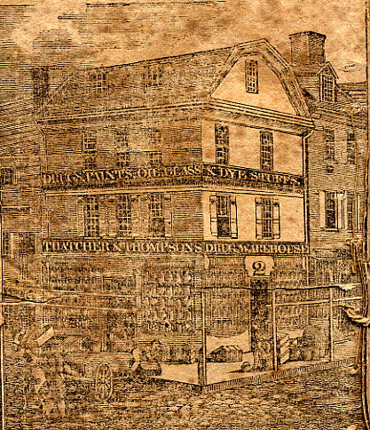

Second Street
Second (2nd) Street, by its proximity to the Delaware River, has long been occupied; early
purchasers of land in Philadelphia often received a lot extending from Front to 2nd. 2nd
Street has the highest run of numbers of any street in MacPherson's listings, and was
therefore probably the Philadelphia street where one could walk for the longest time in
built-up sections, if one includes the houses in Southwark and Northern Liberties as well. Because
MacPherson continued his numbering of north-south streets beyond the city limits at Vine and
South Streets, where White stopped-- or was supposed to have stopped-- few or no matchups are possible
with a very large run of numbers at two points in MacPherson's numbering. Because of the
relative sparseness of settlement at the city limits, it's difficult to tell for certain
which of those numbers were in Philadelphia and which in the suburb (Northern Liberties or
Southwark).
BEYOND SHIPPEN TO THE SOUTH (MACPHERSON LISTINGS ONLY, going south)
EAST SIDE:
(1785) #717, McGleester, Francis
(1790 census) Reese, George (Shoemaker), 4 FW males over 16, 2 FW males under 16, 2 FW females
(1791) #265 S. 2nd St., Reese, George, cordwainer
(1785) #718, Arn, Daniel
(1790 census) Thumb, George (Loaf Baker), 3 FW males over 16, 2 FW males under 16, 2 FW females
(1791) #267 S. 2nd St., Thumb, George, baker
(1785) #719, Laur, Philip
(1790 census) Drury, Mary (Shop Keeper), 2 FW females
(1791) #269 S. 2nd St., Drury, Mary, shopkeeper
(1791) #271 S. 2nd St., no listing
(1785) #721, Lucas, James
(1790 census) Hansey, Caleb (Laborer), 1 FW male over 16, 2 FW males under 16, 4 FW females
(1791) #273 S. 2nd St., Hansey, Caleb, labourer
(1785) #722, Bayard, William
(1790 census) Baird, William (Mate), 1 FW male over 16, 2 FW females
(1791) #275 S. 2nd St., Baird, William, mariner
(1785) #723, Rowen, Moses
(1790 census) Williams, Harden (Sea Capt.) 1 FW male over 16, 1 FW male under 16, 3 FW females
(1791) #277 S. 2nd St., Williams, Harden, sea captain
(1785) #724, Price, William
(1790 census) Price, Wm. (Grocer), 2 FW males over 16, 1 FW male under 16, 3 FW females
(1791) #299 S. 2nd St., Price, William, grocer
(1785) #726, Carleton, Richard
(1790 census) Durney, Michl. (Biscuit Br.), 2 FW males over 16, 3 FW males under 16, 2 FW females
(1791) #303 S. 2nd St., Durny, Michael, biscuit baker
(1785) #727, Howard, Andrew
(1790 census) Utrecht, Lewis (Inn Keeper), 1 FW male over 16, 1 FW female
(1791) #305 S. 2nd St., Utrecht, Lewis, innkeeper
(1785) #728, Leonard, William
(1790 census) Linnard, Wm. (House Car.), 4 FW males over 16, 2 FW males under 16, 5 FW females
(1791) #307 S. 2nd St., Linnard, William, house carpenter
(1785) #729, Wilson, William
(1790 census) Adamson, Wm. (Sea Capt.), 1 FW male over 16, 3 FW females
(1791) #309 S. 2nd St., Adamson, William, sea captain
(1785) #730, Morris, Luke
(1790 census) Morris, Luke (Gentleman), 2 FW males over 16, 3 FW females
(1791) #311 S. 2nd St., Morris, Luke, gentleman
(1785) #731, no listing
(1790 census), no listing
(1791) #313 S. 2nd St., no listing
(1785) #732, no listing
(1790 census) Tate, Thos. (Mariner), 1 FW male over 16, 1 FW females
(1790 census) Allen, Isaac (Mariner), 1 FW male over 16, 1 FW male under 16, 1 FW female
(1791) #315 S. 2nd St., Allen, Isaac, mariner
(1791) #315 S. 2nd St., Tate, Thomas, mariner
(1785) #733, Maxfield, Thomas
(1790 census) Edwards, John (Cooper), 1 FW male over 16, 1 FW male under 16, 3 FW females
(1790 census) Elliott, Margaret (Spinster), 1 FW male under 16, 2 FW females
(1790 census) Lindsey, William (Weaver), 1 FW male over 16, 1 FW male under 16, 1 FW female
(1791) #317 S. 2nd St., Edwards, John, cooper
(1791) #317 S. 2nd St., Elliott, Margaret, spinster
(1791) #317 S. 2nd St., Lindsey, William, weaver
(1790 census) Penrose, Jo'n. (Justice of ye Peace). No people are listed as living here,
indicating it was a place of business only. This entry could have been either #319, #321
S. 2nd, or any of the listings up through #339, since John Gardner's home is next listed in
the census. They probably used an existing building, though, so one of the two numbered
addresses just below is more likely to have been Penrose's office in 1790-91.
(1785) #734, Perry, George
(1791) #319 S. 2nd St., no listing
(1785) #735, Shaw, Archibald
(1791) #321 S. 2nd St., no listing
(1785) #745, Morton, John
(1790 census) Gardner, John (Sea Capt.), 1 FW male over 16, 1 FW male under 16, 6 FW females
(1791) #341 S. 2nd St., Gardner, John, sea captain
(1785) #746, Williamson, Joseph
(1790 census) Carson, John (Mate), 1 FW male over 16, 1 FW male under 16, 3 FW females
(1791) #343 S. 2nd St., Carson, John, mariner
(1785) #747, Brown, Elisha
(1790 census) Clossy, Miles Franklin (Clerk in Registers Office of U.S.), 1 FW male over 16, 2 FW males under 16, 3 FW females
(1791) #345 S. 2nd St., Cloffy, Miles F., clerk in the Registers Office of the United States
The copy of the census used is a modern printing, so it's not clear who correctly
interpreted the spelling of the last name of the man.
(1785) #748, Wharton, Benjamin
(1790 census) Gifford, Jno. (Mate), 1 FW male over 16, 1 FW male under 16, 3 FW females
(1791) #347 S. 2nd St., Gifford, John, sea captain
(1785) #749, Cook, Edward
(1790 census) Bowan, Jno. (Dr. of Physick), 1 FW male over 16, 1 FW male under 16, 6 FW females
(1791) #349 S. 2nd St., Bowan, John, doctor of physic
(1785) #752, Knox, John
(1790 census) Ridley, George (Cooper), 1 FW male over 16, 2 FW females
(1790 census) Smith, Wm. (Shoe Maker), 3 FW males over 16, 3 FW males under 16, 5 FW females
(1790 census) Story, Luke (Fuller), 1 FW male over 16, 1 FW male under 16, 1 FW female
(1791) #355 S. 2nd St., Ridley, George, cooper
(1791) #355 S. 2nd St., Smith, William, cordwainer
(1791) #355 S. 2nd St., Story, Luke, fuller
(1785) #753, Lytle, James
(1790 census) Little, Jas. (School Mas'r), 1 FW male over 16, 3 FW females
(1790 census) Kidd, Jas. (School Mas'r), 1 FW male over 16, 1 FW male under 16, 3 FW females
(1790 census) McDowell, Jas. (Weaver), 1 FW male over 16, 3 FW males under 16, 1 FW female
(1790 census) Dietz, Frederick (School Mas'r), 1 FW male over 16, 1 FW male under 16, 3 FW females
(1791) #357 S. 2nd St., Little, James, schoolmaster
(1791) #357 S. 2nd St., Kidd, James, schoolmaster
(1791) #357 S. 2nd St., McDowell, James, weaver
(1791) #357 S. 2nd St., Dietz, Frederick, schoolmaster
(1785) #755, Malone, Patrick
(1791) #359 or #361 S. 2nd St., no listing
(1785) #756, Crawford, Felix
(1790 census) Crawford, Felix (Joiner & Cabinet Maker), 2 FW males over 16, 4 FW males under 16, 3 FW females
(1791) #363 S. 2nd St., Crawford, Felix, joiner
(1785) #761, Connelly, John
(1790 census) Lyons, Wm. (Laborer), 1 FW male over 16, 2 FW males under 16, 4 FW females
(1791) #373 S. 2nd St., Lyons, William, labourer
(1785) #762, no listing
(1790 census) McConnell, Jno. (Weaver), 1 FW male over 16, 1 FW female
(1791) #375 S. 2nd St., McConnell, John, weaver
(1785) #765, no listing
(1790 census) Gilion, Jas. (Shoe Mr.), 1 FW male over 16, 1 FW male under 16, 4 FW females
(1790 census) Sexton, Jno. (Cooper), 1 FW male over 16, 2 FW females
(1791) #381 S. 2nd St., Gilion, James, cordwainer
(1791) #381 S. 2nd St., Sexton, John, cooper
(1785) #766, no listing
(1790 census) Shingleton, Thos. (Caulker), 1 FW male over 16, 1 FW male under 16, 3 FW females
(1791) #383 S. 2nd St., Shingleton, Thomas, caulker
(1785) #767, vacant or residents would not give name
(1790 census) McCleod, Malcolm (Lab'r), 1 FW male over 16, 1 FW male under 16, 4 FW females
(1791) #385 S. 2nd St., McCleod, Malcom, labourer
(1785) #768, Whiteman, Henry
(1790 census) Pearson, Anth'y (Brick Layer), 2 FW males over 16, 2 FW females
(1791) #387 S. 2nd St., Pearson, Anthony, bricklayer
(1785) #769, Graham, John
(1790 census) Delavan, John (Ship Ca'r), 1 FW male over 16, 2 FW males under 16, 5 FW females
(1791) #389 S. 2nd St., Delavau, John, ship carpenter
(1785) #770, no listing
(1790 census) Featherbridge, Jno. (Ship Ca'r), 4 FW males over 16, 4 FW females
(1791) #391 S. 2nd St., Featherbridge, John, ship carpenter
(1790 census) 5 free black people. Because there's such a number jump it's impossible to
know exactly where they lived.
(1785) #785, Swanson, John
(1790 census) Swanson, Joseph (Rope Maker), 2 FW males over 16, 1 FW female
(1791) #415 S. 2nd St., Swanson, Joseph, rope maker
(1785) #786, Vennuet, Charles
(1790 census) Swanson, Wm. (Shoe Maker), 1 FW male over 16, 1 FW female
(1791) #417 S. 2nd St., Swanson, William, cordwainer
(1785) #787, Roberts, James
(1790 census) Search, Chris'r (Wheel Wright), 3 FW males over 16, 3 FW males under 16, 2 FW females
(1791) #419 S. 2nd St., Search, Christopher, wheelwright, also at 406 N. Water St.
Search's wagonmaking shop was on the other side of the street nearby, at #406 S. 2nd.
(1785) #789, Davis, Widow
(1790 census) Wise, Thos. (Rope maker), 1 FW male over 16, 1 FW male under 16, 5 FW females
(1791) #421 S. 2nd St., Wise, Thomas, rope maker
(1785) #790, Webb, Widow
(1790 census) Webb, Margaret (Gentlewom'n), 1 FW male over 16, 2 FW females
(1791) #423 S. 2nd St., Webb, Margaret, gentlewoman
(1785) #791, no listing
(1790 census) Mackay, Jas. (Rope maker), 1 FW male over 16, 1 FW male under 16, 2 FW females
(1791) #425 S. 2nd St., Mackay, James, rope maker
(1785) #792, McDonald, Roger
(1790 census) Hartsock, Wm. (Laborer), 2 FW males over 16, 1 FW female
(1791) #427 S. 2nd St., Hartsock, William, labourer
(1785) #793, McFarland, Alexander
(1790 census) Hearsh, Philip (Cooper), 2 FW males over 16, 2 FW males under 16, 4 FW females
(1791) #429 S. 2nd St., Hearsh, Philip, cooper
(1785) #794, Bryar, Emanuel
(1790 census) Walker, Wm. (Laborer), 1 FW male over 16, 1 FW male under 16, 3 FW females
(1791) #431 S. 2nd St., Walker, William, labourer
(1785) #796, Parker, James
(1790 census) Butterworth, Moses (Laborer), 1 FW male over 16, 1 FW females
(1791) #433 S. 2nd St., Butterworth, Moses, labourer
(1785) #797, Adams, William
(1790 census) Hutton, Jno. (Biscuit B'r.), 1 FW male over 16, 3 FW males under 16, 3 FW females
(1791) #435 S. 2nd St., Hutton, John, baker
(1785) #798, McKeever, Angus
(1790 census) Phipps, John (Laborer), 1 FW male over 16, 1 FW male under 16, 2 FW females
(1791) #437 S. 2nd St., Phipps, John, labourer
UNCERTAIN SIDE (probably east side, based on #798 next door):
(1785) #799, Hughs, Benjamin
WEST SIDE:
(1790 census), no listing. The Southwark listings for the southern end of the west side of
2nd street end with #420 S. 2nd, the laborer John Giffin or Giffins. Was Steel actually in
Moyamensing, the next township southward? No Steels appear in the 1790 census combined listings for
Passyunk & Moyamensing Townships, which makes one wonder whether the street number might
have been a typographical error.
(1791) #450 S. 2nd St., Steel, John, cooper
(1790 census) Giffins, Jno. (Labourer), 2 FW males over 16, 2 FW males under 16, 4 FW females
(1791) #420 S. 2nd St., Giffin, John, labourer
(1790 census) Wood, Jas. (Butcher), 1 FW male over 16, 6 FW females
(1791) #418 S. 2nd St., Wood, James, butcher
(1790 census) Ganno, George (Shoe Maker), 1 FW male over 16, 3 FW males under 16, 3 FW females
(1791) #412 S. 2nd St., Ganno, George, cordwainer
(1785) #805, Deeds, Frederick
(1790 census) Dietz, Fred'k (Taylor), 2 FW males over 16, 2 FW males under 16, 2 FW females
(1791) #408 S. 2nd St., Dietz, Frederick, taylor
(1790 census) Search, Chris'r (Wheel Wh't [sic]). No people listed as living here, so probably used for business only. Search's home was nearby, on the other side of the street at #419 S. 2nd; was this what they meant instead of Water Street?
(1791) #406 S. 2nd St., Search, Christopher, wheelwright, also at 419 N. Water St.
(1785) #809, no listing
(1790 census) Harney, Antho'y (B. smith). No people listed as living here, so probably used for business only.
(1791) #400 S. 2nd St., Karney, Anthony, blacksmith
(1785) #810, McCreiner, William
(1790 census) McCreaner, Wm. (Shoe M'r), 1 FW male over 16, 2 FW males under 16, 2 FW females
(1791) #398 S. 2nd St., McCreaner, William, cordwainer
(1785) #811, McCloud, Norman
(1785) #812, Handy, Daniel
(1785) #814, Bakewood, George
(1785) #815, Clare, Thomas
(1785) #815, Claw, Thomas
(1785) #816, Montgomery, Robert
(1785) #817, Briggs, John
(1790 census) Ware, Jas. (Taylor), 1 FW male over 16, 3 FW males under 16, 5 FW females
(1790 census) McCauley, Dan'l (Mast M'r), 1 FW male over 16, 3 FW females
(1791) #396 S. 2nd St., Ware, James, taylor
(1791) #396 S. 2nd St., McCauley, Daniel, mast maker
(1790 census) Wells, Martha (Spinster), 1 FW female
(1790 census) Johnston, Rob't (Mariner), 1 FW male over 16, 2 FW males under 16, 1 FW female
(1791) #394 S. 2nd St., Wells, Martha, spinster
(1791) #394 S. 2nd St., Johnson, Robert, mariner
(1790 census) Munro, Jno. (Laborer), 1 FW male over 16, 1 FW male under 16, 1 FW female
(1790 census) Henry, Jno. (Laborer), 1 FW male over 16, 1 FW male under 16, 1 FW female
(1790 census) Cauley, Jno. (Taylor), 1 FW male over 16, 2 FW males under 16, 3 FW females
(1791) #392 S. 2nd St., Munro, John, labourer
(1791) #392 S. 2nd St., Henry, John, labourer
(1791) #392 S. 2nd St., Cauley, John, taylor
(1790 census) Joice, Thos. (Taylor), 1 FW male over 16, 1 FW male under 16, 2 FW females
(1791) #390 S. 2nd St., Joice, Thomas, taylor
(1790 census) Dillon, Jno. (Weaver), 2 FW males over 16, 1 FW male under 16, 2 FW females
(1791) #388 S. 2nd St., Dillon, John, weaver
(1790 census) Robinson, Jas. (Laborer), 3 FW males over 16, 5 FW females
(1791) #386 S. 2nd St., Robinson, James, labourer
(1785) #824, Lee, Robert
(1790 census) Lee, Rob't (Laborer), 2 FW males over 16, 5 FW females
(1791) #376 S. 2nd St., Lee, Robert, labourer
(1785) #825, Givet, Henry
(1785) #833, Turner, Joseph
(1790 census) Turner, Joseph (Gentleman), 1 FW male over 16, 2 FW males under 16, 9 FW females
(1791) #362 S. 2nd St., Turner, Joseph, gentleman
(1785) #844, Knox, John
(1790 census) Knox, Jno. (Gentleman), 1 FW male over 16, 1 FW male under 16, 4 FW females
(1791) #340 S. 2nd St., Knox, John, gentleman
(1785) #849, Dill, James
#849 no doubt corresponded to one of the following 1790-91 listings, which is why the
whole is separated by horizontal lines.
(1790 census) Crayton, Rob't (Laborer), 1 FW male over 16, 3 FW males under 16, 1 FW female
(1791) #336 S. 2nd St., Crayton, Robert, labourer
(1790 census) Goss, Joseph (Dr. of Physick), 1 FW male over 16, 1 FW male under 16, 1 FW female
(1791) #334 S. 2nd St., Goss, Joseph, doctor of physic
(1790 census) Lenard, Wm. (House Carp't.). No people listed as living here; probably a place of business.
(1791) #332 S. 2nd St., Leonard, William, house carpenter
(1785) #850, no listing
(1790 census) McDougal, Hugh (Laborer), 1 FW male over 16, 1 FW male under 16, 1 FW female
(1790 census) Moore, And'w (Laborer), 1 FW male over 16, 2 FW males under 16, 2 FW females
(1791) #328 S. 2nd St., McDougal, Hugh, labourer
(1791) #328 S. 2nd St., Moore, Andrew, labourer
(1785) #851, no listing
(1790 census) McKinsey, Alex'r (Weaver), 1 FW male over 16, 1 FW female
(1790 census) Martin, Rob't (Taylor), 2 FW males over 16, 1 FW female
(1791) #326 S. 2nd St., McKinsey, Alexander, weaver
(1791) #326 S. 2nd St., Martin, Robert, taylor
(1785) #852, no listing
(1790 census) Hannan, Arch'd (Laborer), 1 FW male over 16, 1 FW female
(1790 census) Young, Jno. (Mariner), 1 FW male over 16, 2 FW females
(1791) #324 S. 2nd St., Hannan, Archibald, labourer
(1791) #324 S. 2nd St., Young, John, mariner
(1785) #853, no listing
(1790 census) Brown, Jno. (Laborer), 1 FW male over 16, 2 FW males under 16, 3 FW females
(1791) #322 S. 2nd St., Brown, John, labourer
(1785) #854, Gardiner, John
(1790 census) Barckley, Sam'l (Hatter), 1 FW male over 16, 5 FW males under 16, 4 FW females
(1791) #320 S. 2nd St., Barclay, Samuel, hatter
(1785) #855, Hamilton, Alexander
(1790 census) Hamilton, Alex'r (Mariner), 1 FW male over 16, 2 FW females
(1791) #318 S. 2nd St., Hamilton, Alexander, mariner
(1785) #856, Barkloe, Jacob
(1790 census) Wiley, Wm. (Laborer), 1 FW male over 16, 1 FW male under 16, 2 FW females
(1791) #316 S. 2nd St., Wiley, William, labourer
(1785) #858, Cook, Widow
(1790 census) Cook, Barbary (Baker), 2 FW males under 16, 3 FW females
(1791) #314 S. 2nd St., Cook, Barbara, baker
(1785) #859, McCullogh, John
(1790 census) Crozier, Rob't (Weaver), 2 FW males over 16, 1 FW females
(1791) #312 S. 2nd St., Crozier, Robert, weaver
(1785) #860, Snell, Jacob
(1785) #861, Hornsby, Thomas
(1790 census) McDougal, Jas. (Mariner), 2 FW males over 16, 7 FW females
(1791) #310 S. 2nd St., McDougall, James, mariner
(1785) #862, Johnson, James
(1790 census) Johnston, Jas. (Laborer), 4 FW males over 16, 3 FW males under 16, 7 FW females
(1791) #308 S. 2nd St., Johnston, James, labourer
(1785) #863, Carlan, Edward
(1790 census) Toland, Jas. (Laborer), 1 FW male over 16, 4 FW females
(1791) #306 S. 2nd St., Toland, James, labourer
(1785) #864, Hamble, William
(1790 census) Stewart, Alexander (Brick Layer), 3 FW males over 16, 4 FW females
(1791) #304 S. 2nd St., Stewart, Alexander, bricklayer
(1790 census) McCulley, Jane (Spinster), 1 FW male over 16, 3 FW males under 16, 6 FW females
(1791) #302 S. 2nd St., McCully, Jane, spinster
(1785) #865, Beatty, William
(1790 census) Beaty, Wm. (Weaver), 1 FW male over 16, 1 FW male under 16, 5 FW females
(1790 census) Cannon, Jno., 1 FW male over 16, 1 FW female
(1790 census) Williams, Joseph, 3 FW males over 16, 1 FW male under 16, 2 FW females
(1791) #300 S. 2nd St., Beaty, William, weaver
(1791) #300 S. 2nd St., Cannon, John, labourer
(1791) #300 S. 2nd St., Williams, Joseph
(1785) #866, no listing
(1790 census) Slemmer, Jacob (Cedar Cooper), 1 FW male over 16, 2 FW males under 16, 4 FW females
(1791) #298 S. 2nd St., Slemmer, Jacob, cedar cooper
(1785) #867, Owen, Barnaby
(1790 census) Green, Jno. (Lod'g House), 5 FW males over 16, 5 FW males under 16, 6 FW females
(1791) #296 S. 2nd St., Green, John, lodging house
(1785) #868, Wharton, Samuel, magistrate
(1790 census) Morris, Antho'y (Att'y at Law), 1 FW male over 16, 2 FW females, 1 free black person
(1791) #294 S. 2nd St., Morris, Anthony, Esq., attorney at law
(1785) #875, Lascom, John
(1790 census) Tremble, Fran's (Joiner and Cabinet maker). No people are listed as living here, indicating it was probably a place of business.
(1791) #288 S. 2nd St., Trumble, Francis, joiner, also at 19 George St., Southwark
This was probably the same Trumble (c.1716-1798) who was a famous 18th century Philadelphia maker of Windsor
chairs, who was just north of here on 2nd Street (q.v.) in 1785. See Bjerkoe (in Cabinetmakers of America p.221).
(1785) #876, Roll, Godlip
(1790 census) Burnhouse, George (Cabinet maker), 2 FW males over 16, 2 FW males under 16, 2 FW females
(1791) #284 S. 2nd St., Burnhouse, George, cabinetmaker
(1785) #877, Proctor, Francis
(1790 census) Henderson, Matt (Gentleman), 5 FW males over 16, 1 FW male under 16, 3 FW females
(1791) #282 S. 2nd St., Henderson, Matthew, tavernkeeper
(1785) #878, Wharton, Isaac
(1790 census) Wharton, Sam'l (Justice of ye Peace), 2 FW males over 16, 1 FW male under 16, 5 FW females, 1 free black person
(1791) #278 S. 2nd St., Wharton, Samuel, Esq.,
(1785) #879, Thumb, George
(1790 census) Peart, Mary (Gentlewoman), 1 FW male under 16, 4 FW females
(1791) #276 S. 2nd St., Peart, Mary, gentlewoman
(1785) #880, Gamble, James
(1790 census) Adamson, Alex'r (Sea Capt.), 1 FW male over 16, 1 FW female
(1790 census) Carson, Jas. (School Master), 1 FW male over 16, 3 FW females
(1791) #274 S. 2nd St., Adamson, Alexander, sea captain
(1791) #274 S. 2nd St., Carson, James, schoolmaster
(1785) #881, Cowen, William
(1790 census) Barry, Jno. (Laborer), 1 FW male over 16, 2 FW females
(1790 census) Waters, Jno. (School Master), 1 FW male over 16, 2 FW females
(1791) #272 S. 2nd St., Barry, John, labourer
(1791) #272 S. 2nd St., Waters, John, schoolmaster
(1785) #882, Dickinson, John
(1790 census) Bright, Jno. (Shoe maker), 3 FW males over 16, 1 FW male under 16, 3 FW females
(1790 census) Flamant, Francis (Manufacturer of Hair Powder), 2 FW males over 16, 1 FW female
(1790 census) Parker, Wm. (Shoe maker), 2 FW males over 16, 4 FW females
(1790 census) Parker, Adam (Shoe Maker), 1 FW male over 16, 2 FW females
(1791) #270 S. 2nd St., Bright, John, cordwainer
(1791) #270 S. 2nd St., Flamant, Francis, manufacturer of hair powder
(1791) #270 S. 2nd St., Parker, Adam, cordwainer
BETWEEN SHIPPEN AND SOUTH, EAST SIDE (going south)
(1785) #713, no listing
(1790 census) no listing
(1791) #257 S. 2nd St., no listing
Since even the census lists nothing here, it likely was a vacant lot, but the provision
of a number in Biddle's numbering system (between #259 and the corner property at #255)
means there was a space there.
(1785) #714, Bozey, Hubert
(1790 census) Marshall, Alexr (Biscuit Baker), 1 FW male over 16, 1 FW male under 16, 2 FW females
(1790 census) Tate, Jno. (Printer), 1 FW male over 16, 4 FW female
(1790 census) Duffey, Andw. (Shoemaker), 1 FW male over 16, 1 FW female
(1790 census) McDonnel, Saml. (Labourer), 1 FW male over 16, 1 FW female
(1791) #259 S. 2nd St., Marshall, Alexander, baker
(1791) #259 S. 2nd St., McDonnell, Samuel, labourer
(1791) #259 S. 2nd St., Tate, John, printer
Note the presence of Andrew Duffey in the census but not in the directory.
(1785) #715, Rowen, James
(1790 census) Roan, Jas. (Shop Keeper), 1 FW male over 16, 8 FW females
(1791) #261 S. 2nd St., Roan, James, shopkeeper
(1785) #716, no listing
(1791) #263 S. 2nd St., no listing
BETWEEN SHIPPEN AND SOUTH, WEST SIDE (going north)
(1785) #883, Trumble, Francis
(1785) Trumble, Francis, windsor chair maker, 2nd between Shippen and South
(1790 census) Lewis, Wm. (Merchant), 2 FW males over 16, 3 FW males under 16, 2 FW females, 3 free black people
(1791) #268 S. 2nd St., Lewis, William, merchant
Trumble (c.1716-1798) was a famous 18th century Philadelphia maker of Windsor
chairs. See Bjerkoe (in Cabinetmakers of America p.221).
(1785) #884, Swift, Charles
(1785) Swift, Charles, Esq., counsellor at law, 2nd between Shippen and South
(1790 census) Sykes, Wm. (Merchant), 2 FW males over 16, 1 FW male under 16, 4 FW females, 1 free black person
(1791) #266 S. 2nd St., Sykes, William, merchant, also at 150 S. wharves
(1785) #885, Lenox, Hugh
(1790 census) Lenox, Hugh (Merchant), 1 FW male over 16, 2 FW females, 1 free black person, 1 slave
(1791) #264 S. 2nd St., Lenox, Hugh, merchant
According to the 1786 fire insurance survey of the Mutual Assurance Co. (the Green Tree),
published in The Mutual Assurance Company Papers, Vol. I, this building was
three stories, 22'6" by 37', with a two-story rear kitchen 26' by 15'. Hugh Lennox (1736-1806)
was a merchant, and later, U.S. Consul to Jamaica. He lived here from at least 1785 to
1792, and in that year government official Joseph Nourse (1754-1841) assumed the policy and
began living here. He moved to the "Federal City" (Washington, D.C.) with the Federal
government at the end of the decade.
(1785) #886, Ashmead, John
(1790 census) McRoy, John (House Carpen'r), 1 FW male over 16, 1 FW male under 16, 4 FW females
(1791) #262 S. 2nd St., McRoy, John, house carpenter
(1785) #887, Williams, William
(1790 census) Williams, Wm. (House Carpenter), 2 FW males over 16, 2 FW males under 16, 2 FW females
(1791) #260 S. 2nd St., Williams, William, house carpenter
BETWEEN SHIPPEN AND SOUTH, UNKNOWN SIDE
(1785) Hayward, Thomas, captain, 2nd between Shippen and South
(1785) Proctor, Francis, grocer, 2nd between Shippen and South
CORNER OF 2ND AND SOUTH
(1785) #712, Cornish, John
(1785) Cornish, John, grocer, corner of South and 2nd
There is also a John Cornish, shopkeeper, listed nearby on 2nd between South and Lombard.
(1790 census) Cornish, Jno. (Shop Keepr), 3 FW males over 16, 1 FW male under 16, 4 FW females
The information in the 1790 census makes it clear he was on the southeastern corner.
(1791) #255 S. 2nd St., Cornish, John, shopkeeper
(1785) #888, Holton, Widow
(1785) Holton, Wilton, shopkeeper, corner of South and 2nd
(1790 census) Henderson, William. No people are listed as living here, meaning it was a place of business only.
(1791) #258 S. 2nd St., Henderson, William, storekeeper
The census evidence (not to mention the numbering) establishes this as the southwestern corner.
(1785) Connelly, George, ship chandler, corner of South and 2nd
(1785) Keer, William, shopkeeper, corner of South and 2nd
(1785) Palmer, John and James, grocers, corner of South and 2nd
BETWEEN SOUTH AND LOMBARD, EAST SIDE (going south)
(1785) #698, no listing
(1790 census) McKean, Wm. (Grocer), 1 FW male over 16, 1 FW male under 16, 10 FW females
(1791) #221 S. 2nd St., McKean, William, grocer
(1785) #699, Cronin, John
(1785) Croners, John, shopkeeper, 2nd between South and Lombard
(1790 census) McCutcheon, Elizabeth (Board'g hous), 10 FW males over 16, 4 FW females
(1791) #223 S. 2nd St., McCutcheon, Elizabeth, boardinghouse
(1785) #700, no listing
(1790 census) Town, Abigail (from Camptown) [sic]. No people listed as living here; probably a place of business only.
(1791) #225 S. 2nd St., Town, Abigail, grocer
(1790 census) Delacroix, Joseph (Grocer; Store), 1 FW male over 16
This listing is a mystery; was he in the same building as Abigail Town, running or helping
to run the grocery? The only Joseph Delacroix in the 1791 directory is a confectioner and
distiller at #59 High Street.
(1785) #701, no listing
(1790 census) Tidmash, Richard (Drugest), 1 FW male over 16, 1 FW male under 16, 3 FW females
(1791) #227 S. 2nd St., Tidmash, Richard, druggist
(1785) #702, no listing
(1790 census) no listing
(1791) #229 and #231 S. 2nd St., no listing
(1785) #703, Connelly, Widow
(1790 census) no listing
(1791) #233 and #235 S. 2nd St., no listing
(1785) #704, Kuhn, Widow
(1790 census) Scavendyke, Peter (Tallow Chan'r), 2 FW males over 16, 1 FW male under 16, 2 FW females, 1 free black person, 1 slave
(1791) #237 S. 2nd St., Scavendyke, Peter, tallowchandler
(1785) #705, no listing
(1790 census) Hanmile, James (Grocer), 1 FW male over 16, 1 FW male under 16, 2 FW females
(1791) #239 S. 2nd St., Hanmill, James, grocer
(1785) #706, Palmer, John and Jacob
(1790 census) Palmer, John (Grocer; Store), 1 FW male over 16, 1 FW male under 16
(1791) #241 S. 2nd St., Palmer, John, grocer
BETWEEN SOUTH AND LOMBARD, WEST SIDE (going north)
(1785) #890, no listing
(1790 census) Peltz, Wm. (Grocer), 1 FW male over 16, 5 FW females
(1791) #248 S. 2nd St., Peltz, William, grocer
(1785) #893, no listing
(1790 census) Bedford, Peter (Clerk at C.Hous), 2 FW males over 16, 2 FW males under 16, 6 FW females
(1791) #242 S. 2nd St., Bedford, Peter, clerk at the Custom House
(1785) #894, no listing
(1790 census) Scott, Andrew (Grocer), 2 FW males over 16, 2 FW males under 16, 4 FW females
(1791) #240 S. 2nd St., Scott, Andrew, grocer
(1785) #895, Lithgow, Edward
(1785) Lathcup, Edward, house carpenter, 2nd between South and Lombard
(1790 census) Lethgow, Edward (Carpenter), 2 FW males over 16, 4 FW females
(1791) #238 S. 2nd St., Lethgow, Edward, carpenter
(1785) #896, Jordan, James
(1790 census) Middleton, Samuel (Shoe Maker), 2 FW males over 16, 1 FW female
(1791) #236 S. 2nd St., Middleton, Samuel, cordwainer
(1785) #897, Batson, Widow
(1790 census) Batson, Catherin (Pastre cook), 1 FW male under 16, 6 FW females
(1791) #234 S. 2nd St., Batson, Catharine, pastry cook
(1785) #898, Evans, Edward
(1790 census) Dick, Campbell (Shop keeper), 1 FW male over 16, 1 FW male under 16, 5 FW females, 1 free black person
(1791) #232 S. 2nd St., Dick, Campbell, shopkeeper
(1785) #899, Napier, Thomas, planemaker
(1785) Napier, Thomas, plain maker, 2nd between South and Lombard
(1790 census) Miller, David (Grocer), 1 FW male over 16, 3 FW females
(1791) #230 S. 2nd St., Miller, David, grocer
(1785) #900, Oskullion, Francis
(1785) Oskullion, Francis, sign Lamb, 2nd between South and Lombard
(1790 census) Myer, Catherin (hukster shop), 1 FW male over 16, 2 FW males under 16, 2 FW females
(1791) #228 S. 2nd St., Myer, Catharine, huckster shop
(1785) #901, no listing
(1791) #226 S. 2nd St., no listing
(1785) #902, Gamble, James
(1790 census) Patterson, Esther (Shop keeper), 3 FW females
(1791) #224 S. 2nd St., Patterson, Esther, shopkeeper
BETWEEN SOUTH AND LOMBARD, UNKNOWN SIDE
(1785) Connelly, George, tallow chandler, 2nd between South and Lombard
(1785) Cornish, John, shopkeeper, 2nd between South and Lombard (also see listing at corner)
(1785) Groves, James, cordwainer, 2nd between South and Lombard
(1785) Harle, Eleanor, shopkeeper, 2nd between South and Lombard
(1785) Rigden, William, painter, 2nd between South and Lombard
CORNER OF 2ND AND LOMBARD
(1785) #696 2nd Street, Dick, Campbell
(1785) Dick, Campbell, shopkeeper, corner of Lombard and 2nd
By the numbering, on the northeastern corner.
(1790 census) Nash, Rosanna (hous keeper), 1 FW female, 1 free black person
(1791) #217 S. 2nd St., Nash, Rosanna, boardinghouse
(1785) #697 2nd Street, #12 Lombard Street, Maffet, Robert
(1785) Moffet, Robert, sign Jolly Sailor, corner of Lombard and 2nd
By the numbering, on the southeastern corner.
(1790 census) no listing
(1791) #219 S. 2nd St., no listing
(1785) #903 2nd Street, #14 Lombard Street, McCutcheon, James
(1785) McCutcheon, James, innkeeper, sign Fountain, corner of Lombard and 2nd
By the numbering, on the southwestern corner.
(1790 census) Ogden, Wm. (Tavern), 1 FW male over 16, 3 FW males under 16, 4 FW females
(1791) #222 S. 2nd St., Ogden, William, tavernkeeper
(1785) #904 2nd Street, #318 Lombard Street, Musgrove, Aaron
(1785) Musgrave, Aaron, grocer, 2nd between Lombard and Pine
By the numbering, (and despite White's listing) on the northwestern corner.
(1790 census) Musgrove, Aron (Grocer), 1 FW male over 16, 3 FW females, 1 free black person
(1791) #220 S. 2nd St., Musgrove, Aaron, grocer
According to Rum Punch and Revolution by Peter Thompson, the Pennsylvania
Farmer tavern was located on this corner; it may have been on the southwestern corner
where the Fountain was in 1785. (p.146)
BETWEEN LOMBARD AND PINE, EAST SIDE (going south)
(1785) #686, Peltz, William
(1785) Peltz, William, grocer, 2nd between Lombard and Pine
(1790 census) Arthur, Miss (Milliner), no free people, 3 slaves
(1791) #205 S. 2nd St., Arthur, Miss, milliner
This is quite intriguing; a property with no free people, but three slaves? This stretch
along the east side of the market seems to have had quite a few slaves; in addition to these
three, near neighbors to the south had slaves totalling eight more. This was a rare
concentration in late 18th century Philadelphia.
(1785) #689, Rigdon, William, painter
(1790 census) Ritchey, Mary (boarding hous), 2 FW males over 16, 3 FW females
(1791) #207 S. 2nd St., Ritchey, Mary, boardinghouse
(1785) #690, Harper, Thomas, merchant
(1785) Harper, Thomas, merchant, 2nd between Lombard and Pine
See also the Thomas Harper, upholsterer, listed by White on the same block (in the unknown-side
listings, below).
(1790 census) Harper, Mary (Gen'l Woman), 4 FW males under 16, 5 FW females, 2 slaves
(1791) #209 S. 2nd St., Harper, Mary, gentlewoman
According to the fire insurance survey of the Mutual Assurance Co. (the Green Tree),
published in The Mutual Assurance Company Papers, Vol. I, says that this building
was a two-story building 25' by 36', with a 2-story backbuilding 36' by 12' at the time it
was insured in 1784, and that it was raised to three stories in 1792. It was listed
as being "opposite Stamper's Alley," and the book says this building is still standing as
#421 S. 2nd Street. Thomas Harper's will
was proved on May 4, 1790 and included this property, another "dwelling" adjoingin this
property, and a house and lot on Spruce Street between 2nd and 3rd. His wife Mary was
listed here in 1791; she subsequently married Philadelphia landowner John Delaroche.
(modern) #421 S. 2nd Street (see notes for authority for this)
(1790 census) Izard, Ralph, Esq'r (Member of Senate of U.States). No people listed as living here; probably only a place of business.
(1790 census) Serle, James (Mer't), 2 FW males over 16, 2 FW males under 16, 4 FW females, 3 slaves
(1791) #211 S. 2nd St., no listing
(1785) #692, Hamill, William
(1790 census) Creigh, Mr. (Mer[chan]t W[est] Ind[ie]s), 1 FW male over 16, 5 FW males under 16, 2 FW females, 3 slaves
(1791) #213 S. 2nd St., Creigh, _______, merchant
(1785) #693, Connor
(1790 census) Bastide, Anth'y (Umbr'a maker), 1 FW male over 16, 1 FW male under 16, 1 FW female
(1791) #215 S. 2nd St., Bastiade, Anthony, umbrella-maker
According to Rum Punch and Revolution by Peter Thompson, the Sign of the
Plough tavern, founded in the third quarter of the 18th century, was on the east side of 2nd
Street south of Pine and looking out onto the 2nd Street Market. (p.146)
BETWEEN LOMBARD AND PINE, WEST SIDE (going north)
(1785) #905, Hamill, James
(1790 census) Hammill, James (Shop keeper), 1 FW male over 16, 4 FW males under 16, 2 FW females
(1791) #218 S. 2nd St., Hammill, James, shopkeeper
(1785) #906, Henry, James, stone cutter
(1785) Henry, James, stonecutter, 2nd between Lombard and Pine
(1790 census) Hill, John (Tobacon't), 4 FW males over 16, 3 FW males under 16, 2 FW females
(1791) #216 S. 2nd St., Hill, John, tobacconist
(1790 census) Hammill, Susanna (Tavern), 8 free black people
(1791) #214 S. 2nd St., Hammill, Susannah, tavernkeeper
Assuming the census is accurate, this would be one of the few listings for black
businesses in early Philadelphia.
(1785) #907, Murdock, William
(1785) Murdoch, William, sign Mermaid, 2nd between Lombard and Pine
(1790 census) Mullen, Jane (Milnor), 6 free black people
(1791) #212 S. 2nd St., Mullen, Jane, milliner
Assuming the census is accurate, this would be one of the few listings for black
businesses in early Philadelphia.
(1785) #908, McDonald, Thomas
(1790 census) Stewart, Arrabella (Milnor), 2 FW males over 16, 2 FW females
(1791) #210 S. 2nd St., Stewart, Arabella, milliner
STAMPER'S ALLEY goes off to the west from here:
(1785) #909 2nd Street, #1 Stamper's Alley, Delany, Sharp, Collector of the Customs
(1790 census) Palyart, Ignatius (Mer't), 3 FW males over 16, 1 FW male under 16, 3 FW females, 1 free black person
(1791) #208 S. 2nd St., Palyart, Ignatius, Esq., consul general for her most faithful majesty
At the southwestern corner of 2nd Street and Stamper's Alley (there are no eastern corners).
(1785) #911 2nd Street, Morris, James, #44 Stamper's Alley, vacant or residents would not give name
(1785) Morris, John, shopkeeper, corner of Stamper's Alley and 2nd
By implication of the double listing for Sharp Delany of #909 2nd Street, above, these two
listings obviously refer to the same address, clearly on the northwestern corner of 2nd Street
and Stamper's Alley.
(1790 census) Gregory, James (Barber), 2 FW males over 16, 1 FW male under 16, 4 FW females
(1791) #206 S. 2nd St., Gregory, James, barber
(1785) #912, Mason, Abraham
(1785) Mason, Abraham, sail maker, 2nd between Lombard and Pine
(1790 census) Mason, Catherin (Gen'l Woman), 1 FW male over 16, 3 FW females
(1790 census) Williams, Mrs.. No people listed as living here; probably a place of business only. What
that business might have been is unknown.
(1791) #204 S. 2nd St., Mason, Catharine, gentlewoman
(1791) #204 S. 2nd St., Williams, Mrs.
(1785) #913, Pool, Joseph
(1790 census) Taylor, Robert (Lime Seller), 1 FW male over 16, 2 FW males under 16, 3 FW females
(1791) #202 S. 2nd St., Taylor, Robert, lime seller
(1785) #914, Craft, Robert
(1785) Craft, Robert, biscuit baker, 2nd between Lombard and Pine
(1790 census) Baker, Francis (Baker), 4 FW males over 16, 1 FW female
(1791) #200 S. 2nd St., Baker, Francis, baker
(1785) #915, Gregory, James
(1785) Gregory, James, hairdresser, 2nd between Lombard and Pine
(1790 census) Wayman, George (Shoe Mak'r), 1 FW male over 16, 1 FW male under 16, 2 FW females
(1791) #196 S. 2nd St., Wayman, George, cordwainer
(1785) #916, Blatchley
(1790 census) Summerville, John (Joiner), 1 FW male over 16, 1 FW male under 16, 3 FW females
(1791) #194 S. 2nd St., Summervill, John, joiner
(1790 census) Young, Sam'l (Mer't), 3 FW males over 16, 2 FW females, 1 free black person
For some reason Young appears in the census between the listings for #192 and #194 S. 2nd
St.
BETWEEN LOMBARD AND PINE, UNKNOWN SIDE
(1785) Bedson, Mrs., shopkeeper, 2nd between Lombard and Pine
(1785) Bidson, Mrs., shopkeeper, 2nd between Lombard and Pine
(1785) Hammel, James, grocer, 2nd between Lombard and Pine
(1785) Harper, Thomas, upholsterer, 2nd between Lombard and Pine (also see #690-- T.H., merchant)
(1785) Holton, Mary, shopkeeper, 2nd between Lombard and Pine
(1785) McDowell, William, innkeeper, 2nd between Lombard and Pine
(1785) Morris, Hugh, taylor, 2nd between Lombard and Pine
(1785) Pool, Joseph, comb maker, 2nd between Lombard and Pine
CORNER OF 2ND AND PINE
Extending southward from this corner was (and still is) the "New Market"-- market
stalls in the middle of the street, so called to differentiate it from the market stalls
on Market Street. The New Market opened in 1745, noted Edwin Wolf in his Philadelphia: Portrait of an American City, and should not be confused with the
New Market up in the Northern Liberties or the street there which was named after it.
(1785) #681 2nd Street, #308 Pine Street, Soyer, Widow, shopkeeper
(1785) Sawyer, Elizabeth, shopkeeper, corner of Pine and 2nd
By the numbering, on the northeastern corner.
(1790 census) Sawyer, James (Shop Keeper), 1 FW male over 16, 4 FW females
(1791) #201 S. 2nd St., Sawyer, James, shopkeeper, also at 41 Pine St.
(1785) #917, vacant or residents would not give name (the presence of this address at the
southwestern corner is clearly a guess, based on the numbering system and #918 at the
northwestern corner.)
(1790 census) Eveleigh, Nich's, Esq. (Controller of Treasury of U.S.). No people listed as living here; probably an office only.
(1791) #192 S. 2nd St., Eveleigh, Nicholas, Esq., comptroller of the treasury of the United States
(1785) #918 2nd Street, #307 Pine Street, Nixon, John
(1785) Nixon, John, merchant, corner of Pine and 2nd
By the numbering, on the northwestern corner.
(1790 census) Nixon, John, Esqr., 2 FW males over 16, 1 FW male under 16, 8 FW females, 1 free black person, 2 slaves
(1791) #190 S. 2nd St., Nixon, John, Esq.
According to the fire insurance survey of the Mutual Assurance Co. (the Green Tree),
published in The Mutual Assurance Company Papers, Vol. I, this
building was owned by Archibald McCall (1727-1799), and was 40' by 34'
with a cellar kitchen, rare in Philadelphia. The book says that "It is believed that McCall
resided in the same house on South Second Street from 1762 until his death, and that this
building was the insured house" despite discussing his listing in the directories on the
corner of 2nd and Union (q.v.). As sensible as that interpretation was back then, since
it's likely a man would insure his own dwelling if any, the evidence of the directories and the
1790 census flatly contradicts the idea that he lived here.
McCall definitely lived on the corner of 2nd and Union (on the northeastern corner, at that,
based on the odd-numbered 2nd Street address, which by itself would contradict any
claim that he lived on the western side of 2nd Street) and must have rented this property to
Nixon.
The next 2nd Street number after #681 (on the northeastern corner) is #686, which
implies that the southeastern corner was vacant. In 1791 there is also a gap,
represented by #203 S. 2nd St..
(1785) Currie, William, physician, corner of Pine and 2nd
See #928-- MacPherson lists a man by this name as being at that address. Either there
were two men by this name, Currie owned two properties close to each other, or White got
the address wrong (as he seems to have done in quite a few other cases).
BETWEEN PINE AND UNION, EAST SIDE (going south)
(1785) #677, Durang, Jacob
(1785) Durrany, Jacob, hairdresser, 2nd between Pine and Union
(1790 census) Serren, Francis (Stay Mak'r), 1 FW male over 16, 1 FW male under 16, 6 FW females
(1791) #193 S. 2nd St., Serren, Francis, stay maker
(1785) #678, Cash, Widow, shopkeeper
(1785) Cash, Mrs., shopkeeper, 2nd between Pine and Union
(1790 census) Cash, Cynthia (Gen'l woman), 1 FW male over 16, 7 FW females
(1791) #195 S. 2nd St., Cash, Cynthia, gentlewoman
(1785) #679, Allen, Edward
(1790 census) Oakman, Isaac (Shop keeper), 2 FW males over 16, 1 FW male under 16, 9 FW females
(1791) #197 S. 2nd St., Oakman, Isaac, shopkeeper
(1790 census) Cook, Evan (Barber; Shop). No people listed as living here; probably a place of business only.
(1791) #199 S. 2nd St., Cook, Evan, barber
BETWEEN PINE AND UNION, WEST SIDE (going north)
(1790 census) Amies, Thos. (Shoe Maker), 2 FW males over 16, 2 FW males under 16, 3 FW females
(1791) #188 S. 2nd St., Amies, Thomas, cordwainer
(1785) #919, Brownwell, William
(1785) Bromewell, William, cabinetmaker, 2nd between Pine and Union
(1790 census) Brummell, Wm. (Joiner), 1 FW male over 16, 2 FW males under 16, 3 FW females
(1791) #186 S. 2nd St., Bromwell, William, joiner
(1785) #921, Porter, Richard
(1785) Porter, Richard, tallow chandler, 2nd between Union and Spruce
(possibly an error by Francis White, though this is a relatively common name)
(1790 census) Porter, Rob't (Tallow Chan'r), 1 FW male over 16, 2 FW males under 16, 3 FW females
(1791) #184 S. 2nd St., Porter, Robert, tallowchandler
(1785) #922, Bell, Thomas
(1790 census) Bell, Capt. Thos. (Mar'r), 1 FW male over 16, 1 FW male under 16, 3 FW females, 1 free black person
(1791) #182 S. 2nd St., Bell, Thomas, Captain, mariner
(1785) #923, Course, Isaac
(1790 census) Bickley, Ab'm (Mer't), 3 FW males over 16, 1 FW male under 16, 6 FW females
(1791) #180 S. 2nd St., Bickley, Abraham, merchant
BETWEEN PINE AND UNION, UNKNOWN SIDE
(1785) Bickley, Sarah, gentlewoman, 2nd between Pine and Union
(1785) Thompson, Rebecca, shopkeeper, 2nd between Pine and Union
CORNER OF 2ND AND UNION
(1785) #674 2nd Street, McCall, Archibald, merchant
(1785) McCall, Archibald, merchant, corner of Union and 2nd
By the numbering, on the northeastern corner.
(1790 census) McCall, Arch'd (Mert.), 4 FW males over 16, 6 FW males under 16, 9 FW females, 1 free black person, 3 slaves
(1791) #187 S. 2nd St., McCall, Archibald, merchant
Archibald McCall (1727-1799) also owned a property on the northwestern corner of
2nd and Pine (q.v.), which he evidently rented to John Nixon. See the listing for that corner for the
evidence.
(1785) #676 2nd Street, #20 Union Street, Clymer, George
By the numbering, at the southeastern corner.
(1790 census) Lockton, John (Grocer), 2 FW males over 16, 1 FW male under 16, 3 FW females
(1791) #191 S. 2nd St., Lockton, John, grocer
(1785) #925 2nd Street, #107 Union Street, Armstrong, John
(1785) Armstrong, John, sign Leopard, corner of Union and 2nd
By the numbering, on the northwestern corner.
(1790 census) Barclay, George (Grocer). No people listed as living here; probably a place of business only.
(1791) #176 S. 2nd St., Barclay, George, grocer
(1785) #21 Union Street, McKenzie, Widow
(1785) McKinsey, Mary, boardinghouse, corner of Union and 2nd
By the numbering, on the southwestern corner.
(1790 census) Miller, Wm. (Tavern), 1 FW male over 16, 3 FW male under 16, 4 FW females
(1791) #178 S. 2nd St., Miller, William, tavernkeeper
According to the 1789 fire insurance survey of the Mutual Assurance Co. (the Green Tree),
published in The Mutual Assurance Company Papers, Vol. I, this was a three-story
building 20' by 40', with a two-story backbuilding 13'6" by 28'. McKenzie (1755-1811) was
born Mary Ann Brackley, and married Charles McKenzie or McKinsie in 1775. The 1793
directory listed her as a widow, meaning her husband was dead by that time. The book says
that this building still stands.
(modern) #334 S. 2nd Street
BETWEEN UNION AND SPRUCE, EAST SIDE (going south)
(1785) #667, Cox, Moses
(1785) Coxe, Moses and Sons, merchants, 2nd between Union and Spruce
(1790 census) Cox, Moses (Shop keeper), 2 FW males over 16, 1 FW male under 16, 5 FW females
(1791) #173 S. 2nd St., Cox, Moses, shopkeeper
(1785) #668, Criner, John, tailor
(1790 census) Brown, Doct'r, 1 FW male over 16
(1791) #175 S. 2nd St., Brown, _______, doctor of physic
(1785) #669, Darragh, John
(1785) Darragh, John, engraver, 2nd between Union and Spruce
(1785) Darragh, Ann, milliner, 2nd between Union and Spruce
This address was the site of "Loxley Hall," the site of a meeting of British officers
on the night of December 2, 1777. Listening at the keyhole, young Lydia Darragh overheard
the plan to attack Washington's army at Whitemarsh on December 4th, and early the next
morning Lydia took a bag for flour and set off for Whitemarsh on foot to warn the American
army. Unfortunately, far more has been written about that more ladylike heroine to Victorian
sensibilities, Betsy Ross, than about Darragh; the foregoing was from Proceedings of the
Numismatic and Antiquarian Society of Philadelphia, Vol. 33 (Philadelphia: published by the
Society, 1946), p.188. "When in the late 19th century a heroine of the American Revolution
was sought, both Ross and Darragh had their proponents until Darragh's home, then at 177
South 2nd Street, was demolished to
make way for a hotel. Then her story began to be forgotten." (From p.108 of Kenneth Finkel's
Philadelphia
Then and Now.)
(1790 census) Caswell, Ann (Gen'l Woman), 5 FW females
(1791) #177 S. 2nd St., Caswell, Ann, gentlewoman
(1785) #670, Popley, Widow
(1785) Papley, Mrs., gentlewoman, 2nd between Union and Spruce
(1790 census) Papley, Susanna (Gen'l Woman), 2 FW males over 16, 1 FW male under 16, 4 FW females
(1791) #179 S. 2nd St., Papley, Susannah, gentlewoman
(1785) #671, Cybil, Widow
(1785) Sibbel, Rebecca, shopkeeper, 2nd between Union and Spruce
(1790 census) Clark, John (Dyer), 2 FW males over 16, 1 FW male under 16, 4 FW females
(1791) #181 S. 2nd St., Clark, John, dyer
(1785) #672, Donaldson, Arthur
(1785) Donaldson, Arthur, shopkeeper, 2nd between Union and Spruce
(1790 census) Chamberlain, Benj'n (Shoemaker). No people listed as living here; probably only a place of business.
(1790 census) Donaldson, Arthur (Ship Wright), 4 FW males over 16, 2 FW females
(1791) #183 S. 2nd St., Chamberlain, Benjamin, cordwainer
(1791) #183 S. 2nd St., Churchman, John, schoolmaster (not mentioned by name in the 1790 census as living here)
(1791) #183 S. 2nd St., Donaldson, Arthur, shipwright
(1785) #673, Young, Samuel
(1785) Young, Samuel, shopkeeper, 2nd between Union and Spruce
(1790 census) Marinot, Michal (Board'g hous), 7 FW males over 16, 2 FW males under 16, 5 FW females, 1 slave
(1791) #185 S. 2nd St., Marinot, Michael, boardinghouse
BETWEEN UNION AND SPRUCE, WEST SIDE (going north)
These 1785-1791 alignments are almost certainly wrong, but no better information is yet at hand.
(1785) #926, Oakman, Isaac
(1785) Oakman, Isaac, shopkeeper, 2nd between Union and Spruce
(1785) #927, Lusher, George
(1785) #928, Currie, William (see listing for corner of Pine and 2nd Streets)
(1785) #929, Blanchard, J.D.
(1791) #174 S. 2nd St., no listing
(1785) #930, Rhodes, Samuel
(1785) Rhoads, Mrs., gentlewoman, 2nd between Union and Spruce
(1790 census) Morrison, Hugh (Taylor; Shop). No people listed as living here; noted as being a shop.
(1790 census) Back 172 Second St. west side [sic], 2 FW males over 16, 2 FW males under 16, 3 FW females
(1791) #172 S. 2nd St., Morrison, Hugh, taylor
(1785) #931, Smith, Mr.
(1785) Smith, Samuel, merchant, 2nd between Union and Spruce
(1790 census) Canby, Thos. (flour Mer't), 2 FW males over 16, 2 FW females
(1791) #170 S. 2nd St., Canby, Thomas, flour merchant
(1785) #932, Cadwallader, Widow
(1785) Cadwalader, Mrs., gentlewoman, 2nd between Union and Spruce
(1790 census) Robinson, Mr. (Wine Mer't & Bottler of Liquors), 2 FW males over 16, 7 FW females, 1 free black person
(1791) #168 S. 2nd St., Robinson, Mr., wine merchant and bottler of liquors
(1785) #933, Allen, Joseph
(1785) Allen, Joseph, cabinetmaker, 2nd between Union and Spruce
Bjerkoe's Cabinetmakers of America, p.23, states that he appears as a "joyner"
in a 1783 tax list.
(1790 census) Lewis, Nath'l (Mer't), 2 FW males over 16, 5 FW males under 16, 5 FW females, 2 free black people
(1791) #166 S. 2nd St., Lewis, Nathaniel, merchant
(1785) #934, Osborn, Widow
(1790 census) Bond, Phinis (Env. his Britanic Majestys Consul), 3 FW males over 16, 2 FW females, 1 free black person
(1791) #164 S. 2nd St., Bond, Phineas, Esq., his Britannic Majesty's Consul
BETWEEN UNION AND SPRUCE, UNKNOWN SIDE
(1785) Grindser, John, taylor, 2nd between Union and Spruce
(1785) Lear, Charles, captain, 2nd between Union and Spruce
(1785) Reily and Ammis, merchants, 2nd between Union and Spruce
(1785) Steel, John, printer, 2nd between Union and Spruce
(1785) Steeles, John, merchant, 2nd between Union and Spruce
CORNER OF 2ND AND SPRUCE
(1785) #666 2nd Street, #277 Spruce Street, Reed, Franklin
By the numbering, on the northeastern corner.
(1790 census) Griffin, George (Block Mak.), 4 FW males over 16, 3 FW males under 16, 2 FW females
(1791) #169 S. 2nd St., Griffin, George, block maker
(1790 census) Roney, James, (Shoe Mak.), 3 FW males over 16, 3 FW males under 16, 6 FW females
(1791) #171 S. 2nd St., Roney, James, cordwainer
By the numbering, on the southeastern corner.
(1785) #935 2nd Street, #27 Spruce Street, Morgan, John
By the numbering, on the southwestern corner.
(1790 census) Allen, Joseph (Gen'l man), 2 FW males over 16, 1 FW male under 16, 3 FW females
(1791) #160 S. 2nd St., Allen, Joseph, gentleman
(1785) #936 2nd Street, Wharton, Widow
(1785) #275 Spruce Street, Wharton, Thomas
Both these listings are in the correct place to have been at the northwestern corner of
2nd and Spruce, so it's almost certain that the two Whartons were in some way related.
(1790 census) Dunant, Edward (Mer't), 2 FW males over 16, 4 FW females
(1791) #158 S. 2nd St., Dunant, Edward, wholesale grocer, also at 115 S. Water St.
(1785) Boswell, William, lime trader, corner of Spruce and 2nd
(1785) Jones, John, merchant, corner of Spruce and 2nd
BETWEEN SPRUCE AND WALNUT, EAST SIDE (going south)
(1785) #632, Hargan, Dennis, shoemaker
(1785) Hargan, Dennis, cordwainer, 2nd between Spruce and Walnut
(1790 census) Holmes, Stout (Shoe Mak'r), 5 FW males over 16, 1 FW male under 16, 5 FW females
(1791) #101 S. 2nd St., Holmes, Stout, cordwainer
(1785) #634, Myers, George
(1790 census) Gouldthwait & Baldwin (Dru'ts; Shop). No people listed as living here; stated to be a shop.
(1791) #103 S. 2nd St., Goldthwait & Baldwin, druggists
(1790 census) Delaney, Sharp, Esq. (Custom House Office) No people listed as living here; stated to be an office.
(1791) #105 S. 2nd St., no listing
(1790 census) Office of Surveyor of the Port. No people listed as living here; an office only.
(1791) #107 S. 2nd St., no listing
(1785) #636, McGuffin, Joseph
(1785) McGuffin, Joseph, shopkeeper, 2nd between Spruce and Walnut
(1790 census) Steinford, Balser (Baker), 1 FW male over 16, 2 FW females
(1791) #109 S. 2nd St., Steinford, Baltzer, baker
(?) William Ketchum's Cabinetmakers of America, p. 246, illustrates a
label of an early 19th century Philadelphia mirror (inaccurately described on the previous
page as c.1770-1780, during which time Philadelphia had no street numbers) which states
that it was made by James Musgrove at #111 S. 2nd Street, "two doors below Dock."
(1785) #637, Carlisle, Alexander
(1785) Carlisle, Alexander, shopkeeper, 2nd between Spruce and Walnut
(1790 census) Steinson, Wm. (Mer't), 1 FW male over 16, 1 FW male under 16, 2 FW females
(1791) #113 S. 2nd St., Steinson, William, wine merchant, also at 14 Walnut St.
(1785) #638, Steel, Widow
(1790 census) Neave, Samuel (Shoe Maker), 2 FW males over 16, 1 FW male under 16, 6 FW females
(1791) #115 S. 2nd St., Neave, Samuel, cordwainer
(1785) #639, Jones, Dean
(1785) #639, Tatem, Joseph, taylor
(1785) Jones, Dean, cordwainer, 2nd between Spruce and Walnut
(1790 census) Armitt, Elizabeth (Gen'l Woman), 3 FW females
(1791) #117 S. 2nd St., Armitt, Elizabeth, gentlewoman
(1790 census) Gallaher, Eliza (hous keeper), 2 FW males under 16, 5 FW females
(1791) #119 S. 2nd St., Galagher, Elizabeth, boardinghouse
(1785) #640, McCullogh, John
(1785) McCulloch, John, printer, 2nd between Spruce and Walnut
(1790 census) Heiser, Wm. (Painter), 1 FW male over 16, 1 FW male under 16, 1 FW female
(1791) #121 S. 2nd St., Heisser, William, painter
(1785) #641, Fisher, Myers
(1790 census) Wells, Gidion (Mer't), 1 FW male over 16, 2 FW females, 1 free black person
(1791) #123 S. 2nd St., Wells, Gideon, merchant
(1785) #642, Bentley, John
(1790 census) Spence, Doct'r (Dentist), 1 FW male over 16, 1 FW male under 16, 3 FW females
(1791) #125 S. 2nd St., no listing
Oddly enough, in the 1791 directory the dentist Andrew Spence is listed at #120 S. 2nd, on the
other side of the street. This may have been an error or typo, or he may simply have moved.
(1785) #643, Lisle, Henry
(1785) Lisle, Henry, merchant, 2nd between Spruce and Walnut
(1790 census) Lisle, Henry (Mer't), 2 FW males over 16, 2 FW males under 16, 4 FW females
(1791) #127 S. 2nd St., Lisle, Henry, merchant, also at 44 Dock St.
(1785) #644, Fisher, Widow
(1785) Fisher, Hester, boardinghouse, 2nd between Spruce and Walnut
(1790 census) Knox, Henry, Esq. (Secy. of War). No people are listed as living here; this was
evidently only the office of the Secretary of War.
(1791) #129 S. 2nd St., Knox, Henry, Esq., secretary at war
(1785) #645, Morris, Widow
(1785) Morris, Mrs., gentlewoman, 2nd between Spruce and Walnut
(1790 census) Milligan, James (Gent.), 1 FW male over 16, 2 FW males under 16, 1 FW female, 1 free black person
(1791) #131 S. 2nd St., Milligan, James, gentleman
(1785) #646, Eddy, George, merchant
(1785) Eddy, George, merchant, 2nd between Spruce and Walnut
(1790 census) Garrigus, Benj'n (Choc'l Maker), 2 FW males over 16, 8 FW females
(1791) #133 S. 2nd St., Garrigues, Benjamin F., chocolate maker
(1785) #647, Brintner, David
(1790 census) Jones, Deane (Shoe Maker), 2 FW males over 16, 3 FW males under 16, 5 FW females
(1791) #135 S. 2nd St., D l'Orme, upholsterer
(1791) #135 S. 2nd St., Jones, Dean, cordwainer
(1785) #648, Barry, Thomas
(1790 census) Farrell, John (Taylor), 3 FW males over 16, 1 FW male under 16, 7 FW females
(1791) #137 S. 2nd St., Farrall, John, taylor
(1785) #649, McDonald, Alexander
(1785) McDonald, Alexander, taylor and habit maker, 2nd between Spruce and Walnut
(1790 census) Slaughter, John (Shoe Maker), 4 FW males over 16, 2 FW males under 16, 3 FW females
(1791) #139 S. 2nd St., Slaughter, John, cordwainer
(1785) #650, Snowden, Isaac
(1790 census) Snowden, Isaac (Gen'l man), 3 FW males over 16, 1 FW female, 1 free black person
(1791) #141 S. 2nd St., Snowden, Isaac, gentleman
(1785) #652, Clark, James
(1790 census) no listing
(1791) #143 S. 2nd St., no listing
(1785) #653, Alton, William
(1785) Allen, William, cordwainer, 2nd between Spruce and Walnut
(1790 census) Smaltz, Reinhart (Painter), 3 FW males over 16, 3 FW males under 16, 3 FW females, 6 free black people
(1790 census) Hord, Thomas (Coron'r). No people are listed as living here; evidently only a place
of business, whether Hord or Hood was a cordwainer or the Coroner.
(1791) #145 S. 2nd St., Hood, Thomas, cordwainer
(1791) #145 S. 2nd St., Schmaltz, Reinhart, painter
(1785) #654, Lewis, John
(1785) Lewis, John, taylor, 2nd between Spruce and Walnut
(1790 census) no listing
(1791) #147 S. 2nd St., no listing
(1785) #655, Morton, John
(1785) Morton, John, merchant, 2nd between Spruce and Walnut
(1790 census) Craig, John (Mer't), 1 FW male over 16, 1 FW male under 16, 4 FW females, 1 free black person
(1791) #149 S. 2nd St., Craig, John, merchant
(1785) #656, Shippen, William
(1785) Shippen, William, physician, 2nd between Spruce and Walnut
(1790 census) Phile, Doct'r Fred'k (Naval Off'r), 1 FW male over 16, 6 FW females
(1791) #151 S. 2nd St., Phile, Doctor Frederick, naval officer
(1785) #657, Wharton, Charles
(1785) Wharton, Charles, merchant, 2nd between Spruce and Walnut
(1790 census) Cramond, Wm. (Mer't). No people listed as living here; probably a place of business only.
(1791) #153 S. 2nd St., Cramond, William, merchant
(1785) #658, Morton, Robert
(1785) Mortan, Robert, merchant, 2nd between Spruce and Walnut
(1790 census) Hutchinson, Doct'r James (Ph. & Professor of Chemistry & Math'm. in University), 2 FW males over 16, 4 FW males under 16, 3 FW females, 1 free black person
(1791) #155 S. 2nd St., Hutchinson, James, doctor of physic [and] professor of Chemistry & Materia Medica in the university [and] Physician of the Port
(1785) #659, Mussi, Joseph
(1790 census) Allen, Joseph (Grocer; Store). No people listed as living here; noted to be a store.
(1791) #157 S. 2nd St., Allen, Joseph, grocer
(1785) #660, vacant or residents would not give name
(1790 census) Gilpin, Lydia (Gen'l Woman), 1 FW male over 16, 1 FW male under 16, 4 FW females, 1 free black person
(1791) #159 S. 2nd St., Gilpin, Lydia, gentlewoman
(1785) #661, Craig, James
(1785) Craig, James, merchant, 2nd between Spruce and Walnut
(1790 census) Craig, John (Mer't), 1 FW male over 16, 1 FW male under 16, 5 FW females, 1 free black person
(1791) #161 S. 2nd St., Craig, John, merchant
(1785) #662, Hutchinson, James
(1785) Hutchinson, James, physician, 2nd between Spruce and Walnut
(1790 census) Read, James (Flour Inspector), 2 FW males over 16, 1 FW male under 16, 6 FW females
(1791) #163 S. 2nd St., Read, James, inspector of flour
(1791) #163 S. 2nd St., Reed, James, inspector of flour
(1785) #663, Tellier, Rudolph
(1790 census) Ross, John (Mer't; Store). No one listed as living here; noted to be a store.
(1791) #165 S. 2nd St., no listing
(1785) #664, Dean, Joseph, merchant
(1785) Dean, Joseph, colonel, merchant, 2nd between Spruce and Walnut
(1790 census) Carroll, Edward (Mer't; Store), 1 FW male over 16, 3 FW females
(1791) #167 S. 2nd St., Carroll, Edward, merchant
According to the 1792 fire insurance survey of the Mutual Assurance Co. (the Green Tree),
published in The Mutual Assurance Company Papers, Vol. I, this was a three-story
building 20' by 31' with a cellar kitchen, owned at that time by Francis Ingraham, who
appears at this location in the 1793 directory, and again in 1801-1802, even though in 1794
he'd sold it to his father-in-law Edward Duffield, when he moved to #279 High Street.
BETWEEN SPRUCE AND WALNUT, WEST SIDE (going north)
(1785) #936, no listing
(1791) #156 S. 2nd St., no listing
(1785) #937, Vardon, Daniel jun., merchant
(1785) Vardon, Daniel, jun., merchant, 2nd between Spruce and Walnut
(1790 census) Jones, Owen, 2 FW males over 16, 5 FW females
(1791) #154 S. 2nd St., Jones, Owen, merchant
(1790 census) Ross, John (Mer't), 2 FW males over 16, 7 FW males under 16, 4 FW females
(1791) #152 S. 2nd St., no listing
Why Ross does not appear here in the directory is a mystery; the only John Ross in
the 1791 directory is listed at #22 Pine Street.
(1785) #938, Griffiths, Elizabeth
(1790 census) Griffeths, Elizabeth (Gen'l Woman), 3 FW females
(1791) #150 S. 2nd St., Griffiths, Elizabeth, gentlewoman
(1785) #940, Wall, Nicholas
(1785) Waln, Nicholas, 2nd between Spruce and Walnut
Nicholas Waln was quite a character in 18th century Philadelphia; Horace Lippincott's article
on "Some Philadelphia Houses" (pp.184-202 of Proceedings of the
Numismatic and Antiquarian Society of Philadelphia, Vol. 33 (Philadelphia: published by the
Society, 1946), gives two pages of anecdotes of his life. One of the most successful lawyers
in Philadelphia and a prominent Quaker, in 1772,
"he forsook the law and the world, and
declared in Friends Meeting that he would consecrate his life to Friendly concerns. He
became a noted Minister and Clerk of the Yearly Meeting. However, nothing could keep his
tongue quiet when something witty popped into his head." His house was at (modern numbering)
254 South 2nd Street, and while living here, "he was much annoyed by repeated depredations
on his woodpile. He not only suspected his next door neighbor of stealing the wood, but
satisfied himself of the circumstances before acting. He then bought a cartload of wood
and sent it to the offending neighbor with his compliments. The man was enraged as he had
no notion that he was even suspected. He went to Nicholas in a temper and demanded to know
what such a thing meant. 'Friend,' said Nicholas, 'I was afraid thee would hurt thyself
falling off my woodpile.' ... Nicholas died in 1813 universally loved and respected. Even
on his death bed he could not refrain from joking. Almost with his last half-drawn breath
he said, looking up, 'I can't die for the life of me.'"
Before forsaking the world, however, he seems to have been quite worldly and stylish; the
same source states that he rode about in a canary colored coach, and in the late 1990s, his
high-style Philadelphia pie-crust tea table sold at auction for over a
million dollars.
(1790 census) Waln, Nicholas (Gen'l Man), 2 FW males over 16, 2 FW males under 16, 4 FW females, 2 free black people
(1791) #144 S. 2nd St., Waln, Nicholas, gentleman
(1785) #941, Mifflin, John
(1785) Mifflin, John, Esq., counsellor at law, 2nd between Spruce and Walnut
(1790 census) Fisher, Thos. (Mer't), 1 FW male over 16, 3 FW males under 16, 7 FW females, 2 free black people
(1791) #142 S. 2nd St., Fisher, Thomas, merchant
(1785) #942, no listing
(1790 census) Lewis, Mary (Gen'l woman), 1 FW male over 16, 3 FW females
(1791) #138 S. 2nd St., Lewis, Mary, gentlewoman
(1785) #943, Reeve, Peter, merchant
(1785) Reeve, Peter, merchant, 2nd between Spruce and Walnut
(1790 census) Wharton, Charles (Mer't), 2 FW males over 16, 2 FW males under 16, 6 FW females, 1 free black person
(1791) #136 S. 2nd St., Wharton, Charles, merchant, also at 152 S. Water St. and 153 S. Front St.
(1785) #945, Lewis, Mary
(1785) Lewis, Mrs., 2nd between Spruce and Walnut
(1790 census) Budden, Susanna (Gen'l Woman), 1 FW male over 16, 2 FW males under 16, 6 FW females, 1 free black person
(1791) #130 S. 2nd St., Budden, Susannah, gentlewoman
(1785) #949, Fisher, Myers
(1790 census) Levy, Sampson (Atty. at Law; Office). No people listed as living here; probably a place of business only.
(1791) #128 S. 2nd St., Levy, Sampson, Esq., attorney at law
(1790 census) Wynkoop, Benj'n (Mer't), 2 FW males over 16, 2 FW males under 16, 4 FW females, 2 free black people
Oddly, Wynkoop appears here, but not as being here in the directory (he's listed at #149
S. Water Street in the 1791 directory), and since the buildings housing
the people on either side of his listing are both places of business, it's impossible at this
point to say which property he and his entourage occupied part of.
(1785) #950, Fisher, Thomas
(1785) Fisher, Thomas, merchant, 2nd between Spruce and Walnut
(1790 census) Cox, Tench, Esq. (Asst. Sec. Treasury of U.S.). No people listed as living here; probably a place of business only.
(1791) #126 S. 2nd St., Coxe, Tench, Esq., assistant Secretary of the Treasury of the United States
(1785) #951, Anderson, Widow
(1785) Anderson, Mrs., boardinghouse, 2nd between Spruce and Walnut
(1790 census) Betterman, Henry (Baker), 1 FW male over 16, 3 FW males under 16, 4 FW females
(1791) #124 S. 2nd St., Betterman, Henry, baker
(1785) #952, Pidgeon & Sadler
(1785) Pidgeon, William, cordwainer, 2nd between Spruce and Walnut
(1785) Sadler, John, shoemaker, 2nd between Spruce and Walnut
(1790 census) Pigon, Conrod (Brick Layer), 6 FW males over 16, 7 FW males under 16, 10 FW females
(1790 census) Young, Charles (Notary, Scrivenor & Broker), 2 FW males over 16, 1 FW male under 16, 2 FW females
(1791) #122 S. 2nd St., Pidgeon, Conrad, bricklayer
(1791) #122 S. 2nd St., Duport, D., dancing master
Oddly enough, Charles Young is not listed here in the directory, and D. Duport is not listed
in the census.
(1785) #953, Baker, _______
(1785) Baker, John, Dr., physician, 2nd between Spruce and Walnut
(1790 census) Spence, Andrew (Dentist). No people listed as living here; probably a place of business only. See his home in the listings on the other side of the street.
(1791) #120 S. 2nd St., Spence, Andrew, dentist
(1785) #954, Emsly, John, grocer and whalebone cutter
(1790 census) Elmesley, John (Turner), 1 FW male over 16, 3 FW females
(1791) #118 S. 2nd St. , Elmsley, John, turner
(1785) #956, Shaw, Matthew
(1790 census) Shaw, Matthew (Carpenter), 2 FW males over 16, 3 FW male under 16, 4 FW females
(1791) #116 S. 2nd St., Shaw, Matthew, carpenter, also at 197 S. Front St.
(1785) #957, Allen, Thomas
(1785) Allen, Thomas, silk and stuff shoemaker, 2nd between Spruce and Walnut
(1790 census) Flake, Jacob (Taylor), 2 FW males over 16, 5 FW males under 16, 6 FW females
(1790 census) Parkinson, James (Peruke Maker). No people listed as living here; probably a shop on the ground floor.
(1791) #114 S. 2nd St., Flake, Jacob, taylor
(1791) #114 S. 2nd St., Parkinson, James, peruke maker
(1785) #958, Mifflin, Joseph, Jonathan & John, merchants
(1790 census) Mifflin, John (Gen'l Man), 3 FW males over 16, 2 FW males under 16, 6 FW females, 3 free black people
(1790 census) Mifflin, Jonathan (Merch't). No people listed as living here; probably a shop on the ground floor.
(1791) #112 S. 2nd St., Mifflin, John, gentleman
(1791) #112 S. 2nd St., Mifflin, Jonathan, merchant
(1785) #959, Canby, Thomas
(1790 census) Morris, Benj'n (Wine Mer't), 4 FW males over 16, 1 FW male under 16, 6 FW females
(1791) #110 S. 2nd St., Morris, Benjamin W., wine merchant and grocer, also at 58 Dock St.
(1785) #960, Hunter, James, soapboiler
(1785) Hunter, James, tallow chandler, 2nd between Spruce and Walnut
(1790 census) Hunter, James (Tallow Chand'r), 4 FW males over 16, 1 FW male under 16, 4 FW females, 1 slave
(1791) #108 S. 2nd St., Hunter, James, tallowchandler
(1785) #961, Dickinson, James
(1785) Dickenson, James, cordwainer, 2nd between Spruce and Walnut
(1790 census) Overstake, Jacob (Gen'l Man), 1 FW male over 16, 2 FW females
(1791) #106 S. 2nd St., Overstake, Jacob, gentleman
(1785) #962, Cockran, Letitia
(1790 census) Wright, Thos. (Shoe Maker), 2 FW males over 16, 4 FW males under 16, 6 FW females
(1791) #104 S. 2nd St., Wright, Thomas, cordwainer
(1785) #963 2nd Street, #1 Pear Street, Middleton, Thomas
(1785) Middleton, Mrs., biscuit baker, 2nd at corner of Pear and Dock
(1790 census) Steward, James (Baker), 3 FW males over 16, 8 FW females
(1791) #102 S. 2nd St., Steward, Sames [sic], baker
BETWEEN SPRUCE AND WALNUT, UNKNOWN SIDE
(1785) Armit, Mrs., gentlewoman, 2nd between Spruce and Walnut
(1785) Barry, Thomas, cake baker, 2nd between Spruce and Walnut
(1785) Breetnell, Daniel, cordwainer, 2nd between Spruce and Walnut
(1785) Cobby, Ridding, chair maker, 2nd between Spruce and Walnut
(1785) Colthard, Isaac, shopkeeper, 2nd between Spruce and Walnut
(1785) Gilbert, Elizabeth, 2nd between Spruce and Walnut
(1785) Gilpin, Mrs., merchant, 2nd between Spruce and Walnut
(1785) Gregory, Christian, cordwainer, 2nd between Spruce and Walnut
(1785) Jones, Nathan, shopkeeper, 2nd between Spruce and Walnut
(1785) Middelhouse, John, hair dresser, 2nd between Spruce and Walnut
(1785) Mifflin, Jonathan, Joseph and John, merchants, 2nd between Spruce and Walnut
(1785) Parker, Mrs., shopkeeper, 2nd between Spruce and Walnut
(1785) Phile, Frederick, doctor of physic and naval officer, 2nd between Spruce and Walnut
(1785) Pidgeon, Thomas, gentleman, 2nd between Spruce and Walnut
(1785) Snowden, Joseph, county treasurer, 2nd between Spruce and Walnut
(1785) Steinford, Balzer, baker, 2nd between Spruce and Walnut
(1785) Stowe, Mrs., boardinghouse, 2nd between Spruce and Walnut
(1785) Titley, Benjamin and T. Howard, shopkeepers, 2nd between Spruce and Walnut
CORNER OF 2ND AND WALNUT
(1785) #629 2nd Street, Le Febure
(1790 census) Hogan, Patrick (Tallow Chan'r), 2 FW males over 16, 2 FW females
(1791) #97 S. 2nd St., Hogan, Patrick, tallowchandler
On the northeastern corner. This was the house built c.1752 by John Drinker, used
by gunsmith John Krider during the 19th century, and
unnecessarily torn down by the city in 1955 as "unsafe" at the behest of the Bookbinders Restaurant, the bastards.
(1785) #631 2nd Street, Delany, Sharp & William, druggists
(1785) Delaney, Sharp and William, druggists, corner of Walnut and 2nd
(1790 census) Dunkin, John (Tea Dealer). No people listed as living here; likely a shop only.
(1791) #99 S. 2nd St., Dunkin, John, tea dealer
On the southeastern corner.
(1785) #965 2nd Street, Paschall, Benjamin, magistrate
(1785) Paschall, Mrs., corner of Walnut and 2nd
(1790 census) Paschall, Benj'n (Carpenter), 2 FW males over 16, 1 FW male under 16, 2 FW females
(1791) #98 S. 2nd St., Paschall, Benjamin, carpenter
This was evidently at the northwestern corner.
(1785) #964, Howard, Peter
(1790 census) Howard, Peter (Shoe Maker), 2 FW males over 16, 1 FW male under 16, 3 FW females
(1791) #100 S. 2nd St., Howard, Peter, cordwainer
This was evidently at the southwestern corner.
(1785) #296 Walnut Street, Kilpatrick, Widow
(1785) Fitzpatrick, Elizabeth, staymaker, corner of Walnut and 2nd
(1785) Trenchard, James, engraver, corner of Walnut and 2nd
(1785) Fulton, Robert, miniature painter, corner of Walnut and 2nd
This was the Robert Fulton who later had one of the earliest steamboats in America, though
the honor of the first was John Fitch's, who at the time of this directory entry had just
accomplished it. Fitch also lived on 2nd Street, though in the Northern Liberties and in
the 1791 directory. Byways and Boulevards in and about Historic Philadelphia claims
that Fulton was living in the house on the northeastern corner of this intersection, though
without making clear how they knew which corner he was on.
BETWEEN WALNUT AND CHESTNUT, EAST SIDE (going south)
(1785) #608, Mash, Widow
(1790 census) Jaquet, Thos. (Uphols'r), 1 FW male over 16, 1 FW male under 16
(1791) #57 S. 2nd St., Jaquet, Thomas, upholsterer
(modern) #101 S. 2nd Street
(1785) #609, Robinson, Abraham
(1785) Robinson, Abraham, 2nd between Walnut and Chestnut
(1790 census) Reimer, Thos. (Shoe Mak.), 3 FW males over 16, 4 FW females
(1791) #59 S. 2nd St., Reimer, Thomas, cordwainer
(modern) #103 S. 2nd Street
(1785) #610, McKnight, Robert
(1785) McKnight, Robert, merchant, 2nd between Walnut and Chestnut
(1790 census) McKnight, Robert (Mer't), 1 FW male over 16, 4 FW males under 16, 3 FW females
(1791) #61 S. 2nd St., McKnight, Robert, merchant
(modern) #105 S. 2nd Street
(1785) #611, Wade, Francis
(1785) Wade, Francis, merchant, 2nd between Walnut and Chestnut
(1790 census) Shields, John (Mer't), 2 FW males over 16, 2 FW males under 16, 5 FW females
(1791) #63 S. 2nd St., Shields, John, merchant
(modern) #107 S. 2nd Street
(1785) #612, Morris & Merckin
(1785) Morris and Mierckens, sugar merchants, 2nd between Walnut and Chestnut
(1790 census) Morris, Samuel (Sugar Baker), 6 FW males over 16, 1 FW male under 16, 3 FW females, 3 free black people
(1791) #65 S. 2nd St., Morris, Samuel, sugar baker
(modern) #109 S. 2nd Street
(1785) #613, Austin, Stephen
(1785) Austin, Stephen and Co., merchants, corner of Taylor's Alley and 2nd
(1790 census) Burnet & Carnes (Paper Stain's; Fact'y), 11 FW males over 16, 6 FW males under 16, 2 FW females
(1791) #67 S. 2nd St., Carnes, Burril & Edward, paper stainers, also at 71 S. 2nd St.
(modern) #111 S. 2nd Street
(1785) #614, Peters, Kitty
(1790 census) Currey, Doct'r Wm. (Phys.), 1 FW male over 16, 1 FW male under 16, 3 FW females, 1 free black person
(1791) #69 S. 2nd St., Currey, William, doctor of physic
(modern) #113 S. 2nd Street
(1785) #615, Austin, Stephen & Co.
(1790 census) no listing
(1791) #71 S. 2nd St., Carnes, Burril & Edward, paper stainers, also at 67 S. 2nd St.
(modern) #115 S. 2nd Street
(1785) #616, Markoe, Abraham
(1785) Markoe, Abraham, captain, merchant, 2nd between Walnut and Chestnut
(1790 census) Fullerton, Margaret (Gen'l Woman), 7 FW males over 16, 2 FW females, 1 free black person, 1 slave
(1791) #73 S. 2nd St., Fullerton, Margaret, gentlewoman
(modern) #117 S. 2nd Street
(1785) #617, Barr, James
(1785) Barr, James, merchant, 2nd between Walnut and Chestnut
(1790 census) Richardson, Wm. (M.M. & Optt'r), 2 FW males over 16, 1 FW female, 3 free black people
(1791) #75 S. 2nd St., Richardson, William, mathematical and optical instrument maker
(modern) #119 S. 2nd Street
(1785) #618, McGrigger, Widow
(1785) McGregor, Mrs., shopkeeper, 2nd between Walnut and Chestnut
(1790 census) McGriggir, Ann (Hous keeper), 1 FW male over 16, 3 FW females
Oddly enough, William Cavenaugh was not mentioned by name as living here in the 1790 census.
(1791) #77 S. 2nd St., Cavenaugh, William, scrivener
(1791) #77 S. 2nd St., McGrigger, Ann, boardinghouse
(modern) #121 S. 2nd Street
It may have been this house which was thought (perhaps correctly) to have been the one
in which early steamboat pioneer Robert Fulton (1765-1815) was apprenticed to a watchmaker, according to
Byways and Boulevards in and about Historic Philadelphia, p.146. Reproduced on
this page is a sketch of the house, a two-and-a-half story frame building with a gambrel roof,
and housing at the time of the sketch a lager beer saloon called the Fulton House.
(1785) #619, Knox, Francis
(1785) Knox, Francis, grocer, corner of Gray's Alley and 2nd
(1790 census) Knox, Capt. Francis (Ma[rine]r), 1 FW male over 16, 2 FW males under 16, 4 FW females
(1791) #79 S. 2nd St., Knox, Francis, sea captain
See the notes for the next property down for information on Francis Knox.
(modern) #123 S. 2nd Street
(1785) #620, Davis, John
(1785) Davis, John, upholsterer, 2nd between Walnut and Chestnut
(1790 census) Davis, John (Upholst'r), 1 FW male over 16, 2 FW males under 16, 7 FW females
(1791) #81 S. 2nd St., Davis, John, upholsterer
(1800) #81, Knox, Francis, grocer
According to the 1785 fire insurance survey of the Mutual Assurance Co. (the Green Tree),
published in The Mutual Assurance Company Papers, Vol. I, this building was at
the southeastern corner of 2nd Street and Gray's Alley, and was a three-story building
20'6" by 38' with a single-story rear kitchen 13' by 18'. John Davis (1756-1793) and his
wife Elizabeth lived here until his death on July 31, 1793, and then sea captain Francis
Knox (1749-1809) (see the property just above) assumed the policy and lived there from 1794 until his death. He
also operated a grocery store there.
(modern) #125 S. 2nd Street
(1785) #621, Sword, Widow, boards gentlemen
(1790 census) Starr, James (Shoe Mak'r), 2 FW males over 16, 4 FW males under 16, 5 FW females
(1791) #83 S. 2nd St., Starr, James, cordwainer
(modern) #127 S. 2nd Street
(1785) #622, Bond, Thomas
Dr. Thomas Bond's fine c.1769 house at what is now #129 S. 2nd Street is now a very nice
bed-and-breakfast. Bond was a co-founder of Pennsylvania Hospital, with Benjamin Franklin.
(1790 census) Cox, James (Mer't), 2 FW males over 16, 1 FW male under 16, 4 FW females, 1 slave
(1791) #85 S. 2nd St., Cox, James, merchant
(modern) #129 S. 2nd Street
(1785) #623, Blackenberry, Susannah
This address was probably the Slate Roof House, the c.1698 house where William Penn lived on
his second visit to Philadelphia in 1701. Later, many famous people stayed here, including
a French & Indian War general who died here, and John Adams in 1774 when he was a delegate to
the First Continental Congress. Due to short-sightedness by businessmen, it was demolished in
1868. Much more could be written about this house, and will be. A plaza and monument to
William Penn occupy the site today.
(1790 census) Addams, Jonas. No people are listed as living here, which means part of the property was probably a place of business.
(1790 census) Tatem, Joseph (Taylor), 8 FW males over 16, 4 FW males under 16, 5 FW females, 1 free black person
(1791) #87 S. 2nd St., Addoms, Jonas, broker
(1791) #87 S. 2nd St., Tatem, Joseph, taylor
(modern) #131 S. 2nd Street
(1785) #624, Tief, Thomas
(1785) Tuft, Thomas, cabinetmaker, 2nd between Walnut and Chestnut
Thomas Tufft (c.1740-1788) was a famous Philadelphia cabinetmaker. To quote from Ethel
Bjerkoe's The Cabinetmakers of America (Exton, Pa.: Schiffer Ltd., 1978), pp.221-222,
"It is thought he was not in business for himself before 1768 but that he was well established
by 1772 when he took an apprentice by the name of Edward Lewis. In 1773 he took over the shop
formerly occupied by James Gillingham 'Four Doors from the Corner of Walnut Street in Second
Street, Philadelphia.' In 1779 he bought a house in Elfreth's Alley but in a year rented it
to David Evans, another cabinetmaker, and moved to a dwelling in Norris Alley." Several
pieces labeled by and attributed to Tufft are in Winterthur Museum.
Bjerkoe (p.104) says that James Gillingham (d. 1781) advertised himself in the Pennsylvania Chronicle on November 5, 1768, and
that he had "taken shop, lately occupied by Samuel Matthews in Second Street, a little below
Dr. Thomas Bond."
(1790 census) no listing
(1791) #89 S. 2nd St., no listing
That no one would be occupying this property in 1790-91, such that the property did not even appear
in the census, suggests that this alignment may be wrong.
(modern) #133 S. 2nd Street
(1785) #626, Strickling, Widow
(1785) Stricklin, Mrs., shopkeeper, 2nd between Walnut and Chestnut
(1790 census) Young, Wm. (Shoe Mak'r), 5 FW males over 16, 2 FW males under 16, 3 FW females
(1791) #91 S. 2nd St., Young, William, cordwainer
(modern) #135 S. 2nd Street
(1785) #627, Hogan, James
(1790 census) Cope, Simon (Harnis Mak'r), 2 FW males over 16, 4 FW males under 16, 4 FW females
(1791) #93 S. 2nd St., Cope, Simon, harness maker
(modern) #137 S. 2nd Street
(1785) #628, Sheilds, John
(1785) Shields, John, merchant, 2nd between Walnut and Chestnut
(1790 census) Brintnell, David (Shoe Mak'r), 7 FW male over 16, 7 FW male under 16, 3 FW females
(1791) #95 S. 2nd St., Brintnell, David, cordwainer
(modern) #139 S. 2nd Street
BETWEEN WALNUT AND CHESTNUT, WEST SIDE (going north)
(1785) #966, Steward, Widow
(1790 census) Dunkin, Ann (Shop keeper), 2 FW males over 16, 6 FW females, 1 free black person
(1791) #96 S. 2nd St., Dunkin, Ann, shopkeeper
(1785) #967, Jackson, Widow
(1790 census) Jackson, _____ (Widow; Gen'l Woman), 1 FW male over 16, 3 FW females
(1791) #94 S. 2nd St., Jackson, Widow, gentlewoman
(1785) #968, Kilpatrick, Widow, staymaker
(1790 census) Kirkpatrick, Elizab'h (Gen'l woman), 2 FW females
(1791) #92 S. 2nd St., Kirkpatrick, Elizabeth, gentlewoman
(1785) #969, Moylan, Jasper
(1785) Moylan, Jasper, Esq., counsellor at law, 2nd near Walnut
(1790 census) Bible, Thomas (cordw'r). No people listed as living here; probably a place of business only.
(1791) #90 S. 2nd St., Bible, Thomas, cordwainer
(1785) #970, Le Blanc, Joseph
(1785) Liblong, Joseph, shopkeeper, 2nd between Walnut and Chestnut
(1790 census) Cumings, James (Taylor; Shop). No people listed as living here; noted as being a shop.
(1791) #88 S. 2nd St., Cummings, James, taylor
(1785) #971, Moyston, Edward
(1785) Moyston, Edward, city tavern keeper, 2nd between Walnut and Chestnut
(1790 census) Moyston, Edward (City Tavern & Coffee House), 21 FW males over 16, 1 FW male under 16, 7 FW females, 1 free black person
(1791) #86 S. 2nd St., Moyston, Edward, keeper of the city tavern & coffee house
In the last third of the 18th century, as Peter Thompson has pointed out in his work Rum
Punch and Revolution: Taverngoing and Public Life in 18th Century Philadelphia,
taverngoing began to be thought of differently by the wealthy. Previously wealthy and poor and
"the middling sort," as the phrase went back then, all went to taverns in common. There was
no such thing as a rich man's tavern until 1772. In that year, feeling the need for a gathering place
for the wealthy undisturbed by the point of view of have-nots, a number of rich men subscribed
to the construction and establishment of the City Tavern, built on the west side of Second Street
just north of Walnut. Just about all the important men in Philadelphia for any purpose went
here at one point or another. The era of the hotel in the 19th century (foreshadowed, in fact, by
Oeller's Hotel, established in Philadelphia in the 1790s) finished the City Tavern, which
could not compete. As part of the revival of interest in the era for the Bicentennial, City
Tavern was reconstructed on the original site, and now re-enacts the original by offering
somewhat expensive-- though quite good, it should be added-- food and drink in a semi-colonial
atmosphere. This is one webpage about
it, but the official webpage is here.
The original had a frontage of 50 feet and a depty of 46 feet, and was set back from 2nd
Street 20 feet. "Apart from a chair rail, and cupboards on either side of the chimney
breast," Peter Thompson notes of the two rooms that ran the depth of the building on either
side of the main entrance hall, "these rooms contained no decorative architecture. Each
could be divided in two by movable screens for private dinners or meetings." (p.150) Thompson
goes into much more detail; his book should be in the library of anyone interested in
Philadelphia history or tavern history, or both.
LODGE ALLEY (extended westward from 2nd Street, just to the north of the City Tavern).
(1785) #972, Rush and Hall, doctors of physick
(1785) Rush, Benjamin, physician, corner of Lodge Alley and 2nd
(1790 census) Logan, James (Gen'l Man), 2 FW males over 16, 2 FW males under 16, 1 FW female
(1791) #84 S. 2nd St., Logan, James, gentleman
(1785) Hood, John, cordwainer, corner of Lodge Alley and 2nd
(1790 census) Kean, John (Gen'l Man), 3 FW males over 16, 4 FW males under 16, 5 FW females
(1791) #82 S. 2nd St., Kean, John, gentleman
(1785) #973, Barrett, John, baker
(1785) Barret, John, biscuit baker, 2nd between Walnut and Chestnut
(1790 census) Claypole, John (Upholsterer), 3 FW males over 16, 7 FW females
(1791) #80 S. 2nd St., Clapoole, John, upholsterer
Claypoole is, of course, known for being the husband of Elizabeth Griscom Ross Claypoole, or
Betsy Ross, as she's more frequently known. They were on Arch Street between 2nd and 3rd in 1785.
(1785) #974, Heatly, Charles
(1785) Heatly, Charles, Esq., counsellor at law, 2nd between Walnut and Chestnut
(1790 census) Hood, John (Shoe Maker), 2 FW males over 16, 1 FW male under 16, 3 FW females
(1791) #78 S. 2nd St., Hood, John, cordwainer
(1785) #975, Meridith, Samuel
(1790 census) Smith, James (Mer't), 2 FW males over 16, 3 FW males under 16, 7 FW females, 1 free black person
(1791) #76 S. 2nd St., Smith, James, merchant
(1785) #976, Kuhn, Adam
(1785) Kuhn, Adam, physician, 2nd between Walnut and Chestnut
(1790 census) Pemberton, James (Gen'l Man), 1 FW male over 16, 2 FW females, 1 free black person
(1791) #74 S. 2nd St., Pemberton, James, gentleman
(1785) #977, Pemberton, James
(1785) Pemberton, James, gentleman, 2nd between Walnut and Chestnut
(1790 census) Kughn, Doct'r Adam (Professor in University), 1 FW male over 16, 2 FW males under 16, 5 FW females, 1 free black person
(1791) #72 S. 2nd St., Kuhn, Adam, doctor, professor of the theory and practice of physic in the University
Most likely a compiler or printer accidentally switched this listing with doctor
Adam Kuhn's house next door at #976 (or #74).
(1785) #978, Wirt, Joseph
(1785) Wirte, Joseph, painter, 2nd between Walnut and Chestnut
(1790 census) Fiss, Martin (Baker), 5 FW males over 16, 2 FW males under 16, 3 FW females
(1791) #70 S. 2nd St., Fiss, Martin, baker
According to the 1794 fire insurance survey of the Mutual Assurance Co. (the Green Tree),
published in The Mutual Assurance Company Papers, Vol. I, this was a three-story
building 19' by 40', with a two-story kitchen, 12' by 19', a three-story piazza, 10' by 12',
and a woodhouse, which was 19' by 12'. This book stated that it was the home of Vincent
M. Pelosi and his wife Martha in 1793, when Vincent died in the yellow fever epidemic. "It
was newly constructed at the time of survey," according to the book, though of course
how newly constructed is open to question. Martha Pelosi married again on January 7, 1796,
to a merchant and hatter named James Tiffen, and they lived there from 1796 to 1808.
(1785) #979, Geddes & Abbot, merchants
(1785) #979, Geddes & Abbot
(1785) Geddes and Abbot, merchants, 2nd between Walnut and Chestnut
(1790 census) Bartram, Ann (Gen'l Woman), 1 FW male over 16, 1 FW female, 1 free black person
(1790 census) Scott, Edward (Taylor). No people listed here; probably only a place of business.
(1791) #68 S. 2nd St., Bartram, Ann, gentlewoman
(1791) #68 S. 2nd St., Scott, Edward, taylor
(1785) #980, Kean, Roger
(1785) Kean, Roger, grocer, 2nd between Walnut and Chestnut
(1790 census) Kean, Roger (Grocer), 1 FW male over 16, 3 FW males under 16, 4 FW females
(1791) #66 S. 2nd St., Kean, Roger, grocer
(1785) #981, Smith, James jun., merchant
(1785) Smith, James, merchant, 2nd between Walnut and Chestnut
(1790 census) Newport, James (Distiller), 1 FW male over 16, 1 FW male under 16, 3 FW females
(1791) #64 S. 2nd St., Newport, James, distiller
(1785) #982, Donavan, William
(1785) Donavan, William, goldsmith and jeweller, 2nd between Walnut and Chestnut
(1790 census) Abraham, John (School Mas'r), 3 FW males over 16, 2 FW males under 16, 5 FW females
(1790 census) Gunn, George (Silk Dyer). No people listed here; probably only a place of business.
(1791) #62 S. 2nd St., Abraham, John, schoolmaster
(1791) #62 S. 2nd St., Gunn, George, silk dyer
(1785) #983, Boylan, James, shopkeeper
(1785) Boylan, James, captain, shopkeeper, 2nd between Walnut and Chestnut
(1790 census) Bayland, James (Mer't), 1 FW male over 16, 1 FW male under 16, 3 FW females
(1790 census) Back Buil[din]g, 1 FW male over 16, 1 FW male under 16, 1 FW female
(1791) #60 S. 2nd St., Bayland, James, merchant
(1785) #984, vacant or residents would not give name
(1790 census) Evans, John (hatter), 4 FW males over 16, 3 FW males under 16, 5 FW females
(1790 census) Evans & Elmsbe (Merch't). No people listed; evidently a place of business.
(1791) #58 S. 2nd St., Evans & Elmslie, merchants
(1791) #58 S. 2nd St., Evans, John, hatter
(1785) #985, Brown, Widow
(1785) Brown, Elizabeth, shopkeeper, 2nd between Walnut and Chestnut
(1790 census) Jones, Wm. (Mer't), 1 FW male over 16, 3 FW males under 16, 3 FW females
(1791) #56 S. 2nd St., Jones, William, merchant
(1785) #986, Gallaudet, Peter W., merchant
(1785) Gallaudit, Peter W., merchant, 2nd between Walnut and Chestnut
(1790 census) Gauludet, Peter W. (Mer't), 1 FW male over 16, 2 FW males under 16, 3 FW females
(1791) #54 S. 2nd St., Gallaudet, Peter W., merchant
BETWEEN WALNUT AND CHESTNUT, UNKNOWN SIDE
(1785) Bartram, Jane, gentlewoman, 2nd between Walnut and Chestnut
(1785) Hogan, Patrick, tallow chandler, 2nd between Walnut and Chestnut
(1785) Holmes, Stoute, cordwainer, 2nd between Walnut and Chestnut
(1785) Logan, James, gentleman, 2nd between Walnut and Chestnut
(1785) Rugg, Frances, milliner, 2nd between Walnut and Chestnut
(1785) Rugg, John, linen draper, 2nd between Walnut and Chestnut
(1785) Tatem, Joseph, merchant taylor, 2nd between Walnut and Chestnut
(1785) Thompson, James, gentleman; at Mr. Tatum's, 2nd between Walnut and Chestnut
(1785) Webb and Boon, jewellers, 2nd between Walnut and Chestnut
CORNER OF 2ND AND CHESTNUT
(1785) #606 2nd Street, #372 Chestnut Street, Sheilds, John, merchant
By the numbering, on the northeastern corner.
(1790 census) Campbell, Robert (Book seller; S.). No people listed as living here; probably a place of business only.
(1791) #53 S. 2nd St., Campbell, Robert, bookseller
(1785) #607 2nd Street, Aitkins, John, silversmith
(1785) Aitken and Ribaud, grocers, corner of Chestnut and 2nd
By the numbering (based on #606) and the last names, these two listings must be related
somehow, and must have been on the southeastern corner. This is confirmed by the 1790
census which placed John Aitkin there.
(1791) #55 S. 2nd St., Aitken, John, joiner
Apparently there was a John Aitken, who was a known Philadelphia silversmith, as well as a
John Aitkin, a known Philadelphia cabinetmaker, and they were both at the same location at
different times, as well as a firm of grocers one of the principals of which was also an
Aitken. The logical supposition was that they were all related, but the mystery has not
been cleared up.
(1785) #987 2nd Street, #34 Chestnut Street, Sarazin, Bartholomew
(1785) #987 2nd Street, Sazzin, Bartholomew
By the numbering, on the southwestern corner.
(1790 census) Young, Wm. (Printer & Book Binder), 5 FW males over 16, 2 FW males under 16, 6 FW females, 1 free black person
(1791) #52 S. 2nd St., Young, William, printer and stationer
(1785) #988 2nd Street, #371 Chestnut, Proctor, Widow
(1785) Proctor, Sarah, shopkeeper, corner of Chestnut and 2nd
By the numbering, on the northwestern corner.
(1790 census) Procter, Sarah (Widow), 3 FW females, 1 free black person
(1791) #50 S. 2nd St., Proctor, Sarah, widow
(1785) Overstake, John, shopkeeper, corner of Chestnut and 2nd
(1785) Scott, Robert, engraver, corner of Chestnut and 2nd
(1785) Duncomb, Vincent, hairdresser, near the corner of Chestnut and 2nd
NOTES: Bjerkoe (in Cabinetmakers of America p.232) notes that Edward
Weyman was an upholsterer at the "Sign of the Royal Bed" at the corner of 2nd and Chestnut
in Philadelphia, before October 1755, when he moved to Charleston, S.C..
BETWEEN CHESTNUT AND MARKET, EAST SIDE (going south)
(1785) #579, Poyntel, William, stationer
(1785) Poyntell, William, bookseller and stationer, 2nd near Market
(1790 census) Flahaven, Roger (Brush Maker), 4 FW males over 16, 1 FW male under 16, 7 FW females
(1791) #3 S. 2nd St., Flahaven, Roger, brush maker
(1785) #580, Gallagah, James, storekeeper
(1785) Gallagher, James, china merchant, 2nd between Chestnut and Market
(1790 census) Gallaher, James (China Merch't), 1 FW male over 16, 4 FW males under 16, 7 FW females
(1791) #5 S. 2nd St., Galagher, James, china merchant
(1785) #581, Cohen, Moses, broker
Cohen, Moses, broker and shopkeeper, 2nd near Market
(1785) #582, Armstrong, James
(1785) Armstrong, James, shopkeeper, 2nd between Chestnut and Market
(1790 census) Harris, Charles (Grocer), 2 FW males over 16, 2 FW males under 16, 5 FW females
(1791) #7 S. 2nd St., Harris, Charles, grocer
(1785) #583, Baker, Samuel
(1785) Baker, Samuel, shopkeeper, 2nd between Chestnut and Market
(1790 census) Baker, Samuel (Shopkeeper), 1 FW male over 16, 2 FW males under 16, 6 FW females
(1791) #9 S. 2nd St., Baker, Samuel, shopkeeper
(1785) #584, Savery, William
(1785) Savery, William, chair maker, 2nd between Chestnut and Market
(1790 census) Savery, Mary (Widow), 2 FW males over 16, 2 FW males under 16, 4 FW females
(1790 census) Riley, John (Clock & W. Mak'r). No people listed as living here; probably a place of business only.
(1791) #11 S. 2nd St., Riley, John, clock and watch maker, also at 209 N. 2nd St.
(1791) #11 S. 2nd St., Savery, Mary, widow
(1791) #11 S. 2nd St., Savery, Thomas, house carpenter
William Savery (1721-1788) was one of the (today) best-known cabinetmakers in 18th century
Philadelphia. His label states that his shop was, "at the Sign of the Chair a little
below the Market in Second Street, Philadelphia." Bjerkoe (in Cabinetmakers of America p.191)
says his shop was very small-- the size of its lot, 12 feet 6 inches wide-- and includes
much more information about him and his work.
William Ketchum's Cabinetmakers of America, p.297,
illustrates a label of Savery's which notes that his shop was "At the Sign of the Chest of
Drawers, Coffin, and Chair" in the same location, though without any clue as to when his
trade sign had this variant.
(1785) #585, Hamilton, Gaven & Son, tobacconists
(1785) Hamilton, Gavers & Co., tobacconists, 2nd between Chestnut and Market
(1790 census) Hamilton, Gavin (Tobacconist), 2 FW males over 16, 1 FW female, 1 free black person
(1791) #13 S. 2nd St., Hamilton, Gavin, tobacconist
(1785) #586, Snowden, Jedediah
(1790 census) Connelley, John (Shopkeeper), 1 FW male over 16, 2 FW males under 16, 3 FW females, 1 free black person
(1791) #15 S. 2nd St., Connelly, John, shopkeeper
Snowden was a woodworker. Bjerkoe (in Cabinetmakers of America p.197) says that in 1748 and 1749 he
was a member of the Library Company, that he advertised in 1773
as a "Cabinet and Windsor Chair-maker," and that he died in 1797. He was at #74 Spruce Street in
1791.
(1785) #587, Barr, Robert
(1785) Barr, Robert, shopkeeper, 2nd between Chestnut and Market
(1790 census) Henry, Alexander (Shopkeeper), 2 FW males over 16, 1 FW male under 16, 4 FW females
(1791) #17 S. 2nd St., Henry, Alexander, merchant
(1785) #588, Telfer, Thomas, reverend
(1790 census) Telfare, Elizabeth (Shopkeeper), 1 FW male over 16, 1 FW male under 16, 3 FW females, 4 free black people
(1791) #19 S. 2nd St., Telfair, Elizabeth, shopkeeper
(1785) #589, Holmes, John, shopkeeper
(1790 census) Poyntell, William (Stationer & Bookseller), 1 FW male over 16, 3 FW males under 16, 7 FW females
(1791) #21 S. 2nd St., Poyntell, William, stationer and bookseller
(1785) #590, Zeens, Widow
(1790 census) Zane, William (Iron monger), 3 FW males over 16, 3 FW females
(1791) #23 S. 2nd St., Zane, William, ironmonger
(1785) #591, Zeens, Jonathan
(1785) Zane, Jonathan, ironmonger, 2nd between Chestnut and Market
(1785) #592, Waggoner, John
(1785) Waggoner, _______, shopkeeper, 2nd between Chestnut and Market
(1790 census) Wagner, John (Shop keeper), 2 FW males over 16, 1 FW male under 16, 6 FW females
(1791) #25 S. 2nd St., Wagner, John, shopkeeper
(1785) #593, Clark, John
(1785) Clark, John, silk dyer, 2nd between Chestnut and Market
(1785) Clark, John, shopkeeper, 2nd between Chestnut and Market
With a common name like this, these entries could refer to one, two or three different men.
(1790 census) Lynn, Hannah (Shop keeper), 4 FW females
(1791) #27 S. 2nd St., Lynn, Hannah, shopkeeper
(1785) #594, McConnell, Matthew, merchant
(1785) McConnell, Matthew, shopkeeper, 2nd between Chestnut and Market
(1790 census) Nugent, Edmund (Shop keeper), 1 FW male over 16
(1791) #29 S. 2nd St., Nugent, Edmund, shopkeeper
(1785) #595, Beatty, Thomas
(1785) Betagh, Thomas, grocer, 2nd between Chestnut and Market
(1790 census) Morris, Anthony P. (China Merch't; S.). No people listed as living here; probably a place of business only.
(1791) #31 S. 2nd St., Morris, Anthony P., china merchant, also at 2 N. 3rd St.
(1785) #596, Andrews, Jeremiah
(1790 census) Boone, Jeremiah (Silver Smith), 4 FW males over 16, 2 FW females, 1 free black person
(1791) #33 S. 2nd St., Boone, Jeremiah, silversmith
(1799) #33 S. 2nd St., Wiltberger, Christian, goldsmith and jeweller
Jeremiah Andrews was supposedly a jeweler, to whom the inventor Robert Fulton (1765-1815)
was apprenticed upon his arrival in Philadelphia in 1782, and Byways and Boulevards
in and about Historic Philadelphia reproduces a sketch (in the Library Company of
Philadelphia) of the 18th century house
in which Fulton supposedly was apprenticed. Occupied by the time of the sketch by a lager
beer saloon, it was called the Fulton House on the strength of this connection, but the
truth of this story has yet to be proven. (The book cited above reports the site of Andrews'
shop to have been just north of the corner of 2nd Street and Gray's Alley, which would have
been in the next block down, between Chestnut and Walnut.) If true, and if this house was occupied by Andrews
in 1782 as well as three years later, this address was a two-and-a-half story gambrel-roof
frame house.
Christian Wiltberger, a well-known silversmith, advertised in the Federal Gazette of April 29, 1799, that he had moved
from #33 S. 2nd to #13 N. 2nd.
(1785) #597, Williams, Sarah
(1785) Williams, Sarah, shopkeeper, 2nd between Chestnut and Market
(1790 census) Williams, Sarah (Shop keeper), 5 FW females
(1791) #35 S. 2nd St., Williams, Sarah, shopkeeper
(1785) #598, no listing
(1790 census) Kennedy, Andrew (Tallow Chand'r), 3 FW males over 16, 3 FW males under 16, 6 FW females
(1791) #37 S. 2nd St., Kennedy, Andrew, tallowchandler
According to the 1792 fire insurance survey of the Mutual Assurance Co. (the Green Tree),
published in The Mutual Assurance Company Papers, Vol. I, this was a three-story
building, 16' by 32', with a two-story kitchen, 13' by 16'6", and other outbuildings.
Andrew Kennedy (c.1748-1811) apparently moved here from what in 1791 became #2 S. 2nd Street,
some time between 1785 and 1791; Anthony Garvan, the author of the above-cited work on
the Green Tree's papers, incorrectly stated that the MacPherson entry (#1012 2nd Street)
and the 1791 Biddle entry above were the same location.
(1785) #599, Flakiver, David
(1790 census) Fleckware, David (Confectioner), 1 FW male over 16, 1 FW male under 16, 4 FW females
(1791) #39 S. 2nd St., Flickwire, David, confectioner
(1785) #600, Bonsell, Reynholds
(1785) #600, Mills, Thomas
(1790 census) Dobson, Thomas (Printer & Bookseller), 2 FW males over 16, 6 FW males under 16, 3 FW females
(1791) #41 S. 2nd St., Dobson, Thomas, printer & bookseller
(1785) #601, Reynholds & Bonsall
It seems likely that this was the firm name, not that listed under #600.
(1790 census) Kidd, William (Shopkeeper), 2 FW males over 16
(1791) #43 S. 2nd St., Kidd, William, shopkeeper
(1785) #602, Wigglesworth, John, toyman
(1785) Wigglesworth, John, toy merchant, 2nd between Chestnut and Market
Also see listing for him (and/or William Wigglesworth) at #526, between Arch and Race.
(1790 census) Wigglesworth, John (Toy Shop), 2 FW males over 16, 1 FW female
(1791) #45 S. 2nd St., Wigglesworth, John, toy shop
(1785) #603, Larymore, Jane
(1790 census) Larrimore, Jane (Shop keeper), 1 FW male over 16, 3 FW females
(1791) #47 S. 2nd St., Larrimore, Jane, shopkeeper
(1785) #604, Williamson, Widow
(1790 census) Kinsley, Samuel (China Merch.), 1 FW male over 16, 2 FW females
(1791) #49 S. 2nd St., Kinsleys, Samuel, china merchant
(1785) #605, Dobson, Thomas, bookseller
(1785) Dobson, Thomas, bookseller, 2nd near Chestnut
(1790 census) Morgan, John (Grocer), 1 FW male over 16, 5 FW females
(1791) #51 S. 2nd St., Morgan, John, grocer
BETWEEN CHESTNUT AND MARKET, WEST SIDE (going north)
(1785) #990, Wilson, John, shopkeeper
(1785) Wilson, John, shopkeeper, 2nd between Chestnut and Market
(1790 census) Jones, Nathan (Shop keeper), 1 FW male over 16, 4 FW males under 16, 5 FW females
(1791) #48 S. 2nd St., Jones, Nathan, shopkeeper
(1785) #991, Howard, John
(1785) Howard, John, gentleman, 2nd between Chestnut and Market
(1790 census) Howard, John (Shop keeper), 3 FW males over 16, 3 FW females
(1791) #44 S. 2nd St., Cusack, Richard R., hatter
(1793) #44, Harbeson, Benjamin & Joseph, tin and coppersmiths (see also Benjamin alone at #55 Market).
This is one of the few times in which the 1790 census and the 1791 directory don't match up.
(1785) #992, Henderson, Robert
(1790 census) Henderson, Robert (Merch.), 1 FW male over 16, 2 FW males under 16, 6 FW females
(1791) #42 S. 2nd St., Henderson, Robert, merchant
(1785) #993, Cook, Joseph, jeweller gold & silversmith
(1785) Cooke & Co., jewellers and goldsmiths, 2nd between Chestnut and Market
(1790 census) Cooke, Joseph (Silversmith), 2 FW males over 16, 2 FW males under 16, 4 FW females
(1791) #40 S. 2nd St., Roberts, Michael, jeweller & stationer
This is one of the few times in which the 1790 census and the 1791 directory don't match up.
(1785) #994, Haydock, Robert, watchmaker
(1790 census) Haydock, Robert (plumber), 1 FW male over 16, 2 FW males under 16, 3 FW females
(1791) #38 S. 2nd St., Haydock, Robert, plumber
(1785) #995, Still, John
(1785) Still, John, shopkeeper, 2nd between Chestnut and Market
(1790 census) Huston, James (Board'g house), 3 FW males over 16, 1 FW male under 16, 5 FW females
(1791) #36 S. 2nd St., Huston, James, boardinghouse
(1785) #996, Barker, Elizabeth, milliner
(1785) Barker, Elizabeth, milliner, 2nd between Chestnut and Market
(1790 census) Stewart, Peter (Book seller), 4 FW males over 16, 3 FW males under 16, 3 FW females
(1791) #34 S. 2nd St., Stewart, Peter, bookseller
(1785) #997, Walker, Widow
(1790 census) Dickenson, Daniel (Glover), 2 FW males over 16, 1 FW male under 16, 6 FW females
(1791) #32 S. 2nd St., Dickenson, Daniel, glover
(1785) #998, Connelly, John, shopkeeper
(1785) Connelly, John, shopkeeper, 2nd between Chestnut and Market
(1790 census) Guest, John, Jun'r (Shop keeper), 3 FW males over 16, 7 FW females
(1791) #30 S. 2nd St., Guest, John, jun., shopkeeper
(1785) #999, Beavan, William, merchant
(1785) Beaven, William, merchant, 2nd between Chestnut and Market
(1790 census) Beaven, William (Shop keeper), 1 FW male over 16, 1 FW male under 16, 4 FW females
(1791) #28 S. 2nd St., Beaven, William, shopkeeper
(1785) #1000, Service, John, shopkeeper
(1790 census) Howard, Thomas (Clock & W. mak'r), 2 FW males over 16, 1 FW male under 16, 2 FW females
(1791) #26 S. 2nd St., Howard, Thomas, clock & watch maker
(1785) #1001, Bacon, David
(1790 census) Bacon, David (Iron Monger), 1 FW male over 16, 1 FW male under 16, 3 FW females
(1791) #24 S. 2nd St., Bacon, David, ironmonger
(1785) #1002, Jervies, Widow
(1790 census) Jervis, Rebecca (Widow), 4 FW males over 16, 1 FW male under 16, 5 FW females, 2 free black people
(1790 census) Jervis, Charles (Gent.). No people listed as living here; probably a place of business only.
(1791) #22 S. 2nd St., Jervis, Charles, gentleman
(1791) #22 S. 2nd St., Jervis, Rebecca, widow
(1785) #1003, Jackson, D.
(1785) Jackson and Smith, druggists, 2nd between Chestnut and Market
(1790 census) Jackson, David (Druggist), 2 FW males over 16, 4 FW males under 16, 6 FW females
(1790 census) Jackson & Smith (Druggist; S.). No people listed as living here; probably a place of business only.
(1791) #20 S. 2nd St., Jackson, David, druggist
(1791) #20 S. 2nd St., Jackson & Smith, druggists
(1785) #1004, Gardiner, Widow
(1785) Gardner, Mrs., shopkeeper, 2nd between Chestnut and Market
(1790 census) Lapeley, David (Shop keeper), 1 FW male over 16, 4 FW males under 16, 6 FW females
(1791) #18 S. 2nd St., Lapsley, David, shopkeeper
(1785) #1005, Olden, John and James, merchants
(1785) Olden, John, merchant, 2nd between Chestnut and Market
(1790 census) Oldden & Comegys (Merch.; S.). No people listed as living here; probably a place of business only.
(1790 census) Oldden, James (Merch.), 1 FW male over 16, 4 FW males under 16, 6 FW females
(1791) #16 S. 2nd St., Oldden & Comegys, merchants
(1791) #16 S. 2nd St., Oldden, James, merchant
(1785) #1006, Lockyer, Benjamin
(1790 census) Lockyer, Susannah (Shop keeper), 1 FW male under 16, 2 FW females
(1791) #14 S. 2nd St., Lockyer, Susannah, shopkeeper
(1785) #1007, Nathans, Moses
(1785) Nathan, Moses, shopkeeper, 2nd between Chestnut and Market
(1790 census) Nathan, Moses (Shop keeper), 1 FW male over 16, 1 FW male under 16, 1 FW female, 1 free black person
(1791) #12 S. 2nd St., Nathan, Moses, shopkeeper
(1785) #1008, Billier, John
(1790 census) Delany, William, (Druggist), 4 FW males over 16, 2 FW males under 16, 4 FW females
(1791) #10 S. 2nd St., Delany, William, druggist
(1785) #1009, Speakman, Townsend, druggist
(1785) Speakman, Townsend, druggist, 2nd between Chestnut and Market
(1790 census) Speakman, Townsend (Druggist), 1 FW male over 16, 1 FW male under 16, 7 FW females
(1791) #8 S. 2nd St., Speakman, Townsend, druggist
(1785) #1010, Lapsley, David
(1785) Lapsley, David, shopkeeper, 2nd between Chestnut and Market
(1790 census) Tarbott, Isabella (Shop keeper), 6 FW females
(1791) #6 S. 2nd St., Tarbot, Isabella, shopkeeper
(1791) #6 S. 2nd St., Tarbott, Isabella, shopkeeper
(1785) #1011, Dupey, Daniel
(1785) Dupy, John and Daniel, goldsmiths, 2nd between Chestnut and Market
Daniel Dupuy (1719-1807) and his son Daniel Dupuy, Jr. were both prolific silversmiths.
Obviously their surname was variously spelled; one of the marks used spelled it out, "Dupuy,"
and this is how it is spelled in reference to them today. According to Stephen Ensko's
American Silversmiths and their Marks, they advertised their wares at their
"Shop below Friends Meeting House in Second Street," an obvious reference to the Quaker
meeting house on the southwestern corner of Market and 2nd Street.
(1790 census) Dupey, Daniel, Jun'r (Silver Smith), 2 FW males over 16, 1 FW male under 16, 2 FW females
(1791) #4 S. 2nd St., Dupey, Daniel, jun., silversmith
(1785) #1012, Kennedy, Andrew & Co., tallow chandlers
(1785) Kennedy, Andrew, tallow chandler, 2nd between Chestnut and Market
(1785) Kennedy, Andrew and Co., 2nd between Chestnut and Market
(1790 census) Taylor, Amos (Taylor & Shop keeper), 2 FW males over 16, 1 FW male under 16, 3 FW females
(1791) #2 S. 2nd St., Taylor, Amos, taylor & shopkeeper
BETWEEN CHESTNUT AND MARKET, UNKNOWN SIDE
(1785) Bergrove, James, shopkeeper, 2nd between Chestnut and Market
(1785) Biggs, John, glover and leather breeches maker, 2nd between Chestnut and Market
(1785) Blackburn, Richard, ironmonger, 2nd between Chestnut and Market
(1785) Blakley, Mrs., gentlewoman, 2nd between Chestnut and Market
(1785) Bowyer, Mrs., shopkeeper, 2nd between Chestnut and Market
(1785) Collins, Arthur, merchant, 2nd between Chestnut and Market
(1785) Harris, Francis, gentleman, 2nd between Chestnut and Market
(1785) Henderson, Thomas and Co., merchants, 2nd between Chestnut and Market
(1785) Howard, Thomas, clock and watchmaker, 2nd between Chestnut and Market
(1785) Jervis, Samuel, house carpenter, 2nd between Chestnut and Market
(1785) Lawrence, John, shopkeeper, 2nd between Chestnut and Market
(1785) Lockyer, Susannah, shopkeeper, 2nd between Chestnut and Market
(1785) McInsey, William, shopkeeper, 2nd between Chestnut and Market
(1785) Marshall and Henderson, merchants, 2nd between Chestnut and Market
(1785) Pettigrew, Edward, taylor, 2nd between Chestnut and Market
(1785) Reily, John, clock and watchmaker, 2nd between Chestnut and Market
(1785) Sararin, Benjamin, shopkeeper, 2nd between Chestnut and Market
(1785) Holmes, John, shopkeeper, corner of Black Horse Alley and 2nd
(1785) Rees, David, boardinghouse, corner of Black Horse Alley and 2nd
(1785) Telfair, Mrs., shopkeeper, corner of Black Horse Alley and 2nd
CORNER OF 2ND AND MARKET
In the middle of the street at this intersection stood the old courthouse and City Hall,
with the market sheds behind it heading off toward 3rd Street, with the Presbyterian
Church half a block away. "As for the public buildings,"
said Isaac Weld in the 1790s, "they are all heavy tasteless piles of red brick, ornamented
with the same sort of blue marble as that already mentioned, and which but ill accord together,
unless indeed we except the new Bank of the United States, and the presbyterian church in
High-Street. The latter building is ornamented with a handsome portico in front, supported
by six pillars in the Corinthian order, but it is seen to great disadvantage on account of
the market house, which occupies the center of the street before it."
-- from Isaac Weld, Travels Through the States of North America...During the Years 1795,
1796 and 1797, p.4.
According to the
1909 "Publication No. 5" of the City Historical Society of Philadelphia, when the old
Presbyterian Church on Market Street was torn down,
twenty-one window frames and sashes were sent to Trinity Church on Catharine Street above
2nd Street, most of which were in 1909 still in the church.

This view is of the northwestern corner of Market and 2nd Streets as it appeared in the
early 1820s, and comes from a full-page advertisement for the partnership of druggists Thatcher &
Thompson in Bennett & Walton's Almanac for 1825.
(1785) #30 Market Street, #578 2nd Street, Adcock, William, shopkeeper
(1785) Adcock, William, merchant, corner of Market and 2nd
By the numbering, on the southeastern corner.
(1790 census) Wigglesworth, Samuel (Toy Shop; S.). No people listed as living here; noted as being a shop.
(1791) #1 S. 2nd St., Wigglesworth, Samuel, toy shop
(1791) #52 High St., Adcock, William, shopkeeper
(1785) #335, January, Peter, storekeeper
(1785) January, Peter, merchant, corner of Market and 2nd
By implication of #336, #335 Market Street was probably at the northwestern corner.
(1790 census) Bartholemew, John (Grocer), 2 FW males over 16, 2 FW males under 16, 4 FW females
(1791) #2 N. 2nd St., Bartholomew, John, grocer
(1791) #61 High St., Sommerkamp, Philip, druggist
This alignment is a guess. #63 is the first matchup for the listings between 2nd and 3rd. #59
seems to match up for those between Front and 2nd, so there may not have been a Market
Street number for the property at the northeastern corner.
(1785) #336 Market Street, #577 2nd Street, Land, Henry
(1790 census) Hughes, Thomas (Shop keeper), 5 FW males over 16, 3 FW males under 16, 3 FW females
(1791) #1 N. 2nd St., Hughes, Thomas, shopkeeper
By the numbering, on the northeastern corner.
(1785) Ritchie, George, clock and watchmaker, corner of Market and 2nd
The 1830 directory, in which the same numbering system theoretically was in place,
contained a key to the numbering of corner properties and gives the following numbers
for this corner:
#61 Market, northeastern corner.
#63 Market, northwestern corner.
#52 Market, southeastern corner.
#54 Market, southwestern corner.
BETWEEN MARKET AND ARCH, EAST SIDE (going south)
(1785) #544, Bedford, Peter
(1785) Bedford, Peter, grocer, 2nd between Market and Arch
(1790 census) Sansom, Samuel (Merch't), 2 FW males over 16, 2 FW males under 16, 2 FW females
(1791) #67 N. 2nd St., Sansom, Samuel, merchant
(1785) #545, Dubois, Abraham
(1785) Dubois, Abraham, goldsmith, 2nd between Market and Arch
(1790 census) Dubois, Abr'm (Gold Smith), 3 FW males over 16, 3 FW males under 16, 5 FW females, 1 slave
(1791) #65 N. 2nd St., Dubois, Abraham, goldsmith
Dubois was a well-known silversmith. His advertisement in the May 20th, 1777
Pennsylvania Evening Post said that "his house in Second Street [was] four doors below
Arch Street," which is rather curious given that his 1785 house appears to have been two
or at most three doors below Arch, if one counts the corner property. He was listed at #65
N. 2nd St. until 1807, according to Ensko's American Silversmiths and Their Marks.
(1785) #546, Barnhill, Robert, storekeeper
(1785) Barnhill, Robert, shopkeeper, 2nd between Market and Arch
(1790 census) Barnhill, Robert (Shop keeper), 3 FW males over 16, 1 FW male under 16, 3 FW females, 2 free black people
(1791) #63 N. 2nd St., Barnhill, Robert, shopkeeper
(1785) #547, Hutchinson, Mahlon
(1785) Hutchinson, Mahlon, grocer, 2nd between Market and Arch
(1790 census) Hutchinson, Mahlon (Grocer), 1 FW male over 16, 2 FW males under 16, 5 FW females
(1791) #61 N. 2nd St., Hutchinson, Mahlon, grocer
(1785) #548, Walkers, Joseph
(1785) Walker, Joseph, grocer, 2nd between Market and Arch
(1790 census) Walker, Emanuel (Grocer), 4 FW males over 16, 1 FW male under 16, 3 FW females
(1791) #59 N. 2nd St., Walker, Emanuel, grocer
(1785) #549, Creig, William, merchant
(1785) Craig, William, merchant, 2nd between Market and Arch
(1790 census) Craig, William, Esq., 2 FW males over 16, 2 FW males under 16, 7 FW females
(1791) #57 N. 2nd St., Craig, William, Esq.
According to the fire insurance survey of the Mutual Assurance Co. (the Green Tree),
published in The Mutual Assurance Company Papers, Vol. I, William Craig (1726-1795)
was a dry goods merchant who lived here from at least 1785 until his death, and may in fact
have been here as early as 1768, as he advertised in that year as being in 2nd Street
"next Lukens Sign of the 'George'" which the book says was on 2nd Street below Arch. The
building was 21'10" by 36' deep and 3 stories tall, with a one-story kitchen and washhouse,
13'9" by 28', and a piazza and backbuilding. See the source for many more details.
(1785) #550, Hewston, John
(1790 census) McDormot, Martin (Board'g House Now Mrs. White), 2 FW males over 16, 1 FW male under 16, 3 FW females
(1791) #55 N. 2nd St., White, Esther, boardinghouse
(1791) #55 N. 2nd St., Barton, Benjamin Smith, doctor of physic and professor of botany in the college of Philadelphia
(1791) #55 N. 2nd St., Hughes, George, Esq.
(1791) #55 N. 2nd St., Morris, Anthony James, Col.
(1785) #551, vacant or residents would not give name
(1790 census) Lusby, Josiah (Shop keeper), 1 FW male over 16, 4 FW females, 1 free black person
(1791) #53 N. 2nd St., Lusby, Josiah, shopkeeper
(1785) #552, Wickersham, Amos, grocer
(1790 census) Wickersham, Amos (Grocer), 1 FW male over 16, 1 FW male under 16, 4 FW females
(1791) #51 N. 2nd St., Wickersham, Amos, grocer
(1785) #553, Lockart, John
(1785) Lockhart, John, shopkeeper, 2nd between Market and Arch
(1790 census) Lockan, John, 2 FW males over 16, 3 FW females
(1790 census) Alder, James (Shop keeper). No people listed as living here; probably a place of business only.
(1791) #49 N. 2nd St., Lockart, John, shopkeeper
(1791) #49 N. 2nd St., Alder, James, shopkeeper
(1785) #554, Blackham, Richard
(1790 census) Blackham, Richard (Iron monger), 1 FW male over 16, 2 FW males under 16, 2 FW females
(1791) #47 N. 2nd St., Blackham, Richard, ironmonger
According to the 1791 fire insurance survey of the Mutual Assurance Co. (the Green Tree),
published in The Mutual Assurance Company Papers, Vol. I, this was a three-story
building 12' by 42', with no backbuilding or kitchen noted. Richard Blackham (d.1793)
had his dry goods shop and residence here "from 1791 until his death" according to this book,
though his presence here in 1785 seems to belie that statement. His ironmonger's store was
located on the west side of Front Street between Market and Arch. The 2nd Street building was noted as being
"nearly new."
(1785) #555, Taylor, Lewis
(1790 census) Bliss, Ann (Shop keeper), 1 FW male over 16, 2 FW males under 16, 2 FW females
(1791) #45 N. 2nd St., Bliss, Ann, shopkeeper
(1785) #556, Cummins, William
(1785) Cumming, William, coppersmith, 2nd between Market and Arch
(1790 census) Rodgers, Thomas (Shop keeper), 1 FW male over 16, 1 FW male under 16, 2 FW females
(1791) #43 N. 2nd St., Rogers, Thomas, shopkeeper
(1785) #557, Wells, William
(1785) Wells, William, merchant, 2nd between Market and Arch
(1790 census) Wells, William (Merch't), 2 FW males over 16, 3 FW males under 16, 1 free black person
(1791) #41 N. 2nd St., Wells, William, merchant
(1785) #558, Whitebread, William
(1785) Whitebread, William, innkeeper, 2nd between Market and Arch
(1790 census) Branham, Ebenezas (Inn keeper), 1 FW male over 16, 1 FW male under 16, 4 FW females
(1791) #39 N. 2nd St., Branham, Ebenezer, innkeeper
(1785) #559, Hunter, James, shopkeeper
(1785) Hunter, James, shopkeeper, 2nd between Market and Arch
(1790 census) Hunter, James (shop keeper), 2 FW males over 16, 2 FW females, 1 free black person, 1 slave
(1791) #37 N. 2nd St., Hunter, James, shopkeeper
(1785) #560, Head, John
(1785) Head, John, merchant, 2nd between Market and Arch
(1790 census) Head, John, Sen'r (Gent.), 3 FW males over 16, 5 FW males under 16, 3 FW females
(1791) #35 N. 2nd St., Head, John, gentleman
(1785) #561, Attmore, Caleb
(1785) Attmore, Caleb, hatter, 2nd between Market and Arch
(1790 census) Attmore, Caleb (Hatter), 3 FW males over 16, 2 FW males under 16, 3 FW females
(1791) #33 N. 2nd St., Attmore, Caleb, hatter
(1785) #562, Wilson, William
(1785) Wilson, William, bookbinder and stationer, 2nd between Market and Arch
(1790 census) Wilson, William (Stationer), 1 FW male over 16, 1 FW male under 16, 3 FW females
(1791) #31 N. 2nd St., Wilson, William, stationer
(1785) #563, Collins, Stephen, merchant
(1785) Collins, Stephen, merchant, 2nd between Market and Arch
(1790 census) Collins, Stephen & Son (Merch.), 4 FW males over 16, 4 FW females, 2 free black people
(1790 census) Chapman, Henry, (Gent.). No people listed as living here; probably a place of business only.
(1791) #29 N. 2nd St., Collins, Stephen & Son, merchants
(1791) #29 N. 2nd St., Chapman, Henry, gentleman
(1785) #564, Head & Sanson, merchants
(1785) Head and Sanson, merchants, 2nd between Market and Arch
(1790 census) Head, John, Jun'r (Merch't; S.). No people listed as living here; probably a place of business only.
(1790 census) Mullen, Catharine (Widow), 2 FW males over 16, 3 FW females
(1791) #27 N. 2nd St., Head, John jun., merchant
(1791) #27 N. 2nd St., Mullen, Catharine, widow
(1785) #565, Paschall, Thomas
(1785) Paschall, Thomas, ironmonger, 2nd between Market and Arch
(1790 census) Parehall, Thomas (Iron Monger), 2 FW males over 16, 2 FW females, 1 free black person
(1791) #25 N. 2nd St., Paschall, Thomas, ironmonger
(1785) #566, Sermon, Joseph
(1785) Sermon, Joseph, ironmonger, 2nd between Market and Arch
(1790 census) Sermon, Mary (Iron Monger), 3 FW males over 16, 4 FW females
(1791) #23 N. 2nd St., Sermon, Mary, ironmonger
(1785) #567, Armatt, Thomas
(1785) Armit, Thomas, shopkeeper, 2nd between Market and Arch
(1790 census) (see listing under #19 N. 2nd, just below)
(1791) #21 N. 2nd St., Mendenhall & Cope, merchants, also at 19 N. 2nd St.
(1785) #568, Fox, Widow
(1785) Fox, Mary, shopkeeper, 2nd between Market and Arch
(1790 census) Mendenhall & Cope (Merch't; S.). No people listed as living here; probably a place of business only.
(1791) #19 N. 2nd St., Mendenhall & Cope, merchants, also at 21 N. 2nd St.
(1785) #569, Parish, Isaac
(1785) Parish, Isaac, hatter and shopkeeper, 2nd between Market and Arch
(1790 census) Parrish, Isaac (Hatter), 4 FW males over 16, 3 FW males under 16, 5 FW females, 1 free black person
(1791) #17 N. 2nd St., Parrish, Isaac, hatter
(1790 census) Davis, Robert (Breeches Mak'r), 2 FW males over 16, 2 FW females
(1791) #15 N. 2nd St., Davis, Robert, breeches maker
(1785) #570, Francis, Thomas
(1785) Francis, Thomas, leather breeches maker, 2nd between Market and Arch
(1790 census) Jones, Mary (Shop keeper), 3 FW females
(1791) #13 N. 2nd St., Jones, Mary, shopkeeper
(1799-1800) #13 N. 2nd St., Wiltberger, Christian, goldsmith and jeweller
Wiltberger advertised in the Federal Gazette of April 29, 1799, that he had moved
from #33 S. 2nd to this address.
(1785) #571, Marshall, John
(1785) Marshall, John, grocer, 2nd between Market and Arch
(1790 census) Marshall, John (Shopkeeper), 3 FW males over 16, 1 FW male under 16, 3 FW females
(1791) #11 N. 2nd St., Marshall, John, shopkeeper
(1785) #572, Lawrence, Widow
(1785) Lawrence, Elizabeth, shopkeeper, 2nd between Market and Arch
(1790 census) Lawrence, Elizabeth (Shopkeeper), 1 FW male over 16, 1 FW female, 2 free black people
(1791) #9 N. 2nd St., Lawrence, Elizabeth, shopkeeper
(1785) #573, Budd, Joseph
(1785) Budd, Joseph, hatter, 2nd between Market and Arch
(1790 census) Budd, Joseph (Hatter), 6 FW males over 16, 1 FW male under 16, 5 FW females, 1 free black person
(1791) #7 N. 2nd St., Budd, Joseph, hatter
(1785) #573, Strembeck, John
(1785) #574, Henry, Alexander
Where these listings were is unknown, since they were not given separate numbers in the
1791 directory. Possibly they were backbuildings for rental on the property at #5 or #7 N. 2nd.
#575, Jacobs, Israel
(1785) Jacobs, Izarael, gentlewoman, 2nd between Market and Arch
The gender confusion here has as yet no explanation.
(1790 census) Jacobs, Israel (Shop keeper), 2 FW males over 16, 2 FW males under 16, 4 FW females
(1790 census) Patton, Robert (Book binder). No people listed as living here; probably a place of business only.
(1791) #5 N. 2nd St., Jacobs, Israel, shopkeeper
(1791) #5 N. 2nd St., Patton, Robert, bookbinder
(1790 census) Calders, John (Shopkeeper; S.). No people listed as living here; probably a place of business only.
Oddly enough, the 1791 directory has him at #15 N. Front St.
(1785) #576, Williamson, Alexander, shopkeeper
(1785) Williamson, Alexander, shopkeeper, 2nd between Market and Arch
(1790 census) Bellamy, Samuel (Shopkeeper; S.). No people listed as living here; probably a place of business only.
(1791) #3 N. 2nd St., Bellamy, Samuel, shopkeeper
BETWEEN MARKET AND ARCH, WEST SIDE (going north)
(1785) #2, Morrison, George
(1790 census) Morrison, John (Tinman; S.). No people listed as living here; probably a place of business only.
(1791) #4 N. 2nd St., Morrison, John, tinman
(1785) #3, Coates, Samuel & Josiah, grocers
(1790 census) Coates, Josiah & Sam'l (Grocer; S.). No people listed as living here; probably a place of business only.
(1791) #6 N. 2nd St., Coates, Josiah & Samuel, grocers
(1785) #4, Bartholomew, John
(1790 census) Wood, William (Shop keeper), 4 FW males over 16, 4 FW females
(1791) #8 N. 2nd St., Wood, William, shopkeeper
(1785) #5, Bond, Thomas, druggist
(1790 census) Kerr, Robert (Shop keeper), 1 FW male over 16, 1 FW female
(1791) #10 N. 2nd St., Kerr, Robert, shopkeeper
(1785) #6, Dillworth, Jonathan
(1790 census) Dilworth, Jonathan (Grocer; S.). No people listed as living here; probably a place of business only.
(1791) #12 N. 2nd St., Dilworth, Jonathan, grocer, also at 90 S. 3rd St.
(1785) #7, Hooton, Benjamin
(1785) Hootan, Benjamin, hatter, 2nd between Market and Arch
(1790 census) Hooten, Benjamin (Hatter), 3 FW males over 16, 6 FW males under 16, 6 FW females, 1 free black person
(1791) #14 N. 2nd St., Hooten, Benjamin, hatter
(1785) #8, Hollowell, Israel
(1790 census) Wilson, James (Merch't; S.). No people listed as living here; probably a place of business only.
(1791) #16 N. 2nd St., Wilson, James, merchant, also at 97 Mulberry St.
(1785) #9, Milner, Isaac, merchant
(1785) Millinor, Isaac, merchant, 2nd between Market and Arch
(1790 census) Milnor, Isaac (Grocer; S.). No people listed as living here; probably a place of business only.
(1791) #18 N. 2nd St., Milnor, Isaac, grocer, also at 5 Church Alley
(1785) #10, Worrel, Robert
(1785) Worril, Robert, cordwainer, 2nd between Market and Arch
(1790 census) White, Christopher (Shop keeper), 2 FW males over 16, 1 FW male under 16, 4 FW females
(1791) #20 N. 2nd St., White, Christopher, shopkeeper
"Christs Church". No people listed as living here.
Here was where Christ Church stood and still stands. A painting of Christ Church by William Strickland at the Historical Society of Pennsylvania
is reproduced in Edwin Wolf's Philadelphia: Portrait of an American City,
p.38.
The website of the church itself is here.
Another website about it is here
(1785) #12, Hartshorn & Large, merchants
(1785) Hartshorne & Large, merchants, 2nd between Market and Arch
(1790 census) Farley, William (Lab'r), 1 FW male over 16, 2 FW females
(1790 census) Ferguson, Hugh & Co. (Shop keeper; S.). No people listed as living here; probably a place of business only.
(1791) #22 N. 2nd St., Farley, William, labourer
(1791) #22 N. 2nd St., Ferguson, Hugh & Co., shopkeepers
(1810) #22, Pike, Stephen, stationer
A painting of Christ Church by William Strickland at HSP includes the next building north from
the church, a one-story shop whose sign clearly reads, "Stephen Pike / Bookseller & Stationer."
This painting is reproduced in Edwin Wolf's Philadelphia: Portrait of an American City,
p.38.
(modern) #36 N. 2nd St. This was the number by the 1870s, according to the earliest atlases
of the city. In the 1858 renumbering institutions such as churches were given street numbers,
which in the 1790 Biddle system they lacked; this helps throw off the alignment of old
and new numbers.
(1785) #13, Myers, John, goldsmith
(1785) Meyers, John, goldsmith, 2nd between Market and Arch
(1790 census) Drinker, George (Hatter). No people listed as living here; probably a place of business only.
(1791) #24 N. 2nd St., Drinker, George, hatter
A painting of Christ Church by William Strickland at HSP includes the next building and a half north from
the church. Next to Stephen Pike's shop (see above at #22) is part of the next shop northward,
which would have been #24 N. 2nd. This painting is reproduced in Edwin Wolf's Philadelphia: Portrait of an American City,
p.38.
(modern) #38 N. 2nd St.
(1785) #14, Cox, William
(1785) Coxe, William, windsor chair maker, 2nd between Market and Arch
Bjerkoe (in Cabinetmakers of America, p.71 says he moved from New
Castle, Delaware to Philadelphia, "where he was established from 1767 to 1796 on Second
Street just below Christ Church. In 1784 made eighteen dining chairs for Joseph Carson,
who mentions them in his receipt book. In 1783 paid tax as a turner of L200 and in 1786
as a chairmaker on shop rented from John Reynolds."
(1790 census) Bilslend, Alexander (Tinman; S.). No people listed as living here; probably a place of business only.
(1791) #26 N. 2nd St., Bilslend, Alexander, tinman
(modern) #40 N. 2nd St.
(1785) #15, Brunstrum, John
Possibly John Andrew Brunstrom, the pewterer.
(1790 census) Kurty, James (Grocer), 1 FW male over 16, 2 FW females
(1790 census) Metz, Paul (Tinman; S.). No people listed as living here; probably a place of business only.
(1791) #28 N. 2nd St., Kurty, James, grocer
(1791) #28 N. 2nd St., Metz, Paul, tinman
(modern) #42 N. 2nd St.
(1785) #16, Smith, William George
(1785) Smith, William, shopkeeper, 2nd between Market and Arch
(1790 census) Rhea, Mary (Shop keeper), 7 FW females, 1 free black person
(1791) #30 N. 2nd St., Rhea, Mary, shopkeeper
(modern) #44 N. 2nd St.
(1785) #17, Smock & Anderson
(1785) #18, Falkner & Tomkins, merchants
(1790 census) Bingham, Archibald (Shopkeeper), 1 FW male over 16, 2 FW males under 16, 2 FW females
(1791) #32 N. 2nd St., Bingham, Archibald, shopkeeper
(modern) #46 N. 2nd St.
(1785) #19, Fromberger, John, merchant
(1785) Fromberger, John, merchant, 2nd between Market and Arch
(1790 census) Fromberger, John (Gent. in the Court), 3 FW males over 16, 3 FW males under 16, 7 FW females
(1790 census) Fromberger, William (Merch't). No people listed as living here; probably a place of business only.
(1791) #34 N. 2nd St., Fromberger, John, gentleman
(1791) #34 N. 2nd St., Fromberger, William, merchant
(modern) #48 N. 2nd St.
(1785) #20, Tilten, William, merchant
(1790 census) Follwell, William (Shop keeper), 2 FW males over 16, 1 FW male under 16, 5 FW females
(1791) #36 N. 2nd St., Follwell, William, shopkeeper
(modern) #50 N. 2nd St.
(1785) #21, White, Solomon
(1785) White, Solomon, shopkeeper, 2nd between Market and Arch
(1790 census) Langstroth, Huron (China Merch't), 2 FW males over 16, 3 FW males under 16, 6 FW females
(1791) #38 N. 2nd St., Langstroth, Huson, china merchant
(modern) #52 N. 2nd St.
(1785) #22, Nelson, Alexander
(1790 census) Davis, Samuel (Hatter; S.). No people listed as living here; probably a place of business only.
(1791) #40 N. 2nd St., Davis, Samuel, hatter, also at 1 Fetter Lane
(modern) #54 N. 2nd St.
(1790 census) "Babtist Meeting House". No people listed as living here.
(1785) #24, Redman, John
(1785) Redman, John, physician, 2nd between Market and Arch
(1790 census) Redman, John, Sen'r (Doct. P.), 2 FW males over 16, 2 FW females
(1791) #42 N. 2nd St., Redman, John, doctor of physic
(1785) #25, Halsey, Henry
(1790 census) Shoemaker, Charles (Merch't). No people listed as living here; probably a place of business only.
(1791) #44 N. 2nd St., Shoemaker, Charles, merchant
(1790 census) Drinker, Daniel (Merch't), 1 FW male over 16, 1 FW male under 16, 2 FW females
(1785) #26, Sproat, John & William, merchants
(1785) Sprout, William and John, merchants, 2nd between Market and Arch
(1790 census) Engle, Jno. (Merch't; S.), 3 FW males over 16, 1 FW male under 16, 1 FW female
(1791) #46 N. 2nd St., Engle, John, merchant
(1791) #46 N. 2nd St., Smith, John, shopkeeper (not separately listed in census)
(1785) #27, Shoemaker, Jacob
(1790 census) Shoemaker, Rebecca (Widow), 1 FW male over 16, 2 FW females
(1791) #48 N. 2nd St., Shoemaker, Rebecca, widow
(1785) #28, Knox Cowen & Co.
(1785) Knox and Cowan, merchants, 2nd between Market and Arch
(1790 census) Drinker, Joseph D. (Merch't; S.). No people listed as living here; probably a place of business only.
(1791) #50 N. 2nd St., Drinker, Joseph D., merchant
(1785) #29, Bryan, Guy, merchant
(1785) #29, Terrick, Godfrey
(1790 census) Stansbury, Joseph (China Merch't), 2 FW males over 16, 3 FW males under 16, 7 FW females
(1791) #52 N. 2nd St., Stansbury, Joseph, china merchant
BETWEEN MARKET AND ARCH, UNKNOWN SIDE
(1785) Anderson, Alexander, shopkeeper, 2nd between Market and Arch
(1785) Bisland and Grant, tin and coppersmiths, 2nd between Market and Arch
(1785) Bond and Wilson, druggists, 2nd between Market and Arch
(1785) Curtain, James, grocer, 2nd between Market and Arch
(1785) Irvine, John, shopkeeper, 2nd between Market and Arch
(1785) Jones, Aquilla, shopkeeper, 2nd between Market and Arch
(1785) Lusby, Josiah, shopkeeper, 2nd between Market and Arch
(1785) Nugent, Edmond, shopkeeper, 2nd between Market and Arch
(1785) Osborne, Mrs, boardinghouse, 2nd between Market and Arch
(1785) Poultney, William, hatter, 2nd between Market and Arch
(1785) Shoemaker, Benjamin, gentleman, 2nd between Market and Arch
(1785) Towne and Bartholomew, grocers, 2nd between Market and Arch
(1785) Walters, Thomas, shopkeeper, 2nd between Market and Arch
(1785) Watson, Thomas, sen., ironmonger, 2nd between Market and Arch
(1785) Wharton and Son, iron merchants, 2nd between Market and Arch
The first prison in Philadelphia was, according to John Fanning Watson's Annals
of Philadelphia (i, 39) "the hired house of Patrick Robinson in Second Street, a little north
of High Street."
CORNER OF 2ND AND ARCH
(1785) #30, Dennison, Michael, tavernkeeper
(1785) #30, Donnison, Michael, tavernkeeper
(1785) Dennison, Michael, sign St. George, corner of Arch and 2nd
(1790 census) Burrows, Stephen (Sadler), 6 FW males over 16, 1 FW male under 16, 5 FW females
(1791) #54 N. 2nd St., Burrows, Stephen, saddler
By the numbering, on the southwestern corner.
(1785) #541, Pratt, Henry
(1785) Pratt, Henry, shopkeeper, corner of Arch and 2nd
By the numbering, on the northeastern corner.
(1790 census) Meyers, John (Sil. Smith), 1 FW male over 16, 2 FW males under 16, 6 FW females
(1791) #71 N. 2nd St., Meyers, John, silversmith
(1785) #542, Hollingshead, William
(1785) Hollingshead, William, goldsmith, corner of Arch and 2nd
By the numbering, on the southeastern corner. According to Stephen Ensko's
American Silversmiths and their Marks, Hollingshead began work in Philadelphia
by 1754, and was listed at the corner of Arch and 2nd from 1774 to 1785.
(1790 census) Waters, Thomas (Shop keeper), 1 FW male over 16, 3 FW females
(1791) #69 N. 2nd St., Waters, Thomas, shopkeeper
(1785) Stokes, James, shopkeeper, corner of Arch and 2nd
BETWEEN ARCH AND RACE, EAST SIDE (going south)
(1785) #508, Godshalk, John
(1785) Godshalk, John, shopkeeper, 2nd between Arch and Race
(1790 census) Baich, Ludwig (Shop keeper), 1 FW male over 16, 1 FW female
(1791) #135 N. 2nd St., Baisch, Ernst Ludwig, shopkeeper
(1785) #509, Lowerman, George
(1790 census) Brumstrum, John (pewterer; S.). No people listed as living here; probably a place of business only.
(1791) #133 N. 2nd St., Brunstrum, John, pewterer, also at 32 Elfrith's Alley
(1785) #510, Nesmoz and Valiant
(1785) Vallence and Nesmos, shopkeepers, 2nd between Arch and Race
(1790 census) Byron, Joshua (Merch't), 1 FW male over 16, 1 FW male under 16, 2 FW females
(1791) #131 N. 2nd St., Byron, Joshua, merchant
(1785) #511, Phile, Frederick, naval officer
(1790 census) Reed, Sarah (Shop keeper), 1 FW male over 16, 1 FW male under 16, 5 FW females
(1791) #129 N. 2nd St., Reed, Sarah, shopkeeper
(1785) #512, Price, Widow
(1785) Price, Rebecca, shopkeeper, 2nd between Arch and Race
(1790 census) Hill, George (Hatter), 4 FW males over 16, 1 FW male under 16, 5 FW females
(1791) #127 N. 2nd St., Hill, George, hatter
(1785) #513, Hart, Widow
(1790 census) Kurtz, Peter (Tobacconist), 3 FW males over 16, 4 FW males under 16, 4 FW females
(1791) #125 N. 2nd St., Kurtz, Peter, tobacconist
(1785) #515, Landers, Cuthbert
(1785) Landers, Cuthbert, shopkeeper, 2nd between Arch and Race
(1790 census) Bowen, John (Lab'r), 1 FW male over 16, 1 FW male under 16, 1 FW female
(1791) #123 N. 2nd St., Bowers, John, labourer
(1785) #516, Timely, Jacob
(1790 census) Ball, William (Mariner), 1 FW male over 16, 4 FW females
(1791) #121 N. 2nd St., Ball, William, mariner
(1785) #517, Smith, Henry
(1790 census) Heydel, George (Yeoman), 4 FW males over 16, 3 FW males under 16, 4 FW females
(1791) #119 N. 2nd St., Heytel, George, stable keeper
(1785) #518, Hazlehurst, Isaac, merchant
(1785) Hazelhurst, Isaac, merchant, 2nd between Arch and Race
(1790 census) Muhlenberg, F.A., Esq.. No people listed as living here; probably a place of business only.
(1790 census) Potts & Hobart (Iron Merch't) No people listed as living here; probably a place of business only.
(1790 census) Potts, Thomas (Iron Merch't), 1 FW male over 16, 6 FW females, 1 free black person
(1791) #117 N. 2nd St., Muhlenberg, Frederick Augustus, Esq., speaker of the House of Representatives of the United States
(1791) #117 N. 2nd St., Potts & Hobart, iron merchants
(1785) #520, Richz, John
(1790 census) Rohr, John (Iron Monger), 2 FW males over 16, 1 FW male under 16, 4 FW females
(1791) #115 N. 2nd St., Rohr, John, blacksmith
(1790 census) Lawrence, Zachariah (Taylor), 1 FW male over 16, 1 FW male under 16, 2 FW females
(1785) #521, Lehman, George
(1785) Leahman, George, druggist, 2nd between Arch and Race
(1790 census) Darr, Nicholas (Shoe maker), 2 FW males over 16, 2 FW females
(1790 census) Keeper, John (Shoe maker), 2 FW males over 16, 3 FW females
(1790 census) Smith, Josiah (Mariner), 1 FW male over 16, 2 FW females
(1791) #113 N. 2nd St., Darr, Nicholas, cordwainer
(1791) #113 N. 2nd St., Keeper, John, cordwainer
(1791) #113 N. 2nd St., Smith, Josiah, mariner
(1785) #522, Sheive, John, grocer
(1785) Shieve, John, grocer, 2nd between Arch and Race
(1790 census) Shoire, John (Grocer), 1 FW male over 16, 2 FW females
(1791) #111 N. 2nd St., Sheive, John, grocer
(1785) #523, no listing
(1790 census) Nezmos, Mons., 1 FW male over 16, 1 FW male under 16, 2 FW females
(1790 census) Nezmos & Valliarat (Grocers). No people listed as living here; probably a place of business only.
(1791) #109 N. 2nd St., Nezmoz, Monsieur, grocer
(1791) #109 N. 2nd St., Nezmoz & Valliant, grocers
ELFRETH'S ALLEY (extends to the east of 2nd Street to Front Street)
(1785) #524, Sparhawk, John
(1785) Sparhawk, John, bookseller and druggist, corner of Elfrith's Alley and 2nd
(1790 census) Sparhawk, John (Book seller), 1 FW male over 16, 2 FW females
(1791) #107 N. 2nd St., Sparhawk, John, bookseller
(1785) #525, Gallager, Peter
(1785) Gallagher, Mrs., shopkeeper, 2nd between Arch and Race
(1790 census) Armat, Thomas (Shop keeper), 2 FW males over 16, 1 FW male under 16, 1 FW female, 1 free black person
(1791) #105 N. 2nd St., Armat, Thomas, shopkeeper
#526, Wigglesworth, William
(1785) Wigglesworth, John, toy merchant, 2nd between Arch and Race
With a surname like that, not to mention a rare profession, in common, what are the chances that two such listings on the same block are
not related? Also see listing at #602 for John, between Chestnut and Market.
(1790 census) Archer and Charlton (Taylors), 2 FW males over 16
(1790 census) Norris, James (House Carp.), 1 FW male over 16, 1 FW male under 16, 3 FW females
(1791) #103 N. 2nd St., Archer and Charlton, taylors
(1791) #103 N. 2nd St., Kirk, Samuel, taylor
(1791) #103 N. 2nd St., Norris, James, house carpenter
(1785) #527, vacant or residents would not give name
(1790 census) Dawson, Robert (Shop keeper), 2 FW males over 16, 5 FW females, 1 free black person
(1791) #101 N. 2nd St., Dawson, Robert, shopkeeper
(1785) #528, Shreiner, Jacob
(1785) Shriener, John, shopkeeper, 2nd between Arch and Race
(1790 census) Schreiner, Jacob (Shop keeper), 1 FW male over 16, 2 FW males under 16, 4 FW females
(1791) #99 N. 2nd St., Schreiner, Jacob, shopkeeper & leather dresser
(1785) #529, Wilt, Abraham
(1785) Wilt, Abraham, shopkeeper, 2nd between Market and Arch
Also see #506, though the fact that his widow was living here in 1791 suggests that this
was the residence of the Wilt family, not the other property.
(1790 census) Wilt, Elizabeth (Widow), 1 FW male over 16, 1 FW female
(1791) #97 N. 2nd St., Wilt, Elizabeth, widow
(1785) #530, Miles, Samuel, Sugar baker
(1790 census) Miles, Samuel, Esq. (Mayor), 4 FW males over 16, 4 FW males under 16, 5 FW females
(1791) #95 N. 2nd St., Miles, Samuel, Esq., mayor
(1785) #531, Miles & Morgan's Store
(1790 census) Miles & Morgan (Sugar Bak. & Distillers; S.). No people listed as living here; noted as a store.
(1791) #93 N. 2nd St., Miles & Morgan, sugar bakers & distillers
(1785) #532, Hilligas, Michael, Treasurer
(1785) Hilligas, Michael, Esq., treasurer to the United States, 2nd between Arch and Race
(1790 census) Hilligers, Michael, Esq., 2 FW males over 16, 5 FW males under 16, 1 FW female
(1791) #91 N. 2nd St., Hillegas, Michael, Esq.
(1785) #533, De la Croix, Joseph
(1785) De la Croix, Joseph, confectioner, 2nd between Arch and Race
(1790 census) Miller, Arthur (Grocer), 1 FW male over 16, 1 FW female, 1 free black person
(1791) #89 N. 2nd St., Miller, Arthur, grocer
(1790 census) Walters, Nathanial (Hatter), 6 FW males over 16, 4 FW females
(1791) #87 N. 2nd St., Walters, Nathaniel, hatter
Because of a lack of matchups in the listings immediately to the south, #87 is "extra"
for the moment. When more evidence turns up as to who was where in this stretch, the
alignments will be adjusted.
(1785) #534, Hyneman, Frederick
(1790 census) Service, John (Shop keeper), 1 FW male over 16, 3 FW males under 16, 5 FW females
(1791) #85 N. 2nd St., Service, John, shopkeeper
(1785) #535, Flake, George
(1790 census) Wilstack, Charles (Shop keeper), 1 FW male over 16, 1 FW male under 16, 4 FW females
(1791) #83 N. 2nd St., Wilstack, Charles, shopkeeper
(1785) #536, vacant or residents would not give name
(1790 census) Watson, Charles C. (Tailor), 3 FW males over 16, 2 FW males under 16, 1 FW female
(1791) #81 N. 2nd St., Sloan, John, hatter
(1791) #81 N. 2nd St., Watson, Charles C., taylor
(1785) #537, Green, S.D.
(1790 census) Buff, Charles (Lab'r), 1 FW male over 16, 2 FW females
(1790 census) Martin, Daniel (Huxter), 1 FW male over 16, 2 FW females
(1791) #79 N. 2nd St., Buff, Charles, labourer
(1791) #79 N. 2nd St., Martin, Daniel, huckster
(1785) #538, Reed, Samuel
(1785) Read, Samuel, shopkeeper, 2nd between Arch and Race
(1790 census) Pew, William (Hatter), 1 FW male over 16, 1 FW male under 16, 1 FW female
(1790 census) Tipton, Thomas (Shoe Maker), 1 FW male over 16, 2 FW females
(1790 census) Walters, Jacob (Tinman), 1 FW male over 16, 5 FW females
(1791) #77 N. 2nd St., Pew, William, hatter
(1791) #77 N. 2nd St., Tipton, Thomas, cordwainer
(1791) #77 N. 2nd St., Walters, Jacob, tinman
(1785) #539, Hyneman, Henry
(1785) Heyneman, Henry, shopkeeper, 2nd between Arch and Race
(1790 census) Finlass, Sebastian (Stay Maker), 1 FW male over 16, 3 FW females
(1791) #75 N. 2nd St., Finlass, Sebastian, stay maker
(1791) #75 N. 2nd St., Scully, Barnabas, shopkeeper
(1785) #540, Brenise, Valentine
(1790 census) Dean, Joseph & Co. (Venden Store). No people listed as living here; noted as being a store.
(1791) #73 N. 2nd St., Dean, Joseph & Co., vendue store
BETWEEN ARCH AND RACE, WEST SIDE (going north)
(1785) #31, Bingham, Andrew
Possibly on the northwestern corner, or a part of the northwestern corner with #32.
(1785) #32, Taylor, Samuel
(1790 census) Taylor, Samuel (Brush Maker), 1 FW male over 16, 2 FW males under 16, 4 FW females
(1791) #56 N. 2nd St., Taylor, Samuel, brush maker
(1785) #33, Renny, Jacob
(1785) #34, Bartram, Moses
(1785) Bartram, Moses, druggist, 2nd between Arch and Race
(1790 census) Bartram, Moses (Druggist), 4 FW males over 16, 3 FW males under 16, 6 FW females
(1791) #58 N. 2nd St., Bartram, Moses, druggist
(1785) #35, Shoemaker, Jonathan
(1790 census) Shoemaker, Jonathan (Shop keeper), 2 FW males over 16, 1 FW male under 16, 3 FW females
(1791) #60 N. 2nd St., Shoemaker, Jonathan, shopkeeper
(1785) #36, Heiss, Frederick
(1785) Heiss, Frederick, shopkeeper, 2nd between Arch and Race
(1790 census) Yonk (Widow). No people listed as living here; probably a place of business only.
(1791) #62 N. 2nd St., Yorke, Mary, boardinghouse
(1790 census) Claypool, Joseph (Hatter), 4 FW males over 16, 7 FW females
(1785) #37, Say, Benjamin
(1785) Say, Benjamin, physician and surgeon, 2nd between Arch and Race
(1790 census) Say, Benjamin (Doct'r P.), 1 FW male over 16, 1 FW male under 16, 3 FW females, 1 free black person
(1791) #64 N. 2nd St., Say, Benjamin, doctor of physic
(1785) #38, Norton, William & Co.
(1785) Norton, Mrs., gentlewoman, 2nd between Arch and Race
(1790 census) Duncan, Matthew & Isaac (Merch't), 1 FW male over 16, 2 FW males under 16, 4 FW females
(1791) #66 N. 2nd St., Duncan, Matthew & Isaac, merchants
(1785) #39, Hastings, Grace
(1790 census) Hastings, Grace (Shop keeper), 3 FW males over 16, 3 FW females
(1791) #68 N. 2nd St., Hastings, Grace, shopkeeper
(1785) #40, Taylor, Amos
(1790 census) Wright, Enoch (Taylor), 2 FW males over 16, 1 FW male under 16, 3 FW females
(1791) #70 N. 2nd St., Wright, Enoch, taylor
(1785) #41, Morgan, Jacob, distiller
(1785) Morgan, Jacob, sugar merchant, 2nd between Arch and Race
It seems likely that these two listings refer to the same man; rum was made by fermenting
and distilling molasses, which was the by-product of sugar refining.
(1790 census) Miller, Thomas (Grocer), 1 FW male over 16, 1 FW male under 16, 2 FW females
(1791) #72 N. 2nd St., Miller, Thomas, grocer
(1785) #42, Hill, George
(1785) Hill, George, hatter, 2nd between Arch and Race
(1790 census) Sermon, Richard (Wh. Smith; S.). No people listed as living here; probably a place of business only.
(1791) #74 N. 2nd St., Sermon, Richard, whitesmith
(1785) #43, Haverstick, William
(1790 census) Haverstich, William (Gold smith), 2 FW males over 16, 3 FW males under 16, 4 FW females
(1791) #76 N. 2nd St., Haverstich, William, goldsmith
(1785) #44, De Heyder, Veydt & Co., merchants
(1790 census) Whiteside, William (Tea Merch't), 2 FW males over 16, 3 FW males under 16, 10 FW females, 1 free black person
(1791) #78 N. 2nd St., Whiteside, William, tea merchant
(1785) #45, Wikoff, Peter
(1785) Wikoff, Peter, merchant, 2nd between Arch and Race
(1790 census) Muhlenberg, Jacob & Lawerswyler (Sugar Baker), 1 FW male over 16, 1 FW male under 16, 4 FW females
(1791) #80 N. 2nd St., Lawerswyler, Jacob, sugar baker
(1791) #80 N. 2nd St., Muhlenberg & Lawerswyler, sugar bakers
(1785) #46, Shaffer, David
(1785) Schaffer, David, sugar merchant, 2nd between Arch and Race
(1790 census) Dean, Joseph (Shop keeper), 2 FW males over 16, 2 FW males under 16, 3 FW females
(1791) #82 N. 2nd St., Dean, Joseph, vendue master
(1785) #48, Gilchrist, Charles & James
(1790 census) Potts, Thomas. No people listed as living here; probably a place of business only.
(1791) #84 N. 2nd St., Potts, Thomas, iron merchant
(1790 census) Muhlenberg, Fred'k A. Esq. (Speaker of the H. of R. of U.S.), 3 FW males over 16, 2 FW males under 16, 7 FW females
(1785) #49, Morris, Thomas
(1785) Morris, Thomas, brewer, 2nd between Arch and Race
(1790 census) Morris, Thomas (Brewer), 4 FW males over 16, 2 FW females
(1791) #86 N. 2nd St., Morris, Thomas, brewer
(1785) #50, Rose and Dickins, merchants
(1785) Rose and Dikins, merchants, 2nd above Arch
(1790 census) Kucher, Cresson & Bartholomew (Sugar House; S.). No people listed as living here; probably a place of business only.
(1791) #88 N. 2nd St., Kucher, Cresson & Bartholomew, sugar bakers
(1785) #51, Whitesides, William
(1785) Whiteside, William, tea and china merchant, 2nd between Arch and Race
(1790 census) Kucher, Christian (Sugar Baker), 3 FW males over 16, 5 FW males under 16, 5 FW females, 1 free black person
(1791) #90 N. 2nd St., Kucher, Christian, sugar baker
(1785) #53, Gibbs, Josiah Wd. & William, merchants
(1790 census) Willard, Josiah, & Wm. Gibbs (Merch't), 3 FW males over 16, 3 FW males under 16, 6 FW females, 1 free black person
(1791) #92 N. 2nd St., Gibbs, Josiah, Willard & William, merchants
(1785) #54, Bartow, Thomas, merchant
(1785) Bartowe, Thomas, merchant, 2nd between Arch and Race
(1790 census) Barlow, Thomas (Merch't), 2 FW males over 16, 3 FW males under 16, 9 FW females
(1791) #94 N. 2nd St., Bartow, Thomas, merchant
(1785) #55, Boehm, Philip
(1790 census) Bahm, Daniel (Shop keeper), 2 FW males over 16, 2 FW females
(1791) #96 N. 2nd St., Boehm, Daniel, grocer
(1785) #56, Udree, Jacob
(1785) Utree, Jacob, shopkeeper, 2nd between Arch and Race
(1790 census) Gooterie, Jacob (Shop keeper), 1 FW male over 16, 2 FW females
(1791) #98 N. 2nd St., Udree, Jacob, shopkeeper
(1785) #57, Grafts, Casper
(1790 census) Brecutigam, David (Book binder), 2 FW males over 16, 1 FW male under 16, 4 FW females
(1791) #100 N. 2nd St., Braeutigam, Daniel, bookbinder
(1785) #58, McKean, Samuel, storekeeper
(1790 census) Lehman, George (Druggist), 1 FW male over 16, 2 FW males under 16, 3 FW females
(1791) #102 N. 2nd St., Lehman, George, druggist
(1785) #59, Cist, Charles
(1790 census) Cist, Charles (printer), 2 FW males over 16, 6 FW males under 16, 8 FW females
(1791) #104 N. 2nd St., Cist, Charles, printer
(1785) #60, Heyl, Philip
(1790 census) Heyl, Philip (Baker), 4 FW males over 16, 1 FW male under 16, 4 FW females
(1791) #106 N. 2nd St., Heyl, Philip, baker
(1785) #61, Rapp, John
(1790 census) Roop, John (Shoe maker), 10 FW males over 16, 1 FW male under 16, 2 FW females
(1791) #108 N. 2nd St., Roop, John, cordwainer
(1785) #62, Kerr, Robert
(1790 census) Phillips, Jonas (Shop keeper). No people listed as living here; probably a place of business only.
(1790 census) Kinnear, James (Shop keeper), 3 FW males over 16, 2 FW females
(1791) #110 N. 2nd St., Phillips, Jonas, merchant
BETWEEN ARCH AND RACE, UNKNOWN SIDE
(1785) Graff, John, shopkeeper, 2nd between Arch and Race
(1785) Guiry, William, shopkeeper, 2nd between Arch and Race
(1785) Henderson, Margaret, shopkeeper, 2nd between Arch and Race
(1785) Heydell, George, breeches maker, 2nd between Arch and Race
(1785) Keer, Robert, shopkeeper, 2nd between Arch and Race
(1785) Kurtz, Peter, tobacconist, 2nd between Arch and Race
(1785) Land, Henry, druggist, 2nd between Arch and Race
(1785) Osborne, Mrs., boardinghouse, 2nd between Arch and Race
(1785) Reynolds, Martin, tobacconist, 2nd between Arch and Race
(1785) Rhor, John, blacksmith, 2nd between Arch and Race
(1785) Solland, Allen, boardinghouse, 2nd between Arch and Race
(1785) Stewart, Mrs., shopkeeper, 2nd between Arch and Race
CORNER OF 2ND AND RACE
(1785) #407 Race, Wirtz, Christian and Son
(1785) Wirtz, Christian and Son, merchants, corner of Race and 2nd
(1791) #137 N. 2nd St., Davis, James, shopkeeper
On the northeastern corner.
According to the 1785 fire insurance survey of the Mutual Assurance Co. (the Green Tree),
published in The Mutual Assurance Company Papers, Vol. I, this was a three-story
building 19' by 40', with a three-story backbuilding also 19' by 40'; the survey-maker for
the Green Tree, Isaac Jones, remarked that the building was new. The image just below is the
northeastern corner of Race and 2nd Street in about 1820, when the engraving appeared in the
1820 advertisements in the Philadelphia newspaper The Union of the then tenant, the famous
(to students of early glass) Dr. Thomas W. Dyott.

Given the keystones above the windows and
gable roof, characteristic of many 18th century buildings in Philadelphia, and the height
and the dimensions of both the building and the backbuilding, it seems likely that this is the c.1785 house
that was occupied by Wirtz. There is also an
1860 photograph of the same corner by Frederick DeBourg Richards, at the Historical Society
of Pennsylvania, which based on the window patterns and on frequent 19th century practice in
dealing with earlier buildings, may well be the same buildings, with the gable roof replaced
with a fourth story all around. Today this corner, which is quite close to the pilings of
the Benjamin Franklin Bridge, is a vacant lot.
(1785) #32 Race Street, Figgle, John, tavernkeeper
(1785) Fiegele, John, innkeeper; sign Dr. Franklin, corner of Race and 2nd
By the number (and process of elimination) on the southeastern corner.
(1785) #63 2nd Street, Spencer, Joseph
(1785) #34 Race Street, Maracke, Spencer
(1785) Marrache and Spencer, merchants, corner of Race and 2nd
By the numbering, on the southwestern corner.
(1790 census) Roush, Isaac (Grocer), 1 FW male over 16, 1 FW male under 16, 5 FW females
(1791) #112 N. 2nd St., Roush, Isaac, shopkeeper
(1785) #64 2nd Street, Rasure, Peter
(1785) #405 Race Street, Razor, Widow
(1785) Razer, Mrs., innkeeper, corner of Race and 2nd
By the numbering, on the northwestern corner.
(1791) #114 N. 2nd St., Raser, Catharine, innkeeper
(1791) #114 N. 2nd St., Colladay, William, house carpenter
(1791) #114 N. 2nd St., Valiant, James, merchant
BETWEEN RACE AND VINE, EAST SIDE (going south)
The Northern District of Philadelphia (for
census purposes) encompassed the entire straight horizontal line of city blocks between
Race and Vine (where the city ended) and between the two rivers. Unfortunately the takers
of the census for this district did not set down the names collected in any organized fashion,
but instead threw them together in a seemingly random manner. They also did not put down
anyone's profession.
(1785) #474, Tryon, Jacob
(1785) Tryon, Jacob, tinplate worker, 2nd between Race and Vine
(1791) #199 N. 2nd St., no listing
Tryon was at #165 N. 2nd in 1790-91 (q.v.)
(1785) #475, Mause, Philip
(1790 census) Hughes, Caleb, 1 FW male over 16, 3 FW males under 16, 3 FW females
(1791) #197 N. 2nd St., Hughes, Caleb, taylor
(1785) #476, Myers, Asher
(1785) Meyers, Ashmore, coppersmith, 2nd between Race and Vine
(1785) #477, Keyser, Jacob
(1790 census) Keyser, Benjamin & Joseph, 4 FW males over 16, 2 FW males under 16, 4 FW females
(1791) #195 N. 2nd St., Keyser, Benjamin & Joseph, grocers and bran sellers
(1785) #478, Peter, John
(1785) Peters, John, sen., shopkeeper, 2nd between Race and Vine
(1790 census) Peter, John, 3 FW males over 16, 1 FW male under 16, 4 FW females
(1791) #193 N. 2nd St., Peter, John, baker
(1790 census) Smith, Doct'r William, 2 FW males over 16, 3 FW males under 16, 3 FW females, 1 free black person
(1791) #191 N. 2nd St., Smith, William, doctor of physic
(1785) #479, Gibbs, Joseph William
(1790 census) Schlosser, George, 2 FW males over 16, 6 FW females
Ebenezer Hazard does not, for some reason, appear in the 1790 census.
(1791) #189 N. 2nd St., Hazard, Ebenezer, broker
(1791) #189 N. 2nd St., Schlosser, George, shopkeeper
(1785) #480, Slusher, George
(1790 census) Hansman, Christopher, 1 FW male over 16, 1 FW male under 16, 1 FW female
(1790 census) Lees, George, 1 FW male over 16, 3 FW males under 16, 4 FW females
(1790 census) Mayer, Frederick, 1 FW male over 16, 1 FW male under 16, 2 FW females
(1791) #187 N. 2nd St., Hanseman, Christopher, taylor
(1791) #187 N. 2nd St., Lees, George, taylor
(1791) #187 N. 2nd St., Mayer, Frederick, barber
This may be the modern-day #251 N. 2nd St., one of the few 18th-century buildings
extant in this area of the city.
(1785) #481, Roland and Denclar
(1785) Rowland and Denckla, shopkeepers, 2nd between Race and Vine
(1790 census) Limeburner, Philip, 2 FW males over 16, 2 FW males under 16, 1 FW female
(1791) #185 N. 2nd St., Limeburner, Philip, stationer and bookbinder
(1785) #483, Campbell, George, Register of Wills
(1790 census) Harris, Doct'r Robert, 3 FW males over 16, 4 FW females, 1 free black person
(1791) #183 N. 2nd St., Harris, Robert, doctor of physic
(1785) #484, Reiler, Henry
(1785) Reiffer, Henry, shopkeeper, 2nd between Race and Vine
(1790 census) Overdurff, Andrew, 1 FW male over 16, 2 FW females
(1790 census) Tauderman, Jacob, 2 FW males over 16, 3 FW males under 16, 2 FW females
(1791) #181 N. 2nd St., Overdurff, Andrew, poor
(1791) #181 N. 2nd St., Tauderman, Jacob, cooper
(1785) #485, no listing
(1791) #179 N. 2nd St., no listing
(1785) #486, Boughman, Abraham
(1785) Bauffman, Abraham, shopkeeper, 2nd between Race and Vine
(1790 census) Nelson, George, 1 FW male over 16, 3 FW females
(1791) #177 N. 2nd St., Nelson, George, grocer
(1785) #487, Caugher, John
(1785) Kauchler, John, tinplate worker, 2nd between Race and Vine
(1790 census) Herman, Jacob, 3 FW males over 16, 2 FW males under 16, 1 FW female
(1791) #175 N. 2nd St., Herman, Jacob, blacksmith
(1785) #488, Edenborn, Philip
(1791) #173 N. 2nd St., Farner, Caspar, tobacconist
Farner is not listed in the 1790 census, for some reason.
(1785) #489, Evert, John
(1790 census) Button, Elizabeth, 3 FW females
(1790 census) Campbell, John, 1 FW male over 16, 2 FW females
(1790 census) Jackson, Joseph, 1 FW male over 16, 1 FW male under 16, 3 FW females
(1790 census) Smith, Edward, 1 FW male over 16, 1 FW male under 16, 4 FW females
(1790 census) Stillwagon, John, 1 FW male over 16, 3 FW females
(1791) #171 N. 2nd St., Button, Elizabeth, widow
(1791) #171 N. 2nd St., Campbell, John, weaver
(1791) #171 N. 2nd St., Jackson, Joseph, sieve maker
(1791) #171 N. 2nd St., Smith, Edward, taylor
(1791) #171 N. 2nd St., Stillwaggon, John, hatter
(1785) #490, Morris, Widow
(1785) Morris, Mrs., distiller, 2nd between Race and Vine
(1790 census) Morris, Mary, 5 FW males over 16, 1 FW male under 16, 2 FW females
(1791) #169 N. 2nd St., Morris, Mary, widow
(1785) #491, Brown, Jacob
(1785) Brown, Jacob, blacksmith and trader, 2nd between Race and Vine
Also see #494.
(1790 census) Brown, Jacob, 2 FW males over 16, 2 FW males under 16, 6 FW females
(1791) #167 N. 2nd St., Brown, Jacob, blacksmith, also at 161 N. 2nd St.
(1790 census) Tryon, Jacob, 2 FW males over 16, 2 FW males under 16, 4 FW females
(1791) #165 N. 2nd St., Tryon, Jacob, tinplate worker
(1785) #492, Pickering, James, tailor
(1785) Pickerring, James, taylor, 2nd between Race and Vine
(1790 census) Lohra, John, 1 FW male over 16
(1791) #163 N. 2nd St., Lohra, John, clerk
(1785) #493, Houck, John
(1785) Houck, John, grocer, 2nd between Race and Vine
(1790 census) Hauck, John, 1 FW male over 16, 2 FW females
(1791) #163 N. 2nd St., Hauck, John, grocer
(1785) #494, Brown, Jacob
Also see #491.
(1791) #161 N. 2nd St., Brown, Jacob, blacksmith, also at 167 N. 2nd St.
For some reason, Brown is not listed here in the 1790 census, which usually did
(unlike the usual practice in the 1791 directory) list places which were businesses only.
(1785) #495, Andrews, Jacob
(1785) Andrews, Jacob, shopkeeper, 2nd between Race and Vine
(1790 census) Eckey, John, 3 FW males over 16, 4 FW males under 16, 3 FW females
(1791) #159 N. 2nd St., Eckey, John, cordwainer
(1785) #496, Bullock, George
(1785) Bullock, George, shopkeeper, 2nd between Race and Vine
(1790 census) Brown, Capt. John, 1 FW male over 16, 1 FW female, 1 free black person
(1791) #157 N. 2nd St., Brown, John, sea captain
According to the fire insurance survey of the Mutual Assurance Co. (the Green Tree),
published in The Mutual Assurance Company Papers, Vol. I, it was a three-story
building 18' by 33', with a two-story backbuilding 12' by 18'. George Bullock (d.1814)
left Philadelphia about 1790 after his wife Edith died on 6/27/1789. Merchant William
Sansom held the policy 1792-1795, and in 1795 Jacob Wiltberger (d.1828) acquired the policy,
enlarging the kitchen by one story and adding the backbuilding to the insurance. He was
listed as living there beginning that year.
(1785) #497, Hobacker, George
(1785) Habauker, George, merchant, 2nd between Race and Vine
(1790 census) Roberts, Ann, 1 FW female, 1 slave
(1790 census) Roberts, Samuel, 1 FW male over 16
(1791) #155 N. 2nd St., Roberts, Ann, widow
(1791) #155 N. 2nd St., Roberts, Samuel, Esq., attorney at law
(1785) #498, De Berger, Henry
(1785) #498, De Berger, Henry
(1785) Debegaver, Henry, iron monger, 2nd between Race and Vine
(1790 census) Deberger, Henry, 2 FW males over 16, 4 FW females
(1791) #153 N. 2nd St., Deaberger, Henry, shopkeeper
(1785) #499, vacant or residents would not give name
(1785) #500, Richards, John
(1785) Richard, John, ironmonger, 2nd between Race and Vine
(1790 census) Maag, Elizabeth, 1 FW male under 16, 1 FW female, 1 free black person
(1790 census) Seidel, Nicholas, 1 FW male over 16, 1 FW female
(1791) #151 N. 2nd St., Maag, Elizabeth, tobacconist
(1791) #151 N. 2nd St., Seidel, Nicholas, currier
(1785) #501, Randolph, Edward
(1790 census) Voigt, Henry, 4 FW males over 16, 3 FW males under 16, 4 FW females
(1791) #149 N. 2nd St., Voigt, Henry, clock maker
(1785) #502, Funck, Henry
(1785) Funk, Henry, innkeeper, sign Bear, 2nd between Race and Vine
(1790 census) Will, Col. William, 3 FW males over 16, 3 FW males under 16, 7 FW females, 1 free black person
(1791) #147 N. 2nd St., Will, William, pewterer and innkeeper
(1785) #503, Jacobs, Leonard, merchant
(1785) Jacoby, Leonard, merchant, 2nd between Race and Vine
(1790 census) Jacoby, Leonard, 2 FW males over 16, 5 FW males under 16, 4 FW females
(1791) #145 N. 2nd St., Jacoby, Leonard, merchant
(1785) #504, Kuhn, Frederick
(1785) Kuhl, Frederick, gentleman, 2nd between Race and Vine
(1790 census) Kuhl, Frederick, 3 FW males over 16, 1 FW male under 16, 4 FW females
(1791) #143 N. 2nd St., Kuhl, Frederick, Esq.
(1791) #143 N. 2nd St., Kuhl, Henry, broker
(1785) #505, Henderson, John, shopkeeper
(1785) Henderson, John, shopkeeper, 2nd between Race and Vine
(1790 census) Cauffman, Lawrence, 1 FW male over 16
(1790 census) Johnston, Elizabeth, 7 FW females
(1790 census) Patton, Andrew, 1 FW male over 16
(1790 census) Stevenson, Robert jun'r, 1 FW male over 16
(1790 census) Story, John, 1 FW male over 16
(1791) #141 N. 2nd St., Cauffman, Lawrence, clerk
(1791) #141 N. 2nd St., Johnston, Elizabeth, shopkeeper
(1791) #141 N. 2nd St., Patton, Andrew, sea captain
(1791) #141 N. 2nd St., Stevenson, Robert, jun., clerk
(1791) #141 N. 2nd St., Story, John, clerk
(1785) #506, Wilt, Abraham jun.
(1785) Wilt, Abraham, grocer, 2nd between Race and Vine
Also see #529.
(1790 census) Wilt, Abraham, 1 FW male over 16, 2 FW males under 16, 5 FW females
(1791) #139 N. 2nd St., Wilt, Abraham, grocer
(1785) Swap, Jacob, taylor, corner of Race and Key's Alley
The problem with this listing is, Race and Key's Alley (now part of New Street) ran parallel to each other.
BETWEEN RACE AND VINE, WEST SIDE (going north)
(1785) #65, no listing
(1791) #116 N. 2nd St., no listing
(1785) #66, Elliot, James
(1790 census) Gerhart, Conrad, 1 FW male over 16, 1 FW male under 16, 3 FW females
(1791) #118 N. 2nd St., Gerhard, Conrad, shopkeeper
(1785) #67, Shoemaker, Joseph, shopkeeper
(1785) Shoemaker, Joseph, shopkeeper, 2nd between Race and Vine
(1790 census) Shoemaker, Joseph, 1 FW male over 16, 2 FW males under 16, 6 FW females
(1790 census) Sheppard, Nathan, 1 FW male over 16
(1791) #120 N. 2nd St., Shoemaker, Joseph, shopkeeper
(1791) #120 N. 2nd St., Sheppard, Nathan, lumber merchant
(1785) #68, Heister & Aston
(1785) Hester and Aston, merchants, 2nd between Race and Vine
(1790 census) Schreiner, Jacob jun'r, 2 FW males over 16, 2 FW females
(1791) #122 N. 2nd St., Schreiner, Jacob, jun., joiner, also at Groff's Alley
(1785) #69, vacant or residents would not give name,
(1790 census) Wilson, Elizabeth, 1 FW female
(1791) #124 N. 2nd St., Metcalf, Thomas, shopkeeper
(1791) #124 N. 2nd St., Ranton, Capt.
(1791) #124 N. 2nd St., Wilson, Elizabeth, nurse
For an unknown reason, Thomas Metcalf and Capt. Ranton were not listed here in the 1790 census.
(1785) #70, Sutter, Daniel
(1791) #126 N. 2nd St., no listing
(1785) #71, Langenberg, I.F. & Co., merchants
(1785) Landenberger and Co., merchants, 2nd between Race and Vine
(1791) #128 N. 2nd St., no listing
(1785) #72, Craft, Michael
(1785) Kraft, Michael, sign the Buck, 2nd between Race and Vine
(1790 census) Harleman, Jacob, 2 FW males over 16, 3 FW females
(1791) #130 N. 2nd St., Harleman, Jacob, innholder
The fact that an inn appears in both listings makes this alignment a little more certain.
(1785) #73, McClutchie, William
(1785) McClatchie, William, taylor, 2nd between Race and Vine
(1790 census) Habacher, George, 2 FW males over 16, 4 FW males under 16, 4 FW females, 1 free black person, 1 slave
(1791) #132 N. 2nd St., Habacker, George, merchant
(1785) #74, Hillings, John
(1785) Helling, John, iron merchant, 2nd between Race and Vine
(1785) #75, Wager & Habacker, grocers
(1791) #134 N. 2nd St., Wager and Habacker, merchants
(1785) #79, Wager & Habacker
(1785) Wager and Habacker, merchants, 2nd between Race and Vine
(1790 census) Wager, Philip, 4 FW males over 16, 2 FW males under 16, 9 FW females
(1791) #136 N. 2nd St., Wager, Philip, merchant
According to the 1792 fire insurance survey of the Mutual Assurance Co. (the Green Tree),
published in The Mutual Assurance Company Papers, Vol. I, this was a three-story
building, 26' by 42', with a three-story piazza, 15' by 10', with a backbuilding and
wash house as well. Philip Wager (1748-1813) was a wine merchant, and lived here from
at least 1785 to 1811 (not 1791 to 1811, as the author of the above-cited work says). This
was a very fine house. See the book for more information on both Wager and his home.
N.B. Wager's home has been placed at #136 N. 2nd, even though his firm was also at
#134, because in 1791 Wager alone was listed at #136 and his firm at #134.
(1790 census) Kahmer, William, 2 FW males over 16, 1 FW male under 16, 2 FW females
(1791) #138 N. 2nd St., Kahmer, William, harness maker, also at 59 Elm St.
(1790 census) Bantz, John, 2 FW males over 16, 2 FW females
(1791) #140 N. 2nd St., Bantz, John, tobacconist
It's unclear what's going on with the foregoing two 1791 listings. Did Peter Heisler of #80 move?
(1785) #80, Heisler, Peter, storekeeper
(1790 census) Heisler, Peter, 1 FW male over 16
(1791) #146 N. 2nd St., Heisler, Peter, grocer
(1785) #81, Williams, John
(1790 census) Steenberg, Abraham, 2 FW males over 16, 1 FW male under 16, 4 FW females
(1791) #148 N. 2nd St., Steenberg, Adam, shopkeeper
(1785) #82, Fox, Michael
(1785) Fox, Michael, tanner, 2nd between Race and Vine
(1790 census) Fox, Michael, 3 FW males over 16, 1 FW male under 16, 2 FW females
(1790 census) Fox, George, 2 FW males over 16, 2 FW males under 16, 2 FW females
(1790 census) Forbach, Frederick, 3 FW males over 16, 1 FW male under 16, 2 FW females
(1791) #152 N. 2nd St., Fox, Michael, turner
(1791) #152 N. 2nd St., Fox, George, turner
(1791) #152 N. 2nd St., Forepaugh, Frederick, house carpenter
(1785) #84, Baker, John, currier
(1785) Baker, John, tanner and currier, 2nd between Race and Vine
(1790 census) Baker, John Esq'r, 1 FW male over 16, 3 FW males under 16, 7 FW females, 1 slave
(1791) #154 N. 2nd St., Baker, John, Esq., treasurer of Philadelphia county
(1785) #85, Boyer, Blaze
(1785) Boyer, Blaze, innkeeper, 2nd between Race and Vine
(1790 census) Boyer, Catharine, 1 FW male under 16, 4 FW females
(1791) #156 N. 2nd St., Boyer, Catherine, innkeeper
(1785) #86, Weisman, Philip
(1785) #87, Weisman, John
Both the last names and the alignments on either side make it quite likely that #87 was
on the same property as #86-- in the back, perhaps.
(1791) #158 N. 2nd St., Weissman, Catharine, shopkeeper
(1785) #88, Miller, Jacob
(1785) Miller, Jacob, grocer, 2nd between Race and Vine
(1790 census) Miller, Jacob, 1 FW male over 16, 1 FW male under 16, 6 FW females
(1791) #162 N. 2nd St., Miller, Jacob, grocer
(1785) #89, Dick, Philip
(1785) Dick, Philip, shopkeeper, 2nd between Race and Vine
(1790 census) Bailey, Enoch, 6 FW males over 16, 1 FW male under 16, 5 FW females
(1791) #164 N. 2nd St., Bailey, Enoch, lime seller
(1785) #90, Nigley, Jacob
(1785) Neaglee, Jacob, distiller, 2nd between Race and Vine
(1790 census) Hartlein, John Martin, 2 FW males over 16, 2 FW males under 16, 4 FW females
(1791) #166 N. 2nd St., Hertlein, John Martin, baker
(1785) #91, Sybert, Widow, shopkeeper
(1785) Sybert, Mrs., shopkeeper, 2nd between Race and Vine
(1790 census) Seibert, Barbara, 1 FW male over 16, 1 FW male under 16, 5 FW females
(1791) #168 N. 2nd St., Seybert, Barbara, shopkeeper
(1785) #92, Hedrick, Widow
(1785) Heddricks, Mrs., innkeeper, 2nd between Race and Vine
(1790 census) Hero, Charlotte, 1 FW male under 16, 2 FW females
(1790 census) Hero, Christian, 1 FW male over 16, 1 FW male under 16, 2 FW females
(1791) #170 N. 2nd St., Hero, Charlotte, pewterer
(1791) #170 N. 2nd St., Hero, Christian, pewterer
(1785) #93, Wills, William
(1785) Will, William, Esq., member of assembly, 2nd between Race and Vine
(1790 census) Wayne, Abraham, 1 FW male over 16, 1 FW male under 16, 3 FW females
(1791) #172 N. 2nd St., Clifton, William, shopkeeper
(1791) #172 N. 2nd St., Wayne, Abraham, grocer
BETWEEN RACE AND VINE, UNKNOWN SIDE
(1785) Beck, Valentine, cordwainer, 2nd between Race and Vine
(1785) Deal, Henry, shopkeeper, 2nd between Race and Vine
(1785) Dear, Philip, shopkeeper, 2nd between Race and Vine
(1785) Elliot, Joseph, captain, shopkeeper, 2nd between Race and Vine
(1785) Freeheifer, Catharine, shopkeeper, 2nd between Race and Vine
(1785) Hansman, Christopher, taylor, 2nd between Race and Vine
(1785) Heimberger, Frederick, druggist, 2nd between Race and Vine
(1785) Heissar, John, grocer, 2nd between Race and Vine
(1785) Hester, Conrade, grocer, 2nd between Race and Vine
(1785) Heyl, George, baker, 2nd between Race and Vine
(1785) Heyle, Philip, hairdresser, 2nd between Race and Vine
(1785) Hist, William, cordwainer, 2nd between Race and Vine
(1785) Kammerer, Ludwig, hairdresser, 2nd between Race and Vine
(1785) Kehlme, Jacob, grocer, 2nd between Race and Vine
(1785) Keysar, Benjamin, grocer, 2nd between Race and Vine
(1785) Kinnear, George, shopkeeper, 2nd between Race and Vine
(1785) Peiffer, William, grocer, 2nd between Race and Vine
(1785) Voigt, Henry, clock and watchmaker, 2nd between Race and Vine
(1785) Weiss, Jacob, hair dresser, 2nd between Race and Vine
CORNER OF 2ND AND VINE
(1785) #94, Baker, Christopher, conveyancer
(1785) Baker, Christopher, conveyancer, corner of Vine and 2nd
This listing is a prime example of the occasional difficulty of this project: the two
directory entries line up perfectly, but so do those of #96, the Rev. William Rogers, and
Rogers is on one block in one directory and because of #94, on the adjoining block in
the other directory. If #94 is wrong-- if Baker owned two properties, or if a father and
son both named Christopher Baker lived near each other (even though junior and senior are
usually included to distinguish such) that changes where the evidence points to Rogers
having lived. This is why the evidence of these directories should not be relied upon as
certain, without other substantiating evidence.
(1790 census) Baker, Christopher, 2 FW males over 16, 1 FW male under 16, 6 FW females
(1791) #174 N. 2nd St., Baker, Christopher, conveyancer. The alignment of this listing
on this corner, in turn, is a prime example of how more information nails down the uncertainties.
On the southwestern corner.
(1785) #473 2nd Street, Isenhoot, Andrew
(1785) #440 Vine Street, Isenhoot, Jacob (in the approximately correct location for the corner)
(1785) Isenhoot, Andrew, coppersmith, corner of Vine and 2nd
(1791) #203 N. 2nd St., Eissenhut, Andrew, coppersmith, also at 207 N. 2nd St.
By the evidence, on the southeastern corner.
(1785) Deshong, Christian, shopkeeper, corner of Vine and 2nd
(1790 census) Gillman, Martin, 1 FW male over 16
(1790 census) Weile, Elizabeth, 1 FW female
(1790 census) Dishong, Susannah, 1 FW male over 16, 4 FW males under 16, 3 FW females
(1790 census) Dishong, Christian, 1 FW male over 16
(1791) #201 N. 2nd St., Gillman, Martin, skindresser
(1791) #201 N. 2nd St., Weile, Elizabeth, seamstress
(1791) #201 N. 2nd St., Dishong, Christian, miller
(1791) #201 N. 2nd St., Dishong, Susannah, shopkeeper
They may have been in a rear part of the property on the southeastern corner (#203).
(1785) #95, Hart, Seymour
(1785) Hart, Seymour, timber-merchant, 2nd, corner of Vine and Callowhill
(1791) #176 N. 2nd St., Hart, Seymour, lumber merchant
(1791) #176 N. 2nd St., Remington, Clement, lumber merchant
On the northwestern corner.
BETWEEN VINE AND CALLOWHILL, EAST SIDE (going south)
(1785) #447, Krider, Frederick
(1785) Kreider, Frederick, hatter, 2nd between Vine and Callowhill
(1791) #251 N. 2nd St., Bamberger, Francis, labourer
(1785) #448, Strumfels, George
(1785) Steeomfelts, George, grocer and innkeeper, 2nd between Vine and Callowhill
Note that the Sign of the White Horse and the Sign of the Black Horse taverns are both in
the "unknown side" category below; Strumfels or whatever his name actually was may have
operated one of those taverns.
(1791) #249 N. 2nd St., Kunckell, John, shopkeeper
(1785) #449, Ferguson, Widow
(1785) Ferguson, Mrs., innkeeper, 2nd between Vine and Callowhill
See notes for #448 re unknown taverns.
(1791) #247 N. 2nd St., Mattern, Andrew, potter
(1785) #450, Rapp, Widow
(1791) #245 N. 2nd St., Barstow, John, shopkeeper
(1785) #451, Kunckle, John
(1791) #243 N. 2nd St., Kreider, Frederick, hatter
(1785) #452, vacant or residents would not give name,
(1791) #241 N. 2nd St., Brown, Christina, widow
(1791) #241 N. 2nd St., Conrad, Catharine, shopkeeper
(1791) #241 N. 2nd St., Gebhart, John, painter
(1791) #241 N. 2nd St., Sener, Margaret, widow
(1791) #241 N. 2nd St., Waggoner, Christopher, taylor
(1785) #453, Seitz, John
Seitz, John, druggist, 2nd between Vine and Callowhill
(1791) #239 N. 2nd St., Taggart, Patrick, shopkeeper
(1785) #454, Youst, Charles
Yoest, Charles, leather breeches maker, 2nd and Callowhill
(1791) #237 N. 2nd St., Graul, John, baker
(1785) #455, Nyhoff, Gerardus jun.
(1785) Nyhoof, Geradus, shopkeeper, 2nd between Vine and Callowhill
(1791) #235 N. 2nd St., Laughead, Robert, sea captain
(1791) #235 N. 2nd St., Pfeiffer, Joseph, doctor of physic
(1785) #456, Steinmetz, Jacob
(1785) Stonmeitz, Jacob, flour merchant, 2nd between Vine and Callowhill
(1791) #233 N. 2nd St., Sturmfels, Paul, corn and flour dealer, also at 231 N. 2nd St.
(1785) #457, Emmery, John
(1791) #231 N. 2nd St., Sturmfels, Paul, corn and flour dealer, also at 233 N. 2nd St.
(1785) #458, Pfeiffer, Joseph
(1791) #229 N. 2nd St., Stricker, Adam, under-sheriff
(1791) #229 N. 2nd St., Walters, Michael, glover and breeches maker
(1785) #459, Varner, Philip
(1785) Varner, Philip, tobacconist, 2nd between Vine and Callowhill
(1791) #227 N. 2nd St., Anthony, Jacob, sen., musical instrument maker
(1785) #460, Mintzer, Frederick
(1791) #225 N. 2nd St., Moore, William, shopkeeper
(1785) #461, Williams, Widow
(1785) Williams, Mrs., shopkeeper, 2nd between Vine and Callowhill
(1791) #223 N. 2nd St., Albright, Frederick, distiller
(1791) #223 N. 2nd St., Brown, George, whitesmith
(1791) #223 N. 2nd St., Geisser, John, distiller
(1785) #462, Anthony, Jacob, turner
(1785) Anthony, Jacob, turner and instrument maker, 2nd between Vine and Callowhill
(1791) #221 N. 2nd St., no listing
(1785) #463, Mause, Frederick
(1785) Maua, Frederick, clock and watch maker, 2nd between Vine and Callowhill
(1791) #219 N. 2nd St., Maenge, Catharine, innkeeper
(1785) #466, Mann, John
(1791) #215 N. 2nd St., Loudon, John Terry, cordwainer
(1791) #215 N. 2nd St., Loudon, Stephen, dealer & chapman
(1791) #215 N. 2nd St., Pfoff, George, printer & shopkeeper
(1785) #468, vacant or residents would not give name
(1791) #213 N. 2nd St., Baker, George A., accomptant scrivener and surveyor
(1785) #469, Switzer, Mary
(1785) Suitzer, Mary, sign Moon and Stars, 2nd between Vine and Callowhill
(1791) #211 N. 2nd St., no listing
(1785) #470, Goddard, George
(1785) Goddard, George, blacksmith, 2nd between Vine and Callowhill
(1791) #209 N. 2nd St., Leib, Michael, doctor of physic
(1791) #209 N. 2nd St., Riley, John, clock and watch maker, also at 11 S. 2nd St.
(1785) #471, Vanderslyver, Anthony
(1785) Vanderslice, Anthony, house carpenter, 2nd between Vine and Callowhill
(1791) #207 N. 2nd St., Eissenhut, Andrew, coppersmith, also at 203 N. 2nd St.
(1785) #472, no listing
(1791) #205 N. 2nd St., no listing.
BETWEEN VINE AND CALLOWHILL, WEST SIDE (going north)
(1785) #96, Rogers, William, reverend
(1785) Rogers, William, Reverend, minister, 2nd between Race and Vine
(1791) #178 N. 2nd St., Davis, Andrew, sea captain
(1785) #97, Kling, John
(1785) Kling, John, merchant, 2nd between Vine and Callowhill
(1791) #180 N. 2nd St., Poulletier, Anthony, grocer
(1785) #99, Rheiner, Gearge
(1791) #182 N. 2nd St., Bailor, Jacob, rope maker
(1791) #182 N. 2nd St., Strohauer, George, cooper
(1785) #100, Hidley, Rheiner
(1791) #184 N. 2nd St., Righner, George, tobacconist
(1785) #101, Maxseiner, Adam
(1791) #186 N. 2nd St., Hitely, Leonard, labourer
(1791) #186 N. 2nd St., Steel, John, huckster
(1785) #102, vacant or residents would not give name
(1791) #188 N. 2nd St., Buck, George, cooper
(1791) #190 N. 2nd St., Rink, Mark, brush maker
(1785) #103, Traughtwaine, William, barber
(1785) Traulivine William, hair dresser, 2nd between Vine and Callowhill
(1791) #192 N. 2nd St., Troutwein, William, surgeon barber
(1791) #192 N. 2nd St., Troutwein, William, jun., hairdresser
(1785) #104, Boyd, Alexander
(1785) Boyd, Alexander, Esq., Northern Liberty auctioneer, 2nd between Vine and Callowhill
(1791) #194 N. 2nd St., Maus, Frederick, clock and watch maker
(1785) #105, Massey, Samuel
(1791) #196 N. 2nd St., Heimberger, Frederick, apothecary and chemist
(1785) #106, Williams, Peter
(1785) Williams, Peter, hatter, 2nd between Vine and Callowhill
(1791) #198 N. 2nd St., Walters, George, cordwainer
(1791) #198 N. 2nd St., Walters, Philip, cordwainer
(1785) #107, Cubler, Jacob
(1785) Gaubler, Jacob, cordwainer, 2nd between Vine and Callowhill
(1791) #200 N. 2nd St., Hemple, Christian, tobacconist
(1791) #200 N. 2nd St., Laub, Peter, labourer
(1791) #200 N. 2nd St., Lite, Sarah, widow
(1791) #200 N. 2nd St., Shane, Margaret, widow
(1785) #108, Mintzer, Ingebert
(1785) Minzer, Ingellert, sign Noah's Ark, 2nd between Vine and Callowhill
(1791) #202 N. 2nd St., Fonderweit, Conrad, gentleman
(1791) #202 N. 2nd St., Funk, Henry, innkeeper
(1785) #109, Powers, Alexander
(1791) #204 N. 2nd St., Bower, Christiana, widow
(1791) #204 N. 2nd St., Edwards, Daniel, clerk
(1791) #204 N. 2nd St., Johnston, Elizabeth, widow
(1791) #204 N. 2nd St., Shannon, William, auctioneer
(1785) #110, Heinberger, Frederick
(1791) #206 N. 2nd St., Coady, Rebecca, nurse
(1791) #206 N. 2nd St., Heisz, Christian, cordwainer
(1785) #111, Sellers, Christopher
(1785) Sellers, Christian, shopkeeper, 2nd between Vine and Callowhill
(1791) #206 N. 2nd St., Kelly, William, labourer
(1791) #206 N. 2nd St., Stricker, Elizabeth, widow
(1785) #112, Hifft, William
(1791) #208 N. 2nd St., Bensted, Alexander, clerk
(1791) #208 N. 2nd St., Keller, Christopher, grocer
(1791) #208 N. 2nd St., McFee, Mary, widow
(1785) #113, Hester, Conrad
(1791) #210 N. 2nd St., Raphael, Solomon, trader
(1791) #210 N. 2nd St., Schweitzer, Michael, labourer
(1785) #114, Boyers, Widow
(1791) #212 N. 2nd St., Hester, Catharine, grocer
(1791) #212 N. 2nd St., Heydle, Elizabeth, widow
(1791) #212 N. 2nd St., Johnson, Robert, labourer
(1791) #212 N. 2nd St., Steinhousser, Jonas, labourer
(1785) #115, Reffet, Widow
(1791) #214 N. 2nd St., Bowyer, James, shopkeeper
(1791) #214 N. 2nd St., May, Peter, cordwainer
(1791) #214 N. 2nd St., Phile, Philip, mason
(1791) #214 N. 2nd St., Watson, William, taylor
(1785) #116, Clime, Nicholas
(1791) #216 N. 2nd St., Waechter, Anthony, innkeeper
(1785) #117, Miller, Christopher
(1791) #220 N. 2nd St., Whitehead, John & James, grocers and flour dealers, also at 222 N. 2nd St.
(1791) #222 N. 2nd St., Whitehead, John & James, grocers and flour dealers, also at 220 N. 2nd St.
(1785) #119, Lesher, Francis
(1791) #224 N. 2nd St., no listing
(1785) #120, Klingel, George
(1785) #120, Myers, Christopher
(1791) #226 N. 2nd St., Scott, Emman, innkeeper
(1785) #121, Wardner, Isaac
(1785) Warner, Isaac, taylor, 2nd between Vine and Callowhill
(1791) #228 N. 2nd St., Berckenbine, John, wood sawyer
(1791) #228 N. 2nd St., Buck, Catharine, widow
(1791) #228 N. 2nd St., Buck, Christina, widow
(1791) #228 N. 2nd St., Janus, George, doctor of physic
(1791) #228 N. 2nd St., Mylum, Joseph, labourer
BETWEEN VINE AND CALLOWHILL, UNKNOWN SIDE
(1785) Ammerick, John, baker, 2nd between Vine and Callowhill
(1785) Bomberger, S., innkeeper, 2nd between Vine and Callowhill
(1785) Davis, Benjamin, merchant and distiller, 2nd between Vine and Callowhill
(1785) Fritz, John, innkeeper, sign Black Horse, 2nd between Vine and Callowhill
(1785) Janus, Dr., Dr., 2nd between Vine and Callowhill
(1785) Kella, Christian, shopkeeper, 2nd between Vine and Callowhill
(1785) Lyons, Soloman, shopkeeper, 2nd between Vine and Callowhill
(1785) Martin, Andrew, potter, 2nd between Vine and Callowhill
(1785) Massey, Thomas, gentleman, 2nd between Vine and Callowhill
(1785) Miller, David, cooper, 2nd between Vine and Callowhill
(1785) Phrale, Lewis, ironmonger, 2nd between Vine and Callowhill
(1785) Seddon, Henry, grocer, 2nd between Vine and Callowhill
(1785) Stringer, Solomon, innkeeper, 2nd between Vine and Callowhill
(1785) Stucker, John, sign White Horse, 2nd between Vine and Callowhill
(1785) Stulter, Conrad, cordwainer, 2nd between Vine and Callowhill
CORNER OF 2ND AND CALLOWHILL
(1785) #122 2nd St., Kunckle, Christian
(1785) Kunckle, Christian, grocer and innkeeper, corner of Callowhill and 2nd
(1791) #230 N. 2nd St., Keyser, John, wood sawyer
(1791) #230 N. 2nd St., Robinson, Alexander, schoolmaster
(1791) #230 N. 2nd St., Sauger, Jacob, labourer
(1791) #230 N. 2nd St., Warner, Isaac, taylor
(1791) #232 N. 2nd St., Kunckell, Christian, grocer
(1791) #232 N. 2nd St., Quantal, John, porter
Given the lack of break in the 1785 numbers, and the fact that Christian Kunckle or
Kunckell lines up with #232 in 1791, leaving #230 out in the cold, I suspect #230 may have
been part of the corner property, especially given that White listed it as being partly an
inn. Or perhaps not; this awaits firmer evidence than this.
According to the 1792 fire insurance survey of the Mutual Assurance Co. (the Green Tree),
published in The Mutual Assurance Company Papers, Vol. I, this was a three-story
building 16'8" by 28', with a two-story kitchen 18' by 11'. Kunckle or Kunkel (c.1745-1813)
both lived and did business here.
The same source notes that it was on the southwestern corner.
(1785) Maxfield, Stephen, lumber merchant, corner of Callowhill and 2nd
(1785) Yoest, Charles, leather breeches maker, 2nd and Callowhill
(1785) #445, Cretchmore, Widow
(1791) #255 N. 2nd St., Sturmfels, Anna Margaret, baker
This property is in about the right place to have been at the northeastern corner, but we don't know it
for certain.
(1785) #446, vacant or residents would not give name
(1791) #253 N. 2nd St., Deigel, Henry, painter
(1791) #253 N. 2nd St., Ferguson, Jane, widow
(1791) #253 N. 2nd St., Kreely, John, mason
(1791) #253 N. 2nd St., Morrow, Rosanna, widow
(1791) #253 N. 2nd St., Wheeler, William, house carpenter
This property is in about the right place to have been at the southeastern corner, but we don't know it
for certain.
(1785) #123, Noble, Samuel
(1791) #234 N. 2nd St., Noble, Lydia, widow
(1791) #234 N. 2nd St., Noble, Richard, tanner
(1791) #234 N. 2nd St., Noble, Samuel, tanner
(1791) #234 N. 2nd St., Norton, Hannah, widow
Probably, though not certainly, on the northwestern corner.
BEYOND CALLOWHILL (MACPHERSON LISTINGS ONLY)
BEGINNING ON THE WESTERN SIDE:
(1791) #248 N. 2nd St., Beakley, Ann, shopkeeper
(1791) #248 N. 2nd St., Irwin, Margaret, shopkeeper
(1791) #248 N. 2nd St., Thorn, Richard, labourer
(1791) #250 N. 2nd St., Harvey, Elizabeth, schoolmistress
(1791) #250 N. 2nd St., Mintzer, Rosanna, widow
(1785) #124, Saylor, Jacob
(1791) #236 N. 2nd St., Lentz, Henry, shopkeeper, also at 240 N. 2nd St.
(1785) #125, no listing
(1791) #238 N. 2nd St., no listing
(1785) #126, no listing
(1791) #240 N. 2nd St., Lentz, Henry, shopkeeper, also at 236 N. 2nd St.
(1785) #127, no listing
(1791) #242 N. 2nd St., no listing
(1785) #128, vacant or residents would not give name
(1791) #244 N. 2nd St., Lesher, Francis, grocer & innkeeper, also at 246 N. 2nd St.
(1785) #129, no listing
(1785) #130, Mincer, Widow
(1791) #246 N. 2nd St., Lesher, Francis, grocer & innkeeper, also at 244 N. 2nd St.
(1785) #131, Brown, Valentine
(1785) #152, Brooks, Lawrence
(1791) #252 N. 2nd St., Fox, Robert, skindresser
(1785) #154, Wooland, Thomas
(1791) #256 N. 2nd St., Hicks, Richard, parchment maker, also at 89 Callowhill St. NL
(1785) #155, Carrol, Widow
(1791) #290 N. 2nd St., Broadwell, James, house carpenter
(1791) #290 N. 2nd St., Edwards, William, labourer
(1785) #158, Hamilton, John
(1791) #300 N. 2nd St., Pillmore, Joseph, Reverend, minister of the gospel
(1785) #159, Somers, Henry
(1785) #160, Doogan, Michael
(1791) #306 N. 2nd St., Dugan, Michael, tavernkeeper & joiner
(1785) #162, Cripps, Philip
(1791) #308 N. 2nd St., Krebs, Philip, shopkeeper
(1785) #163, Day, Widow
(1785) #163, Spriggs, James
(1791) #310 N. 2nd St., Spriggs, James, cordwainer
(1791) #310 N. 2nd St., Hook, John, potter
(1785) #164, no listing
(1791) #312 N. 2nd St., Hook, Elizabeth, widow
(1791) #312 N. 2nd St., Linker, John, cordwainer
(1785) #166, Miller, Michael
(1791) #314 N. 2nd St., Miller, Michael, potter
(1791) #314 N. 2nd St., Justus, John, potter
(1785) #167, Uller, Andrew
(1791) #316 N. 2nd St., Uhler, John, baker
(1785) #168, Miller, Michael
(1791) #318 N. 2nd St., Dietz, George, potter
(1791) #318 N. 2nd St., Humes, Joseph, cordwainer
(1791) #318 N. 2nd St., Pope, George, labourer
(1791) #322 N. 2nd St., Steele, Benjamin, stocking weaver
(1791) #326 N. 2nd St., Robertson, William, skindresser
(1791) #334 N. 2nd St., Graul, George, grocer
(1791) #334 N. 2nd St., Zarens, Anthony, skindresser
(1791) #336 N. 2nd St., Crawford, William, tallow chandler
(1791) #339 N. 2nd St., Shoemaker, Robert, house carpenter
(1791) #340 N. 2nd St., Demant, Conrad, huckster shopk
(1791) #346 N. 2nd St., Rohrman, Conrad, wheelwright
(1791) #350 N. 2nd St., Prince, Samuel, cordwainer
(1785) #196, Smith, John
(1791) #362 N. 2nd St., Fessinger, Samuel, nailor
(1791) #362 N. 2nd St., Lee, Jane, widow
(1785) #197, no listing
(1791) #364 N. 2nd St., Hookey, George, nailor
(1785) #198, Sughart, Simeon
(1791) #366 N. 2nd St., Shugart, Simon, taylor
(1791) #366 N. 2nd St., Cartwright, Barbara, widow
(1785) #199, no listing
(1791) #368 N. 2nd St., Rosin, Christian, tanner
(1785) #200, no listing
(1791) #370 N. 2nd St., Swab, Jacob, taylor
According to the 1791 fire insurance survey of the Mutual Assurance Co. (the Green Tree),
published in The Mutual Assurance Company Papers, Vol. I, this was a two-story
building 17' by 29', with a one-story frame kitchen in back, on the west side on 2nd Street
between Green Street and Coates Street (now Fairmount Avenue). Jacob Swab or Swaab (d.1813)
was a tailor who both lived and did business in this building in the 1790s. The survey,
which though undated probably was also c.1791, remarked that the building was five years
old.
(1791) #372 N. 2nd St., Walnut, Gerom, labourer
(1791) #374 N. 2nd St., Crossley, Jesse, gentleman
(1785) #201, no listing
(1791) #376 N. 2nd St., Acker, Michael, flour dealer
(1791) #376 N. 2nd St., Adolph, John, house carpenter
(1791) #376 N. 2nd St., Barth, John, taylor
Many of these alignments around here are pretty speculative.
(1785) #202, Fisher, Elias
(1791) #378 N. 2nd St., Graff, Baltzer, baker
(1785) #203, Somers, Mathew
(1791) #380 N. 2nd St., Summer, Matthew, cordwainer
(1785) #204, Oath, Widow
(1785) #205, Norbeck, Henry
(1791) #382 N. 2nd St., Norbeck, Henry, nailsmith
(1785) #206, Cybert, Sebastian
(1791) #384 N. 2nd St., Reakert, John, grocer
(1785) #207, Whedon, Amos
(1791) #386 N. 2nd St., Wheaton, Amos, joiner
(1785) #208, Phegner, Andrew
(1791) #388 N. 2nd St., Besterling, Jacob, shopkeeper
(1791) #388 N. 2nd St., Syfert, Conrad, grocer and innkeeper, also at 390 N. 2nd St.
(1791) #390 N. 2nd St., Syfert, Conrad, grocer and innkeeper, also at 388 N. 2nd St.
Given their occupancy by the same person they may have been two doors on the same property.
(1785) #209, Shenick, Michael
(1791) #400 N. 2nd St., Shank, Adam, weaver
(1785) #218, Aspin, James
(1785) #219, Perry, Alexander
(1791) #402 N. 2nd St., Witman, Jacob, grocer
(1785) #220, Hooky, Andrew
(1791) #404 N. 2nd St., Hookey, Anthony, starch maker
(1791) #404 N. 2nd St., Eckley, John, cordwainer
(1791) #404 N. 2nd St., Henry, Peter, nailor
(1785) #225, vacant or residents would not give name
(1791) #416 N. 2nd St., Miller and Acker, flour dealers
(1791) #416 N. 2nd St., Miller, Daniel, flour dealer
(1785) #226, vacant or residents would not give name
(1791) #418 N. 2nd St., Burrows, John, farmer
(1791) #418 N. 2nd St., Douglass, Rachel, widow
(1791) #418 N. 2nd St., Engard, Henry, labourer
(1791) #418 N. 2nd St., Walker, Sophia, widow
(1791) #420 N. 2nd St., Baker, Michael, wheelwright
(1791) #434 N. 2nd St., Laub, Peter, labourer
(1785) #236, Painter, John
(1791) #440 N. 2nd St., Kurtz, George, butcher
(1785) #237, Allen, Joseph
(1791) #442 N. 2nd St., Bender, John, house carpenter
(1791) #442 N. 2nd St., McComb, Samuel, currier
(1791) #442 N. 2nd St., Trent, Sarah, widow
(1785) #239, Burk, Robert
(1791) #444 N. 2nd St., Steel, John, taylor
(1785) #240, Kinsell, John
(1791) #448 N. 2nd St., Sprogell, John, watch maker
(1785) #242, Wood, George
(1791) #452 N. 2nd St., Sell, Henry, painter
(1785) #243, Pitner, Henry
(1791) #454 N. 2nd St., Thomas, Isaac, tanner and currier
(1785) #244, Shryder, Philip
(1791) #458 N. 2nd St., Sprague, William Peter, carpet manufacturer
(1785) #245, Gripps, Widow
(1791) #460 N. 2nd St., Cook, John, dealer
(1791) #460 N. 2nd St., Halloway, Thomas, carter
(1791) #460 N. 2nd St., Hemrick, Paul, labourer
(1785) #246, Gardiner, Caswell
(1791) #462 N. 2nd St., Fitch, John, owner of the steam boat
(1791) #462 N. 2nd St., Krafft, Mary, widow
(1785) #247, Neville, Widow
(1791) #464 N. 2nd St., Kitts, George, innkeeper
(1785) #248, Spickt, George
(1791) #466 N. 2nd St., Nevell, Hannah, tavernkeeper
(1791) #468 N. 2nd St., Nailor, John, flour dealer
(1791) #474 N. 2nd St., Dingler, Jacob, potter
(1791) #476 N. 2nd St., Hubbard, Christian, house carpenter
(1791) #480 N. 2nd St., Shuckart, John, labourer
(1791) #484 N. 2nd St., Conner, Michael, tavernkeeper
(1785) #251, Shiver, Samuel
(1791) #486 N. 2nd St., Schreiber, Samuel, harness maker
(1785) #253, Aldridge, Robert
(1791) #490 N. 2nd St., Denny, Henry, carpenter
(1791) #490 N. 2nd St., Rebold, George, starch maker
(1785) #254, Sughart, John
(1791) #492 N. 2nd St., Denny, John, carpenter
(1785) #257, Connor, Michael
(1791) #496 N. 2nd St., Hiney, Christian, windsor chair maker
(1785) #258, Denny, John
(1785) #259, Denny, Henry
(1791) #498 N. 2nd St., Thompson, William, cooper
#260, Wissart, David
(1791) #504 N. 2nd St., Hubbard, Anthony, starch maker
UNCERTAIN SIDE:
(1785) #261, Painter, Godfrey
(1785) #265, Keen, John
(1785) #285, Bockeus, Philip
(1785) #288, Shoemaker, Christian
(1785) #293, Wyers, _______
(1785) #294, Bright, Gideon
(1785) #299, Woods, George
(1785) #300, Hopkins, William
(1785) #308, Shinny, Lawrence
(1785) #315, Steward, Walter
EAST SIDE (going south):
(1785) #337, no listing
(1791) #491 N. 2nd St., French, John, rope maker
(1785) #339, Roseman, Conrad
(1791) #487 N. 2nd St., Diemer, George, labourer
(1791) #487 N. 2nd St., Hinckel, Conrad, rope maker
(1785) #340, Negroe James
(1791) #485 N. 2nd St., no listing
(1785) #341, Rush, John
(1791) #483 N. 2nd St., Trippe, Adam, schoolmaster
(1785) #343, Pissant, John
(1791) #479 N. 2nd St., Mintzer, Joseph, butcher
(1785) #344, Vaunce, John
(1791) #477 N. 2nd St., Himes, Frederick, labourer
(1791) #477 N. 2nd St., Nick, John, labourer
(1785) #345, Hymes, John
(1791) #475 N. 2nd St., Himes, Elizabeth, widow
(1791) #475 N. 2nd St., Himes, John, shallopman
(1785) #346, vacant or residents would not give name
(1791) #473 N. 2nd St., Cober, Paul, stocking weaver
(1785) #347, Repert, Daniel
(1791) #471 N. 2nd St., Freehauff, Daniel, shopkeeper
(1785) #348, Cress, Henry
(1791) #469 N. 2nd St., Cress, Henry, cordwainer
(1785) #349, vacant or residents would not give name
(1791) #467 N. 2nd St., Lutz, Adam, labourer
(1791) #467 N. 2nd St., Robinson, Mary, huckster shop
(1785) #350, vacant or residents would not give name
(1791) #465 N. 2nd St., Bamberger, Michael, potter
(1791) #465 N. 2nd St., Bradley, Mary, widow
(1785) #352, vacant or residents would not give name
(1791) #461 N. 2nd St., Many, Michael, carter
(1785) #354, Fants, Henry
(1791) #455 N. 2nd St., Fauns, Henry, innkeeper
(1791) #455 N. 2nd St., Paris, Peter, doctor of physic
(1785) #358, Hood, Christopher
(1791) #447 N. 2nd St., no listing
(1785) #360, vacant or residents would not give name
(1791) #443 N. 2nd St., Cress, George, cordwainer
(1791) #443 N. 2nd St., Geiss, Eberhard, farmer
(1785) #362, vacant or residents would not give name
(1791) #439 N. 2nd St., Fuchs, Adam, labourer
(1785) #363, vacant or residents would not give name
(1791) #437 N. 2nd St., Earnest, Henry, grocer
(1785) #365, vacant or residents would not give name
(1791) #433 N. 2nd St., Schaufle, Lewis, butcher
(1791) #433 N. 2nd St., Stump, John, labourer
(1785) #367, Symmerman, Christopher
(1791) #429 N. 2nd St., Zimmerman, Christopher, cordwainer
(1785) #368, vacant or residents would not give name
(1791) #427 N. 2nd St., Plash, John, labourer
(1785) #369, Green, Henry
(1791) #425 N. 2nd St., Green, Henry, trader
(1785) #370, Young, Andrew
(1791) #423 N. 2nd St., Geiger, Martin, baker
(1785) #371, Freely, John
(1791) #421 N. 2nd St., Fleiter, George, baker
(1791) #419 N. 2nd St., Ehrrich, George, cordwainer
(1785) #372, Weaver, John, doctor of physic
(1791) #417 N. 2nd St., Weaver, John, doctor of physic
(1785) #378, no listing
(1791) #407 N. 2nd St., Frailey, John, wheelwright
(1785) #380, Acreman, Michael
(1791) #403 N. 2nd St., no listing
(1791) #403 N. 2nd St., Bristol, Thomas, corn seller
(1791) #403 N. 2nd St., Busby, John, corn seller
(1785) #381, Painter, John
(1791) #401 N. 2nd St., Painter, John, cordwainer
(1791) #401 N. 2nd St., Wright, Henderson, invalid
Why there is such a gap between numbers in Biddle and no gap in MacPherson remains
unclear, but the listings do line up. It's always possible, of course, that Painter moved
between 1785 and 1791.
One wonders who Henderson Wright was that John Painter should take him in.
(1785) #385, Pifer, William
(1791) #393 N. 2nd St., Weatherstone, Peter, ostler
(1791) #393 N. 2nd St., Wetherstone, Peter, ostler
(1791) #393 N. 2nd St., Young, Andrew, taylor
(1785) #386, no listing
(1791) #391 N. 2nd St., Heller, John, cooper
(1791) #391 N. 2nd St., Shuster, John, potter
(1785) #389, no listing
(1791) #385 N. 2nd St., Zeiger, Gottlieb, labourer
(1785) #391, Reffet, Edward
(1791) #379 N. 2nd St., Seybert, Sebastian, butcher
A very speculative alignment.
(1785) #393, no listing
(1791) #375 N. 2nd St., Capper, John, stocking weaver
(1791) #375 N. 2nd St., Knell, Baltus, labourer
(1785) #394, Town, Benjamin
(1791) #373 N. 2nd St., Stauss, George, blacksmith
(1785) #395, no listing
(1791) #371 N. 2nd St., Bellew, Jeremiah, carter
(1785) #396, Millis, John
(1791) #369 N. 2nd St., Miller, John, cordwainer
(1791) #369 N. 2nd St., Okraff, Margaret, widow
(1785) #397, Treakle, Lewis
(1791) #367 N. 2nd St., Jacobson, Charlotte, widow
(1785) #399, Brown, William
(1791) #363 N. 2nd St., Brown, William, grocer
(1791) #363 N. 2nd St., Swaine, James, grocer
(1785) #400, Marthwaite, Richard
(1791) #361 N. 2nd St., Rutter, Richard, nailor
(1785) #401, Townsend, Solomon
(1791) #359 N. 2nd St., Boucher, James, cordwainer
(1791) #359 N. 2nd St., Deakins, Edward, painter
(1791) #359 N. 2nd St., Wenner, Peter, invalid
(1785) #402, Greuel, John
(1791) #357 N. 2nd St., Festinger, David, barber
(1791) #357 N. 2nd St., Shaumkessel, Frederick, tavernkeeper
(1785) #403, Hingle, John
(1791) #355 N. 2nd St., Kreutzberger, John, porter
(1785) #404, White, Stophel
(1791) #353 N. 2nd St., Emmel, Peter, carter
(1785) #406, Bahmas, John
(1791) #349 N. 2nd St., no listing
(1785) #409, Stetzer, John
(1791) #343 N. 2nd St., no listing
(1785) #410, Shoemaker, Robert
(1791) #341 N. 2nd St., Fitzpatrick, Nicholas, labourer
(1791) #341 N. 2nd St., Hinckel, John, blacksmith
(1791) #341 N. 2nd St., Rieger, George, labourer
(1785) #412, Moore, John
(1791) #339 N. 2nd St., no listing
(1785) #413, Apker, Henry
(1791) #337 N. 2nd St., no listing
Here there is a gap from #434 up to #413 in 1785, and from #275 up to #337 in 1791.
(1785) #434, no listing
(1791) #275 N. 2nd St., Strumbeck, Jacob, painter
(1785) #435, no listing
(1791) #273 N. 2nd St., no listing
(1785) #436, no listing
(1791) #271 N. 2nd St., no listing
(1785) #437, no listing
(1791) #269 N. 2nd St., Miller, David, cedar cooper
(1785) #438, no listing
(1791) #267 N. 2nd St., Bach, John, last maker
(1791) #267 N. 2nd St., Franks, Jacob, cordwainer
(1785) #439, no listing
(1791) #265 N. 2nd St., Schuman, Frederick, porter
(1785) #440, no listing
(1791) #263 N. 2nd St., no listing
(1785) #441, no listing
(1791) #261 N. 2nd St., Klein, Catharine, huckster shop
(1785) #442, Pough, John
(1791) #259 N. 2nd St., Stoltz, Conrad, cordwainer
(1785) #443, Philips, Thomas
(1791) #257 N. 2nd St., Vanderpool, Sarah, shopkeeper
NOTES:
During the anti-Catholic riots of 1844, "the pastor of St. Philip de Neri, the
Rev. John P. Dunn, was hidden for two days and a night in the house of Mr. Paul
J. Field, at the northeast corner of Second and Carpenter Streets. Although
not a Catholic, he was a warm friend of Father Dunn. At the time of the trouble
he was away serving on Sheriff McMichael's posse to suppress the riots, and it
was his wife who brought the priest into the house, and would not allow him to depart while
his life was in danger.
According to Rum Punch and Revolution by Peter Thompson, "In the second
decade of the eighteenth century, Joseph Taylor rented, and later owned, a brewery on
Second Street. A ledger listing purchases from Taylor's brewery survives." (p.64)
Printer Robert Bell printed some sort of architectural work for "John Norman, architect
engraver, in Second Street, 1775." Norman,
whoever he was, appears to have moved on by 1785.
In May of 1738, cabinetmaker Josiah Claypoole advertised in the Pennsylvania Gazette that he had moved his
shop from Walnut Street to the "Joyners Arms" in Second Street near the "Proprietors."
-- Bjerkoe (in Cabinetmakers of America, p.66)
According to Stephen Ensko's
American Silversmiths and their Marks, silversmith Edmund Milne advertised in
the December 29, 1757 Pennsylvania Gazette, that he had worked for the past two years for
one Charles Dutens, who'd moved to the West Indies, and that Milne had now set up shop
"next door to the Indian King in Market Street in house with Mr. David Barnes." By
1767 he was in 2nd Street. He does not appear in the first three Philadelphia
directories, though it is possible he is the "Edmund Mills" White lists as a silversmith
on the corner of Vine and 3rd Streets. He died in 1813.
According to John Fanning Watson's Annals
of Philadelphia, the home of Philadelphia first mayor, Edward Shippen, was on S. 2nd
Street, "and now superseded by 'Waln's Row.'" On the lawn, "descending to the Dock Creek,"
was where his herd of deer lived, according to that source.
Return to the directory streets page,
--or--
Return to the home page.